| アイテムチートな奴隷ハーレム建国記5 (HJ文庫) | |
| 猫又ぬこ | |
| ホビージャパン (2017) | |
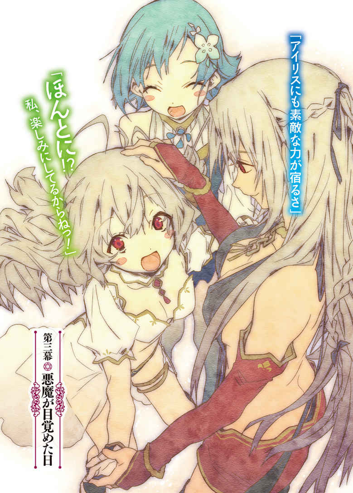
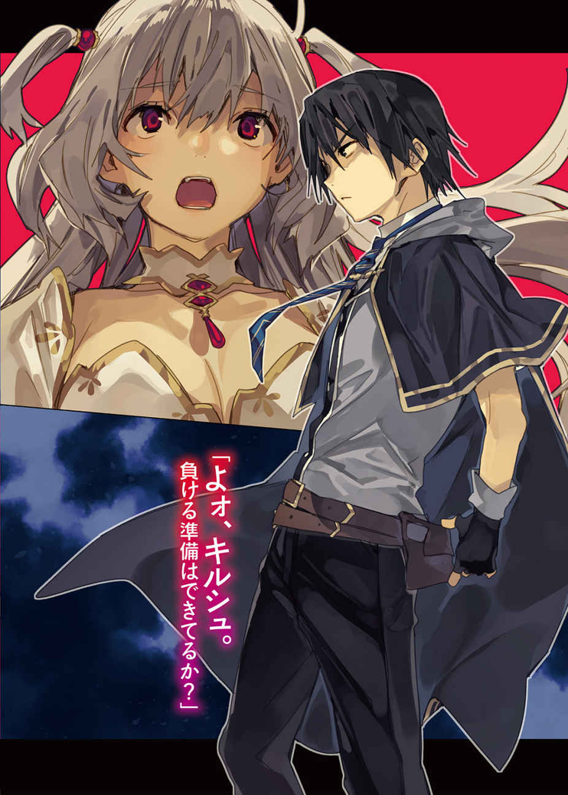
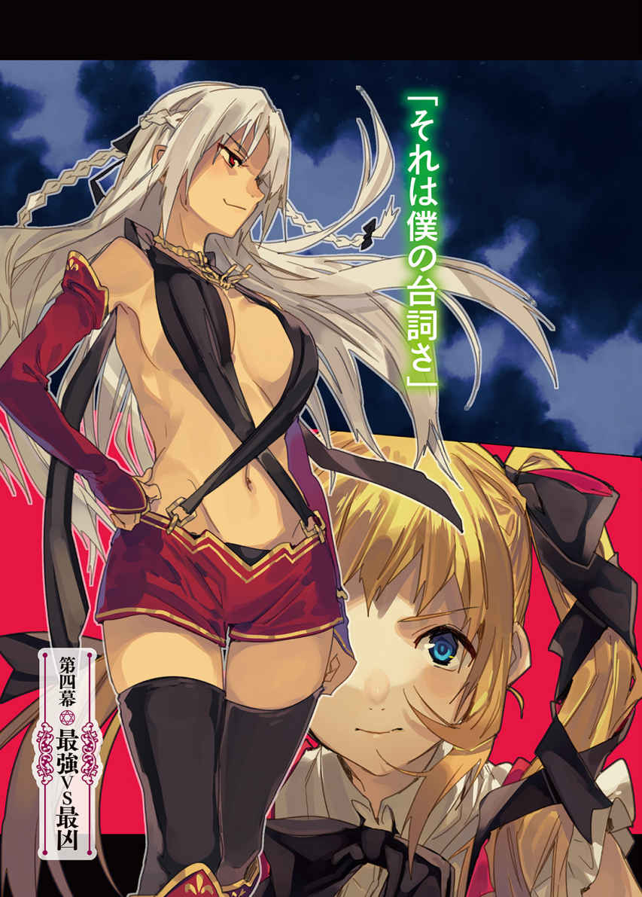
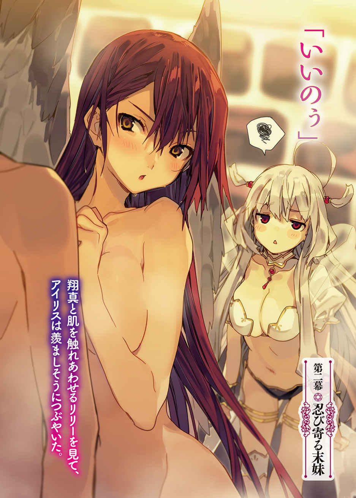
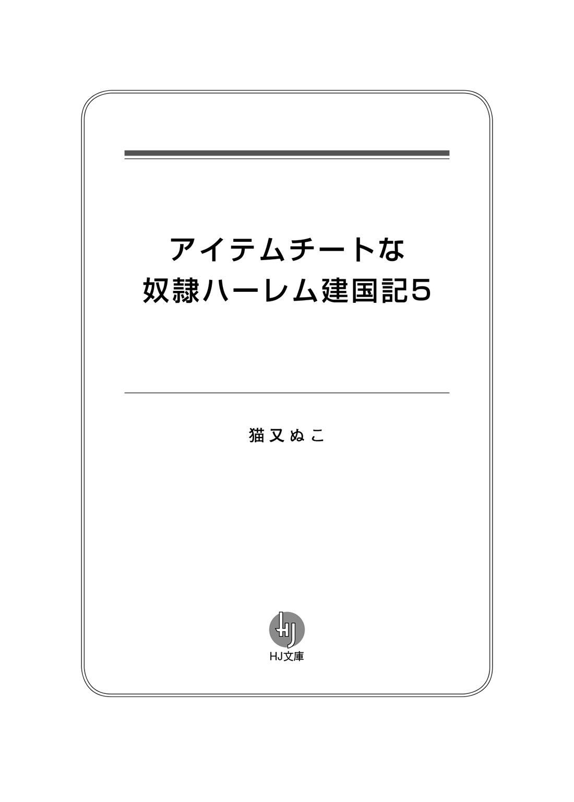
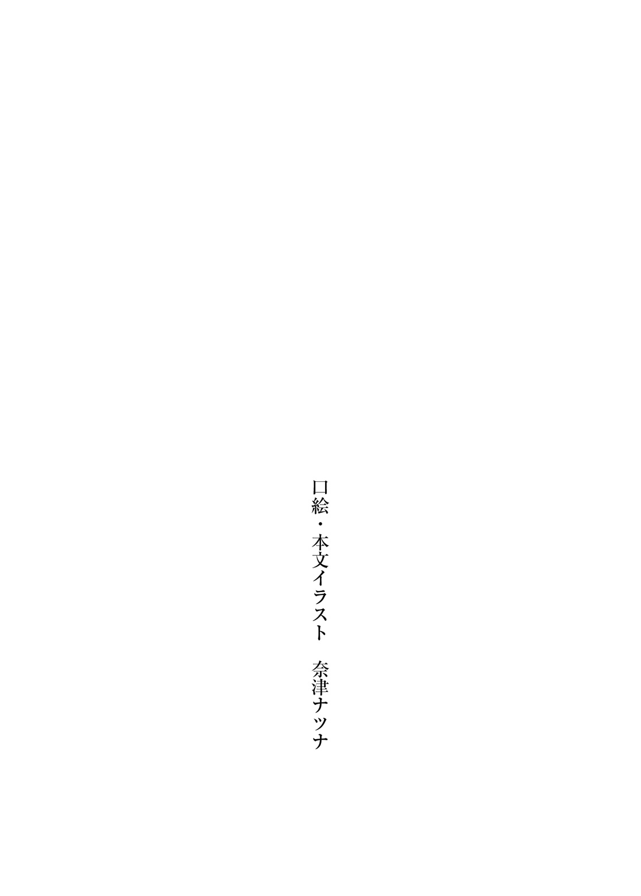
鬱 蒼 と生 い茂 る木々の隙 間 を、むさ苦しい男たちが雑草をかき分けながら歩いていた。
泥 まみれの体毛が全身を覆 う、獣 のような風 貌 の集団である。長いこと歩いているのか、彼 らの顔には疲 れが色 濃 く見えた。
後続の男たちは休みたそうにしているが、誰 ひとりとして足を止めようとはしなかった。そんなことをすれば先頭の男に怒 鳴 られてしまうからだ。
先 陣 を切って森を突 き進 んでいるのは、がっしりとした体形の巨 漢 である。ただでさえ厳 つい顔に怒 りを滲 ませ、苛 立 たしげな足取りで雑草を踏 みしめていた彼は、ふいに足を休めると、木の葉を睨 み上げた。
「くそッ！ 歩いても歩いても木しかねえぞ！ どんだけ深い森なんだここは!? せめて木の実がありゃいいが、葉っぱしかねえ！ このままだとマジで餓 死 しちまうぞ!? おい、ほんとに食 糧 は尽 きたんだろうな!? 」
熊 のような顔に憤 怒 の表情を浮 かべ、男はうしろを歩いていた手下たちを怒鳴りつけた。彼らは身を縮こまらせ、たじろぎながらも弁明する。
「ほ、ほんとに持ってませんって！ なあ？」
「そうですよ！ こないだみんなで手持ちの魔札 を確 認 しあったじゃないっすか！」
「グズマさんこそ、俺 たちに内 緒 で食糧を隠 し持 ってないっすよね？」
手下に疑いの眼 差 しを向けられ、グズマは目つきを鋭 くさせた。薄 汚 れた針金のような体毛を逆立て、手下たちをじろりと睨みまわす。
「てめーら、オレ様を疑うってのか!? 食糧があるならとっくに食ってるに決まってんだろうが！」
腹の底から叫 んだせいで、ぎゅるぎゅると胃が縮む。グズマは腹を押 さえてうずくまり、呼吸を整えると立ち上がった。
ため息まじりに告げる。
「今回は特別に許してやるが、もう二度とオレ様を怒 らせるんじゃねえぞ......。叫んだら、よけいに腹が減るだろうが......」
「......そもそもの発 端 は、おめーがオレたちを疑ったからだろうが」
最 後 尾 に立っていた男が反論してきた。牛のような風貌の大男――ウィードに指 摘 され、グズマはぎりぎりと歯を噛 みしめる。
胃が痛むため怒鳴りたくはなかったが、それでも言わずにはいられない。
「もとはと言えば、てめーがオレ様の忠告を聞かずに竜 胆 翔 真 と戦ったせいだろうが！」
グズマは〈うさぎ亭 〉へ借金の取り立てに行った際、竜胆翔真と名乗る騎士門 の少年と神託遊戯 を行った――翔真は一〇〇〇〇種の魔札を持っていたが、集団で戦えば勝てると確信していた。だが、グズマ一派は完 膚 なきまでに叩 き潰 されてしまったのだ。
さらに死霊門 の自治区 で再起を図 っていたところ、グズマは再び竜胆翔真と出会った。もう二度と翔真とは神託遊戯をしないと誓 ったのに、ウィードはグズマの忠告を聞かず、翔真に敗れて全財産を巻き上げられてしまったのである。
幸いグズマは全財産を巻き上げられたりしなかったが、二度も悪夢を見ることになったのはウィードのせいだ。
それゆえグズマは、ウィードに怒りを募 らせていたのであった。
「しょうがねえだろ！ 竜胆翔真がまさかあそこまで強いとは思わなかったんだよ！」
「オレ様が負けた時点で強いことはわかるだろうが！」
「おめーよりオレのほうが強かったから、勝てると思ったんだよ！」
実際のところ、神託遊戯の実力は五分五分だった。ただウィードにボスとしての風格が備わっていたため、グズマは子分として振 る舞 っていたのだ。
だが、それも過去の話だ。
死霊門自治区にて竜胆翔真に完膚なきまでにやられ、全財産を奪 われ、こうして醜 態 を晒 すウィードに威 厳 を感じることなどできるわけがない。
おまけに全財産を失ったウィードと違 い、グズマはまだ魔札を持っている。それゆえ、グズマとウィードの上下関係は逆転したのである。
「オレ様に文句があるなら、別行動を取ればいいだろうが！」
「そ、そう言うなよ......。オレは竜胆翔真に全財産を奪われちまったんだぜ？ おまけに故郷の連中は、オレのことを白い目で見てやがる。昔からつるんでたおめーらだけが頼 りなんだよ......」
「ウィードのアニキの言う通りっすよ。俺たち、昔からの付き合いじゃないっすか！」
「そうですよ。俺、アニキたちが死霊門まで迎 えに来てくれたとき、マジで嬉 しかったんですからね！ だから俺は仲間を見捨てないって誓ったんですよ！」
「ここまで来たからには、全員で生き残りましょうよっ！ 見つからないに越 したことはありませんけど――全員で迎え撃 てば、キルシュを追い返すこともできますよ！」
死霊門にて翔真との神託遊戯に敗れ、寄り道せずに故郷へ戻 ったグズマたちは、そこで『アストラルがキルシュの手により、もうじき滅 ぶかもしれない』との話を耳にした。
人里に残ればすぐにキルシュに見つかり殺されてしまう。そう判断したグズマ一派は、ありったけの食糧を買いこみ、人里を離 れたのである。
「噂 通りなら、キルシュって女は竜胆翔真と戦うんすよね？」
手下の問いかけに、グズマはうなずく。
「正直、竜胆翔真が負けるとは思えねえがな。だが、万が一ってこともある。だからこそオレ様たちは、こうして森まで逃 げてきたんだ」
安全地帯を求めた結果、グズマたちは餓死しかけているのだ。買いだめしていた食糧は尽きてしまったし、どこかで食べ物を手に入れないと本当に死んでしまう。
「こうなったら人里に下りて、食糧を調達するしかねえな」
「でも金はどうするんすか？ 俺たち、金は持ってないっすよ？ しかも金を作ろうにも、食糧を買いこむとき、手持ちの魔札はあらかた売っちまいましたし......」
「まさかあそこまで金にならないとは思わなかったっすけどね。あいつら絶対、俺たちの足もと見てたっすよ」
「魔札ならオレ様がまだ持ってる。もったいねえが、飢 え死 にするよりは手放したほうが遥 かにマシだ。おい、ウィード。木登りして近くに町がないか確かめろ」
「な、なんでオレが木登りしなきゃならねえんだ？」
「てめーが売る魔札すら持ってねえからだ！」
「せ、せめて〈飛翔 〉か〈浮遊 〉を貸してくれよ......」
「〈飛翔〉も〈浮遊〉も金に換 えた！ てめえの食費になったんだ！ この大飯食 らいのクソ野 郎 が！ 贅 沢 言ってねえで、とっとと登れ！ 少しは役に立ちやがれ！」
「い、いちいち怒鳴るんじゃねえ！ 登ればいいんだろうが、登れば！ ちくしょうめ、もし落ちて死んじまったら化けて出てやるからな......」
ぶつくさ言いつつ、ウィードは木登りする。疲れているのか、のろのろと登っていき、てっぺんにたどりついたところで、「おおっ！」と歓 声 を上げ、地面に降り立った。
「町が見つかったのか？」
グズマが期待をこめてたずねると、ウィードは得意気に言う。
「人里じゃねえが、すぐそこに小屋を見つけたぜ！ 食糧があるかもしれねえ！」
「でかしたウィード！ 行くぜてめーら！」
グズマ一派は希望を胸に、足場の悪い森のなかを突き進んでいく。茂みをかき分けると、開けた場所に小屋を見つけた。
強風が吹 けばバラバラになりそうな木組みの小屋だ。とはいえぼろぼろというわけではなく、むしろ真新しさを感じる。最近まで誰かが住んでいたか――あるいはいまも誰かが住んでいる可能性が極 めて高い。
「いいかてめーら。物音を立てるんじゃねえぞ。こっそり忍 びこんで、食糧を探すんだ。もう面 倒 ごとはごめんだからな」
グズマの指示に、一同はうなずいた。そろりそろりと小屋に近づき、ドアに手をかけたまさにそのとき。
「てめーら、そこでなにやってやがる！」
背後から怒鳴り声 が響 き、グズマはびくっと震 える。
振り返 ると、狼 のような風貌の男が佇 んでいた。
その姿を見た瞬 間 、グズマはぎょっとした。
「フレイク様!? なぜここに!? 」
怒 声 を飛ばしてきたのは、一時期獣牙門 の全権代理者 を務めていたフレイクだったのだ。
ウィードの話では、竜胆翔真に敗れたあと消息を絶っていたとのことだったが、まさかこんなところに潜 んでいたとは思いもしなかった。
「フレイク『様』だとぉ？ ......てめーら、スノウの手先じゃねえのか......？ オレ様を捕 まえるために来たんじゃねえのか？」
口ぶり的に、フレイクはグズマ一派以上に獣牙門の自治区に居場所がないようだ。
無理もない。ただのチンピラだったグズマ一派とは異なり、フレイクは謀 反 を起こし、全権代理者になるはずだったスノウを自治区外へ追放した逆 賊 なのだから。
自治区に戻れば投 獄 されると考えるのは当然だろう。
「あっ、フレイク様！ 俺、こいつらのこと知ってますよ！」
フレイクのうしろに控 えていた獅 子 のようなたてがみを持つ男が、グズマを指さした。
「本当か、インディ？」
「はい！ 精 霊 管 轄 区 の飲み屋街で幅 を利 かせてるグズマとウィードですよ！」
「その名前に心当たりはねえが......精霊の管轄区に店を構えてるってこたぁ、それなりに金持ちってことだよな。そのグズマたちが、なぜこんな場所にいる？」
「オレ様......いや、オレたちも竜胆翔真にやられたんですよ」
グズマは手短に事情を語る。
翔真の命令で故郷に帰ったことを語り、キルシュの話題を終えたところで、フレイクはわなわなと震えだした。
「キルシュってーと、あの忌 々 しいミリアの姉じゃねえか！ あのクソ女の姉に殺されるなんざまっぴらごめんだぜ!? 」
フレイクはキルシュに心当たりがあるようだが、キルシュの『余命一ヶ 月 宣言』は初耳らしい。
ということは、ずいぶん前からこの森に潜 伏 しているのだろう。
つまり、食糧を持っているということだ。
「フレイク様！ どうかオレたちに食糧を分けてください！」
グズマが懇 願 すると、手下たちも頭を下げた。
「オレ様は食糧を持ってねえ。竜胆翔真に魔導指輪 ごと奪われちまったからな」
「で、ではどうやって今日まで飢えを凌 いだのですか？」
「俺がフレイク様に食糧をお届けしたのだッ！ フレイク様の側近中の側近である、この俺がな！」
インディが誇 らしげに言った。
「こいつはオレ様の命令でミリアの野郎を捜 しててな。見つからないって連 絡 が来たとき、オレ様はちょうどクヌル平野を脱 出 したところだったんだ。で、インディに食糧を持ってこさせて、以来この森に潜伏してるってわけだ」
フレイクが詳 細 を語るが、グズマはそんなことどうでもよかった。
重要なのは、インディがまだ食糧を持っているかどうか――そしてそれをグズマ一派に分けてくれるかどうかだ。
「インディ様、どうかオレたちに食糧を恵 んでください！」
「残念だが、それは無理だ。手持ちの食糧は数日前に底を突いたからな。だからこうして食糧を探しまわってるんだ。見つからなかったがな」
「で、では、どうやって飢えを凌いだのですか!? 」
「それは――」
インディが小屋に視線を向けた瞬間、勢いよくドアが開け放たれた。
「家の前でごちゃごちゃうるさいぞ！」
金 髪 をオールバックにまとめた、浅黒い肌 の男である。特 徴 らしい特徴がないところを見るに、男は騎士門のようだ。
「フレイク様？ 誰ですか、この礼 儀 知らずのクソ野郎は？」
まじまじと男を眺 め、グズマはたずねた。
「こいつは家主のクロッカスだ」
「クロッカス......」
グズマはその名前に聞き覚えがあった。クロッカスは騎士門随 一 の資産家だった男だ。精霊管轄区にも店を構えているため、名前を耳にすることは何度かあった。
「そのクロッカスが、なぜこんな森に？」
バカンスで森を訪 れたにしても、こんなみすぼらしい小屋に住むとは思えない。騎士門随一の資産家なら、豪 邸 を建てるはずだ。
「竜胆翔真に全財産を根こそぎ奪われたからだ！ あの野郎、俺の魔札を！ 奴 隷 を！ 土地を！ 家を！ 金を！ なにもかもを奪い取 りやがった！」
クロッカスが忌々しげに怒鳴り散 らした。どうやら彼も竜胆翔真の被 害 に遭 ったらしい。どういった経 緯 で神託遊戯をするに至ったかはグズマにはわからないし、興味もないが、竜胆翔真と戦った以上、クロッカスが並々ならぬ悪夢を見たのは確かだ。
「あの野郎に住む家を奪われた以上、作るしかないからな！ だから小屋を建てたんだ！ クヌル平野を脱出するときに、材料を失敬したからな！ そしたらそこのふたりが転がりこんで来やがって、しかもまたでかぶつが増えた！ 言っておくが、貴様らを住まわせる場所はないからな！」
グズマとしても、むさ苦しい男たちとぎゅうぎゅう詰 めで暮らすのはごめんである。
「住もうだなんて思ってねえ！ 飯を恵んでくれたらすぐに出ていく！」
「欲 しければ探せばいいだろ！ 俺もそうして生きてきたんだ！」
「探す体力がねえんだよ！ せめて食糧のありかを教えてくれ！」
「そうだ、教えろ！」と、フレイクが便乗するように怒鳴る。「何時間も探しまわったが、木の実ひとつ見つからなかったんだ！ せめて水だけでも分けてくれ！」
どうやらクロッカスだけが食糧のありかを知っているらしい。もしかすると、この森は元々クロッカスの領地で――それゆえに、どこになにがあるのかをおぼろげながらも把 握 しているのかもしれない。
「俺に近づくんじゃねえ！ 暑苦しいだろうが！」
グズマ一派とフレイク一派に詰め寄 られ、クロッカスはドアを閉めた。それをこじ開け、無理やり屋内に押し入 ると、クロッカスは根負けしたように座 りこんだ。
「わかった。わかったから騒 ぐな。騒ぐとよけいに腹が減るだろ......」
ため息まじりに言うと、クロッカスは魔札化していた人数分のりんごを具現化させた。グズマたちはすかさず手に取り、かじりつく。
「もっとくれ！」
りんごの芯 まで胃に収め、グズマは頼 んだ。
クロッカスは苛立たしげに眉 根 を寄せる。
「贅沢言いやがって。貴様らのせいで一週間分の食糧が消えちまったんだぞ」
たったあれだけのりんごが一週間分ということは、クロッカスの食糧も底を突きかけているということか。
「このままじゃ、遅 かれ早 かれ餓死しちまうな......おい、てめーら、人里に下りて適当な奴 に神託遊戯を挑 んでこい。で、食糧を奪い取ってこい」
グズマの命令に、手下たちはぶんぶんと首を振った。
「い、嫌 っすよ！ 俺、もう二度と神託遊戯はしないって決めたんすから！」
「そうですよ！ あんな怖 い思いをするのはもうたくさんです！」
手下たちは神託遊戯に怯 えていた。二度も悪夢のような体験をしたことで、トラウマになってしまったのだ。グズマとて相手が竜胆翔真であろうとなかろうと、もう二度と神託遊戯はしないと心に決めている。
「そもそも人里がどこにあるのかわかりませんし、わかったとしても行きたくないです！ へたすればキルシュに殺されるんですから！」
「殺されるって、どういう意味だ？」
怪 訝 な顔をするクロッカスに、グズマは事情を告げる。
「......つまり、俺たちの命は竜胆翔真にかかってるってわけか」
グズマが話し終えたとき、クロッカスは複雑そうな顔をしていた。
こうなったそもそもの原因は翔真にあるのだ。素 直 に応 援 はできないのだろう。
「オレ様としては、竜胆翔真とキルシュが相打ちするのが理想だがな」
フレイクの言う通りだとグズマは思ったが、神託遊戯に相打ちはない。どちらか一方が勝つことになるのだ。
とはいえどちらが勝ったとしても、グズマの死は濃 厚 である。
となると、生き残るためにグズマが取るべき道はひとつしかない。
「おい、クロッカス。竜胆翔真がどこにいるか知ってるか？」
「それを聞いてどうする？」
「会いに行くんだ。あいつは、オレが望むものをすべて持ってるからな。正直、あいつに会うのは怖いが――このままだといずれ死ぬんだ。黙 って死を待つのはごめんだぜ。で、どうなんだ？ 知ってるのか？」
あらためてたずねるグズマに、クロッカスはうなずいた。
「竜胆翔真の居場所なら知っている。あいつが住んでるクヌル平野も、この森も、元々は俺の領地だったからな。だから当然、そこまでの道のりも知っている。貴様が再会を望むなら、俺が道案内してやろう。あいつには、言いたいことがあるからな」
「クロッカスが行くならオレ様も行くぜ！ てめーがいないと食糧がなくなっちまうからな！」
「フレイク様が行くなら俺も行きます！ 俺はフレイク様の側近中の側近ですからね！」
この場の全員が、竜胆翔真のもとへ向かう決意をしたようだ。それぞれの顔を見まわし、クロッカスは肩 をすくめる。
「しょうがないから道中の食糧は恵んでやるが、この恩は一〇〇倍にして返せよ？」
全員がうなずいたのを見て、クロッカスは小屋を魔札化させた。
そうしてグズマ一派とフレイク一派は、クロッカスの道案内を受け、竜胆翔真の住まうクヌル平野へと向かうのだった。
その日の朝。
クヌル平野に悠 然 と佇む古城の一室にて、竜 胆 翔 真 は寝 苦 しさに目を覚ました。
上半身を起こそうかと思ったが、まるで両 腕 に重りをつけられたように動きづらかった。とはいえ実際は重りをつけられたわけではなく、女の子たちが翔真の腕 を抱 き枕 代わりにして眠 っているだけなのだが。
右腕と左腕に抱きついてる、ふたりの娘 ――。双 方 ともに美しい顔立ちをしているが、ふたりには大きな違いがふたつある。
体つきと、体 臭 だ。
右腕に抱きつく娘は大人びた体つきをしており。
左腕に抱きつく娘は熟した果物のような甘 い香 りを放っている。
翔真は甘い香りと柔 らかな感 触 を楽しみながら、二 度 寝 に興じようとした。
「んんっ」
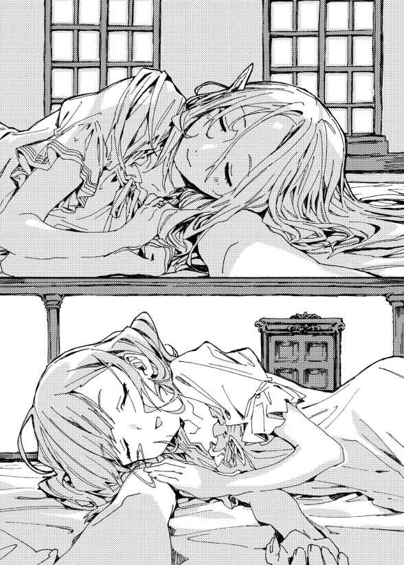
ふいに右側の娘が小さな声をもらした。そちらを見ると、長いまつげに縁 取 られた瞳 と目が合った。
翔真と視線が交わった途 端 、美 貌 に笑 みが広がっていく。大人びた顔つきだが、笑うととても幼く見えた。
「よォ、俺の抱き心地 はどうだ？」
微 笑 を向けると、彼 女 は翔真に抱きついたまま、うっとりとした声で言う。
「こうしていると、安 眠 できるのだよ。きみのとなりは、とても居 心地 がいいのでね」
「そいつはよかった。なんだったらもっと強く抱きついてもいいんだぜ？」
「そうするのだよ」
彼女は翔真の胸に頬 を寄せた。ますます身動きが取りづらくなるが、美女に甘えられるのは素直に嬉しいことなので、翔真は不満など感じない。
「にしてもお前、変わったな」
うとうとしていた娘は、ぱちっと目を開く。いまの質問で眠 気 が飛んでしまったらしい。
「どう変わったのだね？」
「最初は俺を見るたびに顔を真っ赤にさせてたのに、いまじゃ堂々と甘えるようになっただろ」
最近はべたべたと甘えてくるようになったが、はじめて一 緒 に寝 ることになった日は、緊 張 していたのかなかなかベッドに入ろうとしなかったし、はじめて会った日に至っては、視線すら合わせようとしてくれなかったのだ。
なぜなら彼女――森棲門 の全権代理者 たるカトレアは、翔真を警 戒 していたのだから。というのも、カトレアの姉は翔真の祖父たる敦 盛 に恋 心 を抱 き、全権代理者でありながら自治区 を捨てて行方 を暗ませてしまったのである。
それゆえカトレアは姉のように恋 をするまいと心に誓い、男を遠ざけて生きてきたのだ。敦盛の孫である翔真と接すれば姉のように恋をしてしまい――自治区を捨てて民 を不安にさせてしまうかもしれないと思い、翔真を避 けてきたのである。
しかし翔真を嫌 っていたわけではなく、むしろカトレアは翔真に好意を持っていた――アストラルを蹂 躙 した暴風雨を消し飛ばした翔真に感謝し、いつかお礼がしたいと思っていたのである。
そんな葛 藤 を胸に秘 めたままクエストに参加したカトレアは、翔真と出会った。そして、クエスト中に感謝の気持ちを告げ――翔真に結 婚 を申しこんだ。
翔真はその話を嬉 々 として受け入れ、親 睦 を深めるべく一緒に寝ることにしたのだが、彼女は恥 ずかしがり、なかなかベッドに入ってくれなかったのである。
だが、いまは違う。
「最初はきみのそばにいるだけで心臓がばくばくして、緊張のあまり倒 れそうになった。でも、ほかの嫁 たちがきみと仲良くしているのを見ると羨 ましくなって......思いきって、自分の気持ちに素直になることにしたのだよ」
嫁たちといちゃつく翔真を見て、カトレアは吹っ切 れた――積極的に好意を示すようになったらしい。
「こうして思う存分きみに甘えることができて、吾 輩 は幸せなのだよ。できることなら、吾輩は毎日きみに甘えたいのだよ。......だけど、しばらくは我 慢 するのだよ」
「我慢とかするこたぁねえよ。甘えたければ好きなだけ甘えてくれていいんだぜ。なにせお前は俺の嫁だからな」
カトレアは嬉しげに頬を緩 める。
「きみと結婚できて、吾輩は本当に幸せなのだよ。だからこそ、しばらくのあいだきみに甘えるのを我慢するのだよ。なにせ、きみはじきにキルシュと神託遊戯 をするのだからね。いまは神託遊戯の準備に時間を使ってほしいのだよ」
いままでは極 一部の人間しかその存在を知らなかったが、いまやキルシュは翔真に並ぶ有名人だ。
なぜならキルシュは翔真との神託遊戯に勝利して魔札 全種を集め、アストラルを暴力が許される世界に戻し、ありとあらゆる種族を殺そうと企 んでいる――そんな野望を大衆の前で宣言したのだから。
そしてキルシュの野望が成 就 するかどうかは、翔真にかかっている。翔真とキルシュは十日後に神託遊戯をすることになっており、その戦いの勝者が魔札全種を手に入れるのだ。
つまり、あと十日で世界が滅ぶかもしれないのだ。アストラルの人々は翔真に期待する一方で、本当に世界は滅んでしまうのではないかと不安に感じているのである。
そんななか、当事者である翔真は不安を感じていなかった――不安を感じるどころか、キルシュとの神託遊戯を心待ちにしているのだ。
なぜなら翔真は神託遊戯が大好きだから。
「俺の心配はいらねえよ。だから忙 しいとか気にするな。甘えたくなったら、すぐに俺のところに来い」
翔真が力強く告げると、カトレアはうっとりとした顔をした。
「きみなら勝てると信じているのだよ」
「あたしも信じてるわ」
甘い吐 息 が翔真の首筋を撫 でた。
となりを見ると、愛くるしい顔立ちの娘がこっちを見ていた。
死霊門 の全権代理者を務めるシャーロットである。
「なんだ、起きてたのか」
「ついさっきね。それとも寝たふりしてたほうがよかったかしら？ あんたたち、すごく楽しそうに話してたし......」
シャーロットは言 葉 尻 を弱めていく。翔真と楽しくおしゃべりしていたカトレアに嫉 妬 しているのだろうか。
あるいは――シャーロットがこの寝 室 を訪れたとき、すでにカトレアは到 着 していたし、ふたりの邪 魔 をしてしまったかもと不安に感じているのかもしれない。
「吾輩としては、寝たふりをしていてほしかったのだよ。翔真とふたりきりになる機会はなかなかないのでね」
「それはあたしの台詞 よ」
と、シャーロットは翔真越しにカトレアを睨む。どうやら不安に感じているのではなく、嫉妬していただけらしい。
「今日こそは翔真とふたりきりになれると思ったのに、あんたがいるんだもの。前回来たときはスノウとシャロンがいたし、その前はリリーがいたし......ま、けっきょくのところ、こいつがいる限り、翔真とふたりきりにはなれないんだけどね」
ふわふわと宙を漂 ったまま眠るアイリスを見つめ、シャーロットは言う。
「アイリスってば、いつもいつも翔真にべったりなんだもの。だから翔真とふたりきりになることなんてできないわ」
「シャーロットは、アイリスのことが嫌いか？」
「嫌いじゃないわ」
シャーロットは即 答 した。彼女は嫁のなかではアイリスと一二を争 うほど嫉 妬 深 いが、だからといって相手を憎 み、敵視するような娘ではないのだ。
「嫌いじゃないけど......でも、あんたとふたりきりになりたいのよ」
シャーロットは切なげにため息をつき、翔真の腕に自分の腕を絡 めてきた。
「ねえ、赤ちゃんを作るときくらい、ふたりきりになれるわよね？」
シャーロットは恥ずかしそうに頬を赤らめつつもたずねてきた。彼女にとっては大事な質問なのだろう。
翔真はまじめなトーンで語る。
「安心しろ。そのときはふたりきりになるからな」
極一部の人間しか知らないが、アイリスは翔真に取り憑 いているのだ。そのため離れることができないのである。
しかし実体を取り戻すことができれば、アイリスは普 通 の体質に戻るのだ。まあ普通の体質に戻ったらアイリスはこれまで以上に翔真に密着するだろうが――さすがに子作りのときは別室で待機するはずだ。
「それを聞いて安心したわ。だって、あんたのまわりにはいつも女の影 があるんだもの。アイリスに、ルメリアに......って、そういえばルメリアが見当たらないわね？」
ルメリアのベッドは綺 麗 に片づけられていた。翔真を起こしてしまわないよう、物音を立てずにベッドを整え、部屋をあとにしたのだろう。
「ルメリアは朝から仕事があるとか言ってたぜ」
ルメリアはカンナの店でウエイトレスとして働いている。彼女が仕事に出かけたということは、クヌル平野の人々も働き始めている頃 だ。もうじき外は賑 々 しくなるだろう。
「吾輩、そろそろ仕事に戻らなければならないのだよ」
カトレアは名残 惜 しそうに起き上がると、翔真を見つめてもじもじした。
「行ってらっしゃいのハグをしてくれると嬉しいのだがね」
翔真は微笑した。
「お安い御 用 だ」
翔真はベッドから抜 け出 ると、もじもじするカトレアをそっと抱きしめる。
抱 擁 を解いたとき、彼女の長い耳は先 端 まで赤く染まっていた。
「これで今日も頑 張 れるのだよ。......また泊 まりに来てもいいかね？」
「大 歓 迎 だ。次は一緒に風 呂 に入ろうぜ」
カトレアが寝室を訪れたのは夜中だったため、一緒に入浴することはできなかったのだ。カトレアはこくりとうなずくと、一日以上滞 在 したことのある場所へ繋 がる門を開く魔札――〈想い出の地へと続く扉 〉を詠 唱 した。
「あたしもそろそろ帰らなきゃ」
カトレアがいなくなったのを見届けてから、シャーロットが身を起こした。
「せっかくふたりきりになれたのに帰っちまうのか？」
厳密にはアイリスがいるが、眠っているためふたりきりのようなものだ。
「できればもっと一緒にいたいけど、今日は騎士門 の重 鎮 が来る大事な日だもの。失礼のないように、しっかり身なりを整えて出 迎 えなきゃいけないわ」
長いこといがみあっていた各門派 は、聖神門 を除き、翔真を架 け橋 に同盟を結んだのだ。各門派の重鎮たちはより親交を深めるため、互 いの自治区を訪れているのである。
「重鎮ってこたぁ、ミストも来るのか？」
「そう言ってたわね。翔真は元気にしてるって伝えておくわ」
「そうしてくれると助かるぜ。ミストはなかなか泊まりに来ないからな」
最後にミストと会ったのは二週間ほど前のことだ。仕事が忙しいというのもあるが――なによりミストはうぶなのだ。翔真と一緒にいるとどきどきして眠れないらしく、翌日の仕事に支障を来 してしまうため、大きな仕事が終わったあとしか会いに来ないのである。
「......ねえ、ぎゅってしてくれる？」
シャーロットが甘えるようにささやいてきた。カトレアとのやり取りを見て、羨ましくなったのだろう。
断る理由もなく、翔真はシャーロットを抱き寄せた。力を入れると折れてしまいそうな華 奢 な身体 を抱きしめていると、シャーロットは翔真の胸に顔を埋 めてきた。
しばらくして満足したのか、シャーロットのほうからそっと離れる。そして〈想い出の地へと続く扉〉を詠唱すると、光 り輝 く穴のなかへと去っていった。
そうしてふたりを見送った翔真は軽くのびをしたあと、ふわふわと宙を漂っていた嫁のもとへ向かう。
彼女を起こして、出かけることにしたのだ。
「アイリス、起きろ」
彼女は翔真に取り憑いているうえに幽 体 なので、このまま出かけても障害物にぶつかることなく移動できるが――そうすると民に寝 顔 を見られてしまい、恥ずかしい思いをすることになる。気持ちよさそうに寝ているが、起こしてやったほうがいいだろう。
何度か声をかけていると、アイリスはうっすらと目を開けた。真 紅 の瞳で翔真を見つめ、むにゃむにゃとつぶやく。
「んむぅ......もう朝か？」
「朝だ」
「ならば起きねばならぬのぅ......む？ そなたしかおらぬのか？」
ぐしぐしと目をこすり、アイリスは寝室を見まわしながら言う。
「ふたりはどうしたのじゃ？」
「そろそろ仕事があるとか言って帰ったぜ。あいつらだけじゃなく、ルメリアも、それに町の連中も働いてるんだ。俺たちだけだらだらするわけにはいかねえぜ」
「じゃな。そなたの言う通りじゃ。今日もよい天気じゃし、早く外に出たいのじゃ」
早くもお出かけモードになったらしい。
アイリスは気持ちよさそうにのびをすると、うきうきとした様子で窓の向こうを眺めた。窓から差しこむ陽光を受け、透 き通 るような白銀の髪 が煌 めいて見える。
まるで散歩を待ち遠しくする子犬のようだ。早く外に出たがっているアイリスのために、翔真は手短に身 支 度 を整えた。
そして外へ出ようとしたところで、床 に真紅の魔 法 陣 が広がった。
寝室を赤く染め上げるように光り輝く魔法陣から飛び出 してきたのは、怜 悧 な顔立ちの娘であった。
青みがかった髪を肩まで伸 ばし、清 楚 な衣装を纏 っているのは――アイリスの妹にして最高神代理を務めるティナである。
「よォ、ひさしぶりだな」
ティナと会うのはクエスト以来だ。翔真が親しげに笑いかけると、ティナはむっつりと唇 をとがらせた。怒 っているわけではなく、これが彼女の素 の表情だ。
「ずいぶんと落ち着いているのですね」
「そんなことねえぜ。いきなり美女が現れたんで緊張してるからな」
翔真が冗 談 めいた口調で言うと、ティナの頬がじんわりと赤くなっていく。
「あなたはあいかわらずですね。キルシュとの神託遊戯まであまり日がないというのに、緊張感はないのですか？」
「緊張どころか、わくわくしてるぜ！ キルシュとの神託遊戯は前々から楽しみにしてたからな。早く戦いたくてしかたないぜ！ もちろん楽しむだけじゃなく、最後は必ず俺 が勝つからな。だから今日から安心して寝ていいんだぜ」
ティナの目の下にはくまができていた。世界の命運がかかった神託遊戯が迫 り、彼女は眠れない日々を過ごしているのだろう。
「なんだったら俺が添 い寝してやろうか？」
「な、なぜあなたと寝なければならないのですかっ！」
「俺と寝ると安眠できるらしいからな。どうだ？」
「お断りしますっ」
叫 んだら元気になったのか、ティナの顔色が良くなっていく。
しかし不安感は拭 いきれないようで、ティナは探 りをいれるような視線を向けてきた。
「それで、どうなのですか？ ずいぶんと余 裕 のようですが、キルシュを倒す必勝の策は思いついた......のですよね？」
「まだ思いついてないぜ」
あっけらかんとした口調で告げると、ティナはショックを受けたようにあとずさった。ベッドにつまずき、背中から倒れこむ。
「俺と寝る気になったのか？」
「茶 化 さないでくださいっ！」
先ほどと違 い、今度は怒っているような口ぶりだった。が、怒るどころではないようで、ティナは信じられないといった様子で詰め寄ってくる。
「ま、まだ思いついてないのですか!? 」
「おう」
けろっとした顔で認めると、ティナの顔から血の気が引いていく。
「そう、ですか......あなたのことだから、てっきり完 璧 な作戦を考えているとばかり......やはりキルシュを倒す作戦を考えるのは難しいのでしょうか？」
「そういうわけじゃねえが、キルシュがこれまで戦ってきた連中のなかでは一番強いってのは間 違 いないだろうな」
なにせキルシュは〈強化 〉の使い手なのだから――。その力を使うことで、キルシュは魔札の威 力 を高めることができるのだ。作戦を誤れば、瞬 時 に決着がつくことになる。
だからこそ、翔真はわくわくしているのだ。
ザコと戦ってもわくわくできないし、勝っても嬉 しくないのだから。
強敵との戦いこそ、翔真が望んでいた神託遊戯なのである。
「で、でも思いつきますよねっ？ キルシュに勝てますよねっ？ じゃないとこの世界は滅 んでしまうんですから......」
「安心するのじゃ！ 翔真は必勝の策を思いついておるのじゃからな！」
と、アイリスが明るく叫んだ。
ティナが戸 惑 うように目をぱちくりさせる。
「で、ですが、翔真さんはなにも思いついてないと......」
「この場ではそう言うしかないのじゃ。なにせミリアに心の声を盗 み聞かれる怖 れがあるのじゃからな」
ティナははっとした。
「わたしとしたことが、キルシュを警戒するあまり、ミリアの存在を失念していました」
ミリアは対象の心の声を盗み聞く〈読心 〉の使い手だ。
いかに必勝の策を思いつこうと、読まれてしまっては意味がない――どころか逆効果だ。対 抗 策 を打たれ、為 す術 もなくやられてしまうだろう。
実際、獣牙門 最強の魔札使いと謳 われていたスノウは、心の声を盗み聞かれ、ミリアにあっけなく敗れてしまったのだから。
しかし、翔真はミリアに勝った。あのときは魔導指輪 を外すことで翻 訳 機能を解除し、ミリアに読まれる心の声を日本語にすることができたが――魔導指輪を外したところで、ミリアに翻訳の魔札を使われてしまえば打つ手がない。
つまり、ミリアの〈読心〉を防ぐ手段はないのである。
「わしらにできるのは、ミリアの標的を増やさぬことじゃ。キルシュを倒す必勝の策は、翔真が知っていればそれでよい。不安になる気持ちはわかるが、神託遊戯のことは翔真に任せるとよいのじゃ！」
「はいっ！」
アイリスに明るく告げられ、ティナは安心したように笑みを浮 かべる。
......実際のところ、翔真は本当に作戦を思いついていなかった。
なぜなら試 してみたい作戦が次から次に思 い浮かぶのだ。いま作戦を決めてしまうと、残りの十日間は退 屈 な時間を過ごすことになってしまう。
つまり一層神託遊戯を楽しむため、翔真はあえて作戦を決めていないのだった。まあ、真実を告げるとティナを不安にさせてしまうため、黙っておくことにするが。
「安心したら眠くなっちゃいました」
「一緒に寝てやろうか？」
翔真がここぞとばかりに言うと、ティナはくすっと笑う。心から安心したからか、笑う余裕ができたらしい。
「あなたはそんなにわたしと寝たいんですか？ ほんと、甘えん坊 さんですね」
からかうような口ぶりだ。
「そりゃ、ティナみたいな美女と寝たいと思うのは男として当然の願望だからな」
翔真が真顔で口説くと、ティナは笑みを引っこめた。緊張するように顔をこわばらせ、じわじわと頬を赤らめていく。
「......で、でしたら、キルシュを倒したら、ご褒 美 に少しだけ添い寝をしてあげます」
「ほんとか？ そいつは楽しみだぜ」
「そ、そんなに楽しみなのですか......？」
「おう。最高の褒美が待ってるんだ、絶対にキルシュを倒すと誓 うぜ！」
翔真が力強く告げると、ティナは嬉しそうに頬を緩めた。翔真の口から『倒す』という言葉が飛び出し、不安感は完全に吹 き飛 んだようだ。
「......わしと寝るのは、楽しみではないのかのぅ？」
代わりにアイリスが不安げにする。
翔真を妹に取られるのではないかと心配なのだろう。
「楽しみに決まってるじゃねえか。さっさと魔札をコンプリートして、アイリスの身体に触 りたいぜ」
アイリスはぱあっと顔を輝かせた。ティナと違って、アイリスはちょろいのだ。まあ、その扱 いやすさもアイリスの魅 力 のひとつなのだが。
「早くそなたに触ってほしいのじゃっ！ ぎゅうって抱きしめてもらって、むちゅぅってキスをしてもらうのじゃっ！ 楽しみじゃのぅ......」
アイリスが機 嫌 を取り戻 したところで、ティナは魔法陣とともに姿を消した。
それを見送り、翔真はアイリスをつれて城をあとにしたのであった。
◆
朝のクヌル平野は活気にあふれていた。ほんの四ヶ月前までは荒 野 だったとは思えないほどの賑々しさだ。
とはいえクヌル平野が最も賑 やかだったのは二ヶ月ほど前だ。獣牙門のお家騒 動 の際に多くの獣牙門の民が押 し寄せ、人口は一〇〇〇〇人を突 破 したが、スノウが全権代理者に就任すると大勢が自治区に引き返していったのである。
だが全員が引き返したわけではない。一〇〇〇人近い獣牙門がクヌル平野に残り、この町の発展に尽 くしてくれている。
それから二ヶ 月 ほどが過ぎ、人口は二倍に膨 れあがった。クヌル平野の知名度は高く、異種族共存という翔真の理念はアストラル全土に広まった。町作りを手伝うため、多くの人々がわざわざ引 っ越 してくれているのだ。
「ずいぶんと家が増えたのぅ」
「それだけひとが増えたってことだろ」
「わしらの理念に共感してくれる者が大勢いるということじゃな？」
「そういうこった。異種族同士でいがみあうより、みんなで仲良く平和に暮らしたいって連中が大勢いたんだろうぜ。異種族と仲良くしようなんて口にしたら迫 害 されると思って、言い出せなかったんだろうがな」
「逆に、そなたは大々的に宣伝しておったのぅ。まさか世界中を瞬間移動 で巡 って宣伝をするとは思わなかったのじゃ」
「そうでもしないとひとは集まらないだろうしな。ちょっと噂 を流した程度じゃ、異種族共存の自治区なんて、誰 も信じないだろうしさ」
「たしかに最初は半信半疑だった者も多いじゃろうな。ま、いまは誰も存在を疑わぬじゃろうがな。ほんと、最初にクヌル平野を訪れたときは、まさかここまで賑やかになるとは思いもしなかったのじゃ。つい四ヶ月前までは、荒野が広がっておるだけじゃったしな。......ところで、どこに向かっておるのじゃ？」
翔真と楽しげに話していたアイリスは、ふと思い出したようにたずねてきた。
「南エリアに向かってるぜ。最近、南の奴らには顔を見せてなかったからな」
「ならば不安がっておるかもしれぬな」
「ああ。仕事に集中してもらうためにも、安心させてやらねえとな」
クエストの閉会式にて『余命一ヶ月宣言』を聞いた人々が、故郷に戻ったあとその話を広めたのだろう。十日後に翔真とキルシュが神託遊戯をすることは全人類が知っているし、クヌル平野の民が知らないわけがない。
世界中の誰よりもクヌル平野の民は翔真の実力を知っているし――翔真が全権代理者を務めるクヌル平野の治安の良さは身に染 みて理解しているだろうが、万が一翔真が負けてしまった場合、真っ先にキルシュに狙 われ、火の海になるのはクヌル平野だ。
民がそう不安に感じているだろうと考え、翔真は町を出歩いて元気な姿を見せてやっているのだ。
「さて、ついたぜ」
そうして新たに建築中の住宅区を訪 れると、筋肉質な男たちが散見できた。騎士門に、獣牙門に、飛翼門 。なかには甘い香りを放つ死霊門の男もいる。
いくつかのグループを作り、それぞれ家を建てているが、種族同士でグループを組んでいるわけではない。
彼 らは種族の垣 根 を越えて協力し、家を建てているのである。
「全権代理者様！ アイリス様！」
翔真に気づき、男たちが群がってくる。美女はひとりとして見当たらないが――相手が男だろうと、こうして好意を向けられるのは嬉しいことだ。
翔真は男たちに笑いかけた。
「よォ、調子はどうだ？」
「順調です！」
「このペースなら、三ヶ月後にはここら一帯に家が建ち並んでますよ！」
キルシュとの神託遊戯は十日後に迫っているが、男たちは三ヶ月後の話をする。つまり、彼らは翔真の勝利を信じているということだ。
「そいつはよかった。じゃ、引き続き頼むぜ」
そう告げると、翔真は再び歩きだした。仕事に精を出す民たちに声をかけつつ、翔真は道なりに歩いていく。
二時間ほどそうしていると、殺風景になってきた。クヌル平野はあまりにも広大すぎるため、七割以上が更 地 のままなのである。
このペースで人口が増え続ければ、いずれはこのあたりも賑々しくなるだろう。そんな光景を思い描 くと、自然とやる気が湧 いてくる。
「これからどうするのじゃ？」
ひとの姿が見えなくなったところで、アイリスがたずねてきた。
「クヌル平野の見まわりはひとまず切り上げて、次はスクレの樹海に行くぜ」
「ジュナに会いに行くのじゃな？」
「そうだ」
ジュナは巨人門 の全権代理者を務める娘にして、翔真の嫁だ。
巨人門は長らく食 糧 問題と土地不足に悩 まされ、緩やかに衰 退 の一 途 を辿 っていたのだ。そこで翔真はスクレの樹海を貸 し与 えたのである。
なにせスクレの樹海はクヌル平野以上に広大な森林地帯なのだから。あそこなら身体の大きな巨人門が住まうに相応 しい――焼け石に水とはならないだろう。
とはいえスクレの樹海は森林地帯だ。住むには開 拓 しなければならず、すぐに集団移住できるわけではない。
そのためジュナはまず開拓希望者を募 り――想定以上の人数だったため選別し、いまはスクレの樹海で開拓の指揮を執 っているのだった。
しかし巨人門は臆 病 な種族だ。
キルシュの『余命一ヶ月宣言』を聞き、いま最も怯 えている種族は巨人門に違いない。そんな心理状態では仕事に集中できないだろうし、ジュナひとりでは怯える民をなだめるのは難しいだろう。
なによりジュナ自身も怯えているはずだ。
「シャーロットやカトレアたちと違って、ジュナは自分の意思で俺に会うことができねえからな。こっちから慰 めに行かなきゃならねえんだ」
巨人門が下手に出歩けば、誤ってひとを踏 み潰 してしまう怖れがあるのだ。それを怖れ、同盟を結びながらもジュナをはじめとした巨人門はクヌル平野を訪れないのである。
「そなたを見れば、ジュナも喜ぶじゃろ」
「ジュナには嫉妬しないんだな」
ほかの嫁に会いに行くと告げれば、さぞかしアイリスは取り乱したことだろう。わしがいるのにほかの嫁に会いに行くのか――といった具合に。
「わしはジュナの気持ちが痛いほどわかるからのぅ。好きな相手と自由に触 れあうことができぬというのは、とてもつらいことなのじゃよ」
幽体ゆえに翔真に触れないアイリスは、巨 体 ゆえに翔真に触ることができないジュナに共感しているらしい。
そうしてしみじみと語るアイリスを連れて、翔真はスクレの樹海へと瞬間移動するのであった。
スクレの樹海に到着した途端、ぐらぐらと足もとが揺 れるのを感じた。地 震 ではなく、これは巨人門の足音だ。
踏み潰される怖れがあるため、近くに巨人門がいないことは世界を見通す〈千里眼 〉で確 認 済みだが、地 響 きを上げている。つまり、大勢がスクレの樹海に集まっているということだ。
翔真は〈飛翔 〉の魔札を詠唱した。ふわりと宙を舞 い、ぐんぐんと高度を上げると――視界が開ける。
地平線の彼方 まで緑が広がり、遠くのほうに大男たちが行き交っている。どうやら伐 採 しているようで、数キロ先は更地になっていた。
あのペースなら三ヶ月後には見 渡 す限りの木が伐採され、家の材料として生まれ変わるだろう。
騎士門や獣牙門にとっては驚 異 的 な開拓スピードだが、巨人門としては遅 いくらいだ。彼らが本気を出せば、一ヶ月もあればあたり一面を丸 裸 にできるはずだ。
やはり彼らは世界が滅ぶかもしれないと不安に感じているのだ。
それゆえ作業に集中できないのだろう。
さっそく励 ましてやらないと。
翔真は五〇〇メートルほど向こうに見知った娘を捉 え、そちらへ移動する。
「よォ、ジュナ」
風を切って空を飛び、少女の目の前で静止する。――と、桃 髪 の娘は驚 いたように目を見開いた。
「翔真さんっ！ それにアイリスさん！」
大きな瞳でふたりを見つめ、可愛 らしい顔に笑みを広げていく。
「ふたりともどうしたのっ？」
「ジュナに会いたくなってな。元気にしてたか？ 飯は食ってるか？」
「翔真さんったら心 配 性 ね」
ジュナは嬉しそうにくすりと笑う。
「仕事ばかりで疲 れるけど、昔よりはずっとましだよっ。翔真さんと出会う前は、その日食べるものにも困ってたし――巨人門は滅ぶんじゃないかって不安で眠 れなかったもの。だから翔真さんには本当に感謝してるわ。食糧問題も解決してくれたし、こんなに素 敵 な土地を貸してくれたんだもの。おかげで巨人門は衰退せずに済むわっ」
巨人門が土地を求めていたのは居住スペースが足りなくなったからではなく、畑を作り、農作物を育てることができなくなったからだ。
巨人門は長いこと土地を酷 使 しすぎた結果、地中の微 生 物 が死に絶え、かつてのクヌル平野のように死に絶えた土地になってしまっていたのだ。畑として機能する土地が減りに減ったため、食糧不足に繋がったのである。
「ここならたくさんの食糧が作れるわ。だって、こんなに立派な木々が生 い茂 ってるんだもの。土が生きてる証 拠 だわ。それに町を作るのは、とっても誇 らしい仕事だわ。開拓を手伝いたいってひとは大勢いるし、もちろん移住したがってるひともたくさんいるわっ。そのためにもまずはお家 を建てなきゃいけないのよ」
ジュナはどんどん声 色 を明るくさせていく。翔真の顔を見て、一気に安心感が蘇 ったのだろう。
「移住者はこれで全部か？」
「ううん。一ヶ月おきに五〇〇人ずつ増やしていく予定だよ。まずは独身のひとを中心に呼びこんで、住めるようになってきたら家族連れを呼ぶの」
「家族連れか。ここなら遊び場にも困らないだろうし、子どもたちも大喜びだろうな」
「うんっ。子どもたちも早く引っ越したいって楽しみにしてるよっ。このあたりは雨量が多いし、水不足の心配はなさそうだからね。泥 んこになっても怒られたりしないわ」
「そいつはよかったぜ」
「うん。それもこれも、土地を貸してくれた翔真さんのおかげだよっ」
「気にするな。俺としても、可愛い嫁の喜ぶ顔を見ることができて大満足だからな。ま、これからも困ったことがあればすぐに言えよ。可愛い嫁の頼 みなら、なんでも聞いてやるからさ」
「ほんとに？」
と、ジュナは期待するような眼 差 しを向けてきた。どうやら頼みたいことがあるようだ。
「おう。なにかあるなら遠 慮 なく言え」
ジュナは頬 を染めると、恥ずかしいのかささやくように言う。
「キルシュとの神託遊戯が終わって、開拓の仕事が一段落ついたら、わたし、翔真さんの赤ちゃんがほしいの」
「ちょっと待つのじゃ！」
アイリスが待ったをかけた。
ジュナに共感しているとはいえ、いまのは容 認 できないらしい。
「その仕事というのは、どれくらいで一段落するのじゃ？ 一〇年くらいか？」
「そんなにかからないよ。早ければ三ヶ月くらいかな」
「そんなに早く終わるとは思えぬがのぅ」
アイリスはどうしてもジュナより先に子どもがほしいようだ。
「翔真さんが来たって教えたら、みんなやる気になるわ。そしたらあっという間に伐採が終わって、家を建てて、畑を耕して、種をまくわ。そこまで指揮できたら、もうわたしのここでの仕事は終わったも同然だわ」
広大な土地を三ヶ月でひとの住める町にする。
ほかの種族には信じられない話だが――翔真のようにオリジナル魔札を使わなくても、巨人門が本気を出せば可能だろう。
「ど、どうするつもりじゃ、翔真よ！ 三ヶ月後にジュナとそういうことをしたら、来年には二児のパパじゃぞっ!? そなたに負担がかかってしまうし、まずは正妻であるわしの子どもで子育てに慣れたほうがよいのではないかのぅ」
どうじゃろうか、とアイリスが提案する。
アイリスの言うことにも一理ある。翔真に子育ての経験はないのだ。間を空けず全 嫁 に子どもができれば、翔真の自由時間はなくなる。まずは子育てのノウハウを学んだほうがいいのかもしれない。が、
「キルシュに勝ったら、もう誰も俺に神託遊戯を挑 まなくなるかもしれねえだろ？」
「たしかにそうじゃろうな。そんなの自殺行 為 じゃからな」
「だろ？ それに俺がいなくてもクヌル平野の連中は上手 くやっていける。つまり、十日後から俺は暇 になるってことだ」
言外に『子育ての時間はある』と告げると、アイリスは顔を曇 らせた。一方、ジュナは顔を明るくさせる。
「わたし、楽しみにしてるねっ」
ジュナはうきうきしている。
その顔を見て、アイリスは諦 めたようにため息をつき、うっすらと笑 みを浮かべる。
「ま、わしには子育ての経験はないからのぅ......。身近に子育て仲間がいたほうが心強いのじゃ」
「うんっ！ 一 緒 に元気な子どもを育てようね！」
ジュナは夢見心地 だ。アイリスもなんだかんだ楽しそうにしている。
『――翔真お兄ちゃん、いまどこにいるの？』
幸せそうに話すふたりをほほ笑ましく思っていると、脳 裏 にスノウの声が響 いた。
遠方にいる知人との会話を実現させる〈碧落からの語りかけ 〉を使ったのだ。
（スクレの樹海だ）
翔真は心のなかで返事をする。
『ジュナお姉ちゃんに会ってるの？』
（そうだ。目的は果たしたし、そろそろクヌル平野に帰るけどな）
ジュナはこれ以上ないほど明るくなっているのだ。うきうきしているジュナを見れば、巨人門の民 たちは安心して仕事ができるだろう。
これ以上長居するとジュナの仕事に支障を来すし、クヌル平野に戻り、〈うさぎ亭 〉で昼食を食べるとしよう。
（遊びに来るなら、城で待ってるぜ。で、一緒に飯にしよう。まだ食ってないだろ？）
スノウの移動手段は〈想い出の地へと続く扉〉だが、それだと一日以上滞在したことがある場所にしか移動できない――〈うさぎ亭〉には直行できないのだ。
そこでまずは寝 室 で合流し、それから一緒に〈うさぎ亭〉に向かうことにしたのである。
『お腹 ぺこぺこなの！ いまはシャロンと翔真お兄ちゃんのお部屋で待ってるの！』
すでに到 着 しているらしい。翔真が見当たらないため、連 絡 を取ったようだ。
（わかった。もうちょっと待っててくれ）
スノウとの連絡を終えた翔真は、子どもの名前をどうしようかと相談しているふたりに告げる。
「そろそろ帰るぜ。スノウが俺の部屋で待ってるからな」
「わかったのじゃ。ジュナよ、子どもの名前が決まったらわしに教えるのじゃぞ。参考にするのでな」
「うん。ふたりともまたねっ」
「おう。またな」
翔真はジュナに別れを告げると、クヌル平野の城へ瞬間移動した。
「翔真お兄ちゃんっ！」
寝室に戻ると、小 柄 な娘 がお腹に抱 きつき、甘 えるように頬ずりしてきた。虎 のような耳としっぽを持つ彼 女 は、獣牙門の全権代理者にして翔真の嫁の、スノウである。
そしてスノウのうしろには、狐 のような耳としっぽを持つ女の子――侍 女 のシャロンが佇 んでいた。
「ふたりとも腹減ってるだろ？ 俺が奢 ってやるから、好きなものを好きなだけ食えよ」
「いっぱいお肉食べるの！」
「だめですよ、スノウ様。お野菜もちゃんと食べないといけません」
むっと眉 をつり上げるシャロンに、スノウが唇を尖 らせる。
「絶対お野菜よりお肉のほうが美味 しいの」
「味の問題ではないのですが......」
「けど、〈うさぎ亭〉の名物料理は肉だしな。野菜を食うのは失礼かもしれねえぜ」
「ほら、翔真お兄ちゃんもこう言ってるの！」
「もうっ、だめですよ、翔真さん。スノウ様を甘やかしちゃいけません」
翔真はやれやれと肩 をすくめ、スノウの頭をぽんと撫 でる。
「このままだとシャロンに怒られちまうし、少しは野菜も食べるとするか？」
「翔真お兄ちゃんが食べるなら食べるのっ！」
「偉 いぞ」
頭を撫でてやると、彼女はくすぐったそうに目を細めた。それから翔真は世界を見通す瞳 で〈うさぎ亭〉を見つけると、この場の面々を〈瞬間移動〉で送り届けるのであった。
◆
「いらっしゃいませ、ご主人様。アイリス様、スノウ様、シャロン様」
食事処 〈うさぎ亭〉に入店した翔真は、ウエイトレス姿のルメリアに出迎えられた。
店内には賑 々 しい声が響いている。人口が増え、それにあわせて飲食店も増えてきたが、この店の人気はまったく衰 えていないのだ。
「ずいぶん様になってきたな」
「ルメリアお姉ちゃん、似合ってるの！」
翔真とスノウが褒 めると、ルメリアは唇をほころばせた。どことなく得意気な顔をして、スッと片手で窓 際 の席を示す。
「お席のほうへご案内します」
店内はほとんど満席状態だが、ルメリアが働いている日の昼はいつもこの店で食事しているため、窓際の席は翔真のために空けられているのだ。
「カンナはどうしてる？」
席につき、翔真はたずねた。
この店の看 板 娘 であるカンナの姿が見当たらないのだ。
「カンナ様はお料理を作っています」
「今日は厨 房 で働いてるのか。なら、いま頼めばカンナの手料理が食えるってことだな」
翔真がなにげなく言うと、ルメリアは顔を陰 らせた。
「......私も、いつかカンナ様のように料理を任せられるようになりたいです。いまはまだ、軽食しか作ることができませんが......」
翔真がカンナの手料理を食べたいと口にしたため、ルメリアは拗 ねてしまったらしい。
出会って間もない頃 は無感情だったが――この店で働き、多くの客と触れあううちに、感情が豊かになってきたようだ。
「なら今日から料理の練習をするか？」
「よろしいのですか？ 食材を無 駄 にしてしまうかもしれませんが......」
「無駄にはならねえよ。ちゃんと俺が食うからな」
「お腹を壊 してしまわないでしょうか......？」
「ルメリアのサンドイッチは、美味 かったからな。あれを食った日は調子がよかったし、腹なんて壊さねえよ。それに万が一のことがあっても魔札を使えば治るしな」
「ご主人様......」
ルメリアは嬉しそうに瞳を潤 ませる。
「ところで、休 憩 時間はいつだ？」
「お昼時が過ぎたら休憩していいとのお達しですので、あと一時間ほどかと」
「んじゃ、そのときは一緒にデザートでも食おうぜ」
「デザート食べていいのっ？」
スノウが目を輝 かせる。
「おう。好きなだけ食っていいぜ。シャロンもな」
メニュー表のデザート欄 をじっと見ていたシャロンに、翔真は笑いかける。シャロンは気 恥 ずかしそうに頬を朱 に染めつつも、嬉しそうにうなずいた。
それから翔真はルメリアに注文を告げる。
店は混雑していたが、こうなることを見 越 してカンナは従業員を増やしたのだ。料理が届くまでさほど時間はかからなかった。
まずはサラダが運ばれてくる。しゃきしゃきとした歯ごたえを楽しんでいたところ、
「お待たせっ！」
と、厨房が落ち着いてきたのか、カンナが香 ばしい香 りを放つ肉料理を運んできた。
「待ってたの！」
スノウはうきうきと声を弾 ませ、フォークを握 りしめた。ぱくっと頬 張 り、幸せそうにとろんと頬を緩 ませる。
そのときだ。
「竜胆翔真はここにいるかっ！」
店内に野太い声が響き渡 ったのだ。
賑々しかった店内は一 瞬 静 寂 に包まれ、次の瞬間――
「フレイク!? 」
「グズマ!? 」
シャロンとカンナが悲鳴を上げた。
無理もない。なにせ一時的に獣牙門の自治区を乗っ取ったフレイクと、〈うさぎ亭〉を乗っ取ろうとしたグズマ一派が乗りこんできたのだから。おまけにインディとウィードも一緒だ。翔真に用があるようだし、もしかしたら復 讐 に来たのかもしれない。
翔真はカンナたちを守るように立ち、フレイク一行と対 峙 した。
「よォ、ひさしぶりじゃねえか」
翔真が話しかけた途 端 、フレイクたちはびくっと震 えた。見るからに怯えている様子だ。彼らは気まずそうに視線を逃 がし、はっとする。
「お、おい、あいつどこ行った？ さっきまで近くにいたはずだろ？」
「まさか逃げて......あっ、てめえなにひとりだけ隠 れてやがる！」
グズマが店の隅 っこにしゃがみこんでいた男に怒 声 を飛ばす。すると男は立ち上がり、観念したように翔真を振 り向 いた。
クロッカスだった。
「これはどういう組みあわせじゃ？」
アイリスが戸惑うようにつぶやく。フレイクとグズマはともかく、クロッカスが一緒にいるのは奇 妙 である。なにせ彼はこのなかで唯 一 騎士門なのだから。
だが、彼らにはひとつだけ共通点がある。
「つまるところ、俺に復讐しに来たってわけか？」
翔真は結論を急がせた。
クエストが終わってからというもの、神託遊戯をしていないため、誰でもいいので早く戦いたかったのである。
この場の全員とは戦ったことがあるし、グズマに至っては二度も倒 したことがあるが、三度目の正直という言葉もある。
しっかりと作戦を立ててきただろうし、前回よりは楽しませてくれるはずだ。
だが。
「て、てめえと神託遊戯をするなんざまっぴらごめんだ！」
フレイクは声を震わせた。同意見らしく、グズマたちもこくこくうなずいている。
「神託遊戯を挑みに来たわけじゃねえなら、なんの用だ？」
翔真がたずねると、フレイクたちは顔を見合わせた。このなかではフレイクがリーダー格らしく、口を開いたのは彼だった。
「か、過去の非礼はわびる！」
開口一番謝 ると、グズマ一派とともに深々と頭を下げてくる。
「オレ様たちの魔札はすべててめえに譲 る！ その代わりと言っちゃあなんだが、絶対にキルシュを倒してくれ！ そして、頼むから食糧を分けてくれ！」
フレイクが一息にまくし立てると、グズマたちが「お願いだ」「頼む」「助けてくれ」「お前だけが頼 りなんだ」「死にたくねえよ」と口々に言う。
翔真はため息をつき、真 剣 な眼差しでフレイクたちを見まわす。
「言われなくてもキルシュは俺 が倒してやるが――食糧がほしければ俺を神託遊戯で倒すしかないぜ」
フレイクたちは愕 然 とした。
「そ、そんなこと言うなよ......。べつにただで譲ってくれとは言ってねえだろ？ 魔札と交 換 しようぜって、そう提案してるだけだろ......」
「それを断ってんだ。俺は交換はしない主義でな。食糧がほしければ神託遊戯で奪 い取 るしかねえんだよ」
きっぱりと断ると、フレイクはぶるりと身 震 いした。
「そ、それだけは嫌 だ......。てめえと神託遊戯をするなんざまっぴらごめんだ！ けど、飢 え死 にするのも嫌なんだよぉ......」
フレイクはいまにも泣きだしそうな顔でうめき、がくりと膝 をつく。
「これ、あげるの」
そんなフレイクの眼前に、スノウが肉の載 った皿を差し出 した。
「......え？」
フレイクはなにを言われたのかわからないようで、ほうけたように目を丸くさせている。
「......い、いいのか？」
ごくりと喉 を鳴らし、目の前の肉とスノウを交 互 に見比べながら言う。
スノウはこくりとうなずいた。
「わたしとシャロンは、フレイクお兄ちゃんに捨てられて、飢え死にしそうになったの。でもシャロンが一日中森を歩いて、食糧を探してくれたの。ちっちゃいキノコだったけど、すごく嬉 しかったの」
淡 々 と語るスノウの言葉を、フレイクは真剣な顔で聞いている。
「だから、今度はわたしがご飯をあげる番なの」
にこりとほほ笑まれ、フレイクは罪悪感に苛 まれるように目を伏 せた。
「け、けど、オレ様は......お前に酷 いことをして......」
「それは許すの。でも、シャロンは怒 りっぽいから、まだ許してないかもしれないの」
「シャロン......」
と、フレイクが救いを求めるような視線をシャロンに向ける。するとシャロンは、真剣そのものの眼差しでフレイクを見下ろした。
「私は、スノウ様の意見を尊重します。ですが、今度またスノウ様に危害を加えることがあれば、そのときは二度と許しません」
並々ならぬ迫 力 を感じたようで、フレイクはぶるりと震えた。こくこくとうなずくのを見て、シャロンは表情を緩める。
「でしたら、私はあなたを許します」
「ちゃんといただきますしてから食べるの」
「いただきます！ いただきます！」
フレイクは無 我 夢 中 でそう言うと、スノウから皿を受け取った。すかさずグズマたちが集まってくる。
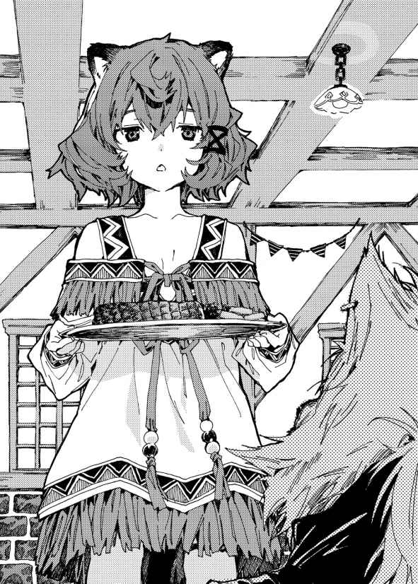
てっきりフレイクが独 り占 めするかと思いきや、彼らは料理を分けあった。しかし元々ひとり分しかなかったため、一口でなくなってしまった。
「も、もうなくなっちまった......」とグズマ。
「これじゃ飢え死にしちまうぜ......」とウィード。
「おい、クロッカス。もう飯はねえのか？」とフレイク。
指先についたソースを舐 めていたクロッカスは、ぎろっとフレイクを睨 みつけた。
「だから昨日の分で最後だって言っただろう！ 俺たちの食糧は完全に尽きたんだよ！ ......だから、俺に大声出させるんじゃない。貴重な体力を失ってしまうだろうが」
「お前ら、そんなに飯が食いたいのか？」
絶望的な顔をしていた一同は、翔真の一言に希望を見 出 したようだ。顔を輝かせ、詰 め寄 ってくる。
「め、恵 んでくれるのか!? 」
顔を近づけてくるグズマに、翔真は首を横に振る。
「恵むんじゃねえ。住みこみの仕事を紹 介 してやるって言ってんだよ。そこで働けば飯もついてくるし、衣食住の心配はいらねえってわけだ」
グズマたちは、わっと歓 声 を上げた。
「い、いいのか!? ほんとにいいのか!? 嘘 じゃねえよな!? 」
「こんな悪 趣 味 な嘘つかねえよ」
グズマたちは反省しているようだし、これからは心を入 れ替 えて働くはずだ。フレイクのことを怖 れている民もいるだろうが、翔真が口 添 えすれば、理解を示してくれるだろう。
もっとも、心から信 頼 されるかどうかは、彼らの今後の生活態度にかかっているが。
「ありがとう！ 本当にありがとう！」
「恩に着るぜ！」
グズマとフレイクは互 いに抱きあって喜んでいる。クロッカスは涙 を流し、インディとウィードに慰められている。
これまでどういう生活をしていたのかは知らないが――互いに困難を乗 り越えたことで、奇妙な連帯感が生まれたらしい。
協力してなにかを成 し遂 げれば仲良くなれる――。そんなアイリスの持論は、彼らにもあてはまったようだ。
「てなわけで就職祝いだ。飯を奢ってやるから、好きなものを頼め。ちょうどカウンター席も空いてることだしな。いつまでもそこに立ったままだとカンナが料理を運べないし、さっさと座 れよな」
その一言に、グズマははっとした。怖 々 とカンナを見て、気まずそうな顔をする。
ふたりの因 縁 を知らないフレイクとインディ、ウィードとクロッカスはカウンター席につき、メニュー表を見てはしゃいでいるが――カンナにひどい仕打ちをしたグズマ一派はその場に立 ち尽くしたままだった。
「......本当に、あのときは......悪かった」
やがてグズマが自信なさげに、か細い声で謝った。それに続いて、グズマの手下たちが謝罪の言葉を口にする。
神 妙 な顔をしていたカンナは、にこりと笑った。
「就職祝いに、デザートをおまけしてあげるね」
その言葉に、グズマ一派は救われたように笑みを浮 かべるのであった。
◆
フルリオ山脈の頂上に広がる庭園にて。
美しい花々に囲まれて静 謐 な一時を堪 能 していたキルシュの耳に、鈴 の音のような声が届いた。
「キルシュ姉様！ キルシュ姉様ぁ！」
ドレス仕立ての衣装を身に纏 った女の子が、ぐしゃぐしゃと花を踏みしめながら駆 けてくる。
その姿を目にしたキルシュは、美 貌 に笑みを広げた。
「おかえり、ミリア」
「ただいま、キルシュ姉様！」
ミリアがキルシュの胸に飛びこんできた。両 腕 でしっかりと受け止め、長い髪 を撫でてやると、ミリアは嬉しそうに喉を鳴らす。
それから思い出したように顔を上げ、にっこりと笑いかけてきた。
「竜胆翔真は思いついてないよ！ キルシュ姉様を倒せる作戦を思いついてないよ！」
ミリアが嬉しそうに報告してくる。
キルシュの依 頼 を受け、ミリアはクヌル平野を訪れていた――翔真がどういった作戦を考えているか調査していたのである。
これまで倒してきたザコたちと違 い、翔真は強敵なのだから。キルシュは強化に強化を重ねた魔札を大量に持っているが、翔真はオリジナル魔札を持っているのだ。
無論、ルールでオリジナル魔札の持ちこみを禁じることはできるが――キルシュが最も怖れているのは魔札ではなく、竜胆翔真の頭脳である。
オリジナル魔札の持ちこみを禁じることができるといって、油断していい相手ではない。竜胆翔真は、あらゆる手段を尽 くさなければならない相手なのである。
それゆえキルシュはミリアに調査を依頼したのであった。
キルシュが強化に強化を重ねた〈透明化 〉の魔札を使えば、姿ばかりか足音や息 遣 いまでもを消すことができるのだ。
そうしてミリアが働く一方で、キルシュは翔真を完 膚 なきまでに叩 き潰す作戦を考えているのであった。
「ミリアがいてくれて助かるよ。おかげで竜胆翔真を倒すことができるからね」
「ミリアはなんでもするよ！ キルシュ姉様のためならなんでもするよ！ だってミリア、キルシュ姉様のことが大好きだもん！」
「僕 もミリアのことが大好きだよ」
ミリアは顔中に笑みを広げた。キルシュと相思相愛であることが、とても嬉しいらしく、うきうきとした口調で言う。
「ご飯を食べたら調査に行くね！ 竜胆翔真を調べに行くね！」
「今日はもういいよ。ミリアも疲れただろうからね。今日はゆっくり休んで......そうだね、神託遊戯まで一週間を切ったら、〈透明化〉を使わずに調査してくれるかい？」
ミリアはきょとんとした。
「竜胆翔真に見つかっちゃうよっ？ 結界の魔札を使われちゃうよっ？ そしたらミリア、竜胆翔真を見つけるのに時間がかかっちゃうよっ？」
たとえ結界内にいようと、ミリアの〈読心〉の範 囲 内 にいれば心の声を聞き取ることができる。
しかしそれだと見つけるのに時間がかかり、作戦を事前把 握 する前に神託遊戯が始まるかもしれない。
ミリアは、そう不安に感じているのだ。
「問題ないさ。ミリアを目にしたら、竜胆翔真は精神的に追いこまれるからね。そんな頭ではまともに作戦を考えることはできないさ」
ミリアははっとした。
「竜胆翔真の集中力をかき乱すんだね！」
「そういうことさ。神託遊戯を愛する彼 のことだから、作戦を考える時間を楽しんでいるのかもしれないけど――残り一週間を切れば、本格的に作戦を練り始めるだろうからね。そこでミリアが姿を見せて、精神的に負担をかけてやれば――」
「竜胆翔真はキルシュ姉様に勝てる作戦を思いつかないってことだね！ たとえ結界内に逃げても、ミリアを気にして集中できないってことだね！」
キルシュがにこりとほほ笑むと、ミリアはこくりとうなずいた。
「わかったよキルシュ姉様！ 一週間を切ったら竜胆翔真のまわりをうろつくよ！ これでもかってくらいミリアの姿を見せつけるよ！」
ミリアは明るい声を響かせるのであった。
キルシュとの神託遊戯 まで残り一週間となった日の昼下がり。
この日、いつものようにクヌル平野を散歩して民たちに元気な姿を見せてまわったあと、翔 真 は食事処〈うさぎ亭〉で昼食を済ませると、仕事終わりのルメリアとともに居城へと舞い戻 ってきた。
そこまではいつも通りだったが――
「翔真様っ！」
寝室に戻ってからはいつもと違った。
絨 毯 敷 きの床 に、乙 姫 のような娘が座りこんでいたのである。
歳 の頃は一六、七といったところか。優 しげな顔立ちの、育ちの良さそうな娘である。艶 々 とした青髪は床に届くほど長く、袖 口 の広い着物を纏っている。
そんな見目麗 しい彼女の下半身は、尾 ひれであった。まるで青い宝石が鏤 められているかのように、美しく輝いて見える。
彼女の名はミモザ。海妖門 の全権代理者 にして、翔真の嫁だ。
「わたくし、あなた様のお帰りを心待ちにしておりましたの。こうしてあなた様にお会いすることができ、とっても嬉しいですわ」
にっこり笑ってそう言うと、お帰りなさいませ、と三つ指をつき、おでこを床につけた。毎日ルメリアが掃 除 をしてくれているため綺 麗 だが、美女が床におでこをつける光景は、見ていて楽しいものではない。
「頭を上げろ。俺に顔を見せてくれ」
ミモザは顔を上げ、柔 和 な笑みを向けてくる。
「いつからここにいるんだ？」
「一時間ほど前からですわ。わたくし、翔真さんがくださった、ええと......」
「〈想い出の地へと続く扉 〉か？」
「それですわっ。その〈想い出の地へと続く扉〉を使わせていただきましたの」
「で、俺の帰りをずっと待ってたのか？」
「はい。わたくし、翔真様にお会いするために来たんですもの。いつ会えるのか楽しみで、こうして翔真様とお会いできて、夢が叶 った気分ですわ」
「待たせて悪かったな。〈碧落からの語りかけ 〉を使ってくれたら迎 えに行ったんだが。......ああ、遠くにいる相手と会話する魔札 のことだ」
つけ加えると、きょとんとしていたミモザはぽんと手を打った。
生 粋 の世間知らずであるミモザは、翔真のように魔札の効果を丸暗記しているわけではなく、日常生活で使うような魔札の名前すら覚えているか怪 しいほどなのだ。
「わたくし、それなら持ってますわっ」
「持ってるなら、どうして使わなかったんだ？」
「いきなりわたくしの声が聞こえたら、驚 かせてしまうかもしれませんもの」
翔真を気 遣 っていたらしい。どこまでもお人 好 しな娘である。
「慣れてるし、問題ねえよ」
「翔真様は魔札に慣れっこですのね。でしたら、これからはそうさせていただきますわ」
おっとりとした物 腰 でそう言うと、ミモザは思い出したように続ける。
「ご挨 拶 が遅 れてしまい、申し訳ありません。アイリス様とルメリア様も、お元気そうでなによりですわ」
翔真だけに挨拶をしたため、申し訳なく思ったようだ。もちろん、そんな些 細 なことで気分を害するふたりではない。
「うむ。そなたも元気そうでなによりじゃ」
「おひさしぶりです、ミモザ様」
ぺこりとお辞 儀 するルメリアに、ミモザは再び頭を下げた。
奴 隷 の首輪をはめた異種族の娘に深々と頭を下げる全権代理者など前 代 未 聞 だろうが、世間知らずで心優しいミモザは、奴隷に対しても異種族に対しても偏 見 など持っていないのだ。
「ひとまずベッドに座れよ。床だと足が痛むだろ？」
ミモザは〈浮遊 〉を使わず、床に尾ひれをつけたままだった。絨毯敷きなのでそれほど硬 くはないが、ミモザは一時間も翔真の帰りを待っていたのだ。
彼女のことだから同じ姿勢で待ち続けただろうし、足を痛めていてもおかしくない。
「はいっ。そうさせていただきますわ。実を言うと、足がじんじん痺 れてましたの」
案の定だった。
「なぜ〈浮遊〉を使わなかったのじゃ？ 浮かべば足を痛めることはなかったろうに」
「ふわふわ浮いたまま出 迎 えると、翔真様を驚かせてしまうと思いまして」
「翔真のそばにはいつもわしがおるじゃろ。ふわふわ浮かぶのは見慣れておるじゃろうし、いまさらびっくりしたりしないのじゃ」
あきれ顔のアイリスに、ミモザははっと手で口を押 さえた。
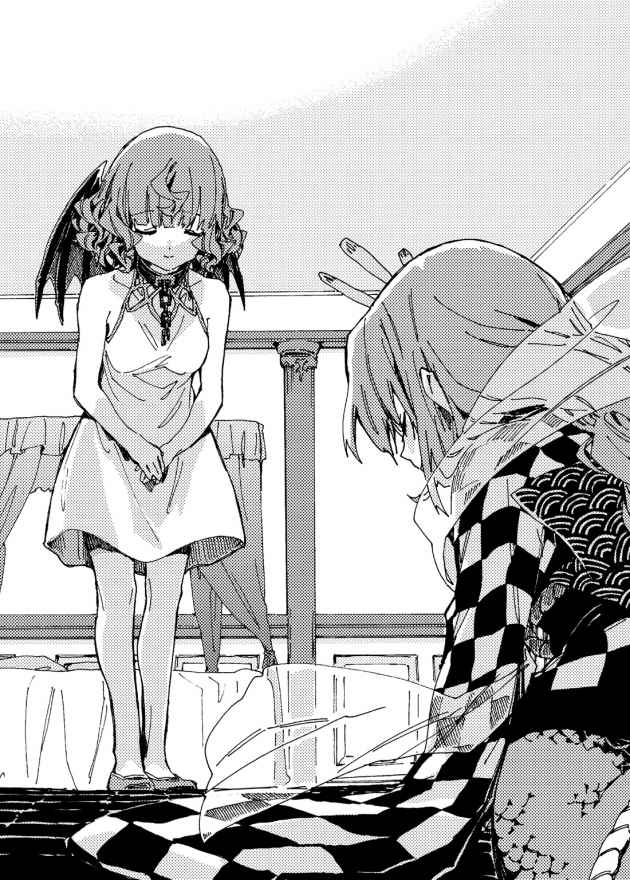
衝 撃 の事実に気づいてしまった、といった様子だ。
「たしかに、ふわふわ浮かぶのはアイリス様で見慣れてますわね。でしたら、〈浮遊〉を使わせていただきますわ」
「これからはそうしてくれ。ま、今回はその必要はねえけどな」
翔真はミモザを抱きかかえると、ベッドに座らせてやった。ミモザは驚いたように頬 を赤らめ、うっとりと翔真を見つめる。
「あなた様は、本当にお優しいのですね」
「可愛 い嫁に優しくするのは当然だろ？」
「はいっ。わたくし、あなた様に優しくされて、とってもとっても嬉しいですわっ」
心底嬉しそうに顔を輝かせるミモザに、翔真は思わず微 笑 する。
それを見て、アイリスが悔 しげに唸 った。
そして、そうじゃ、と閃 いたように言う。
「ミモザよ。そなたに会えてわしはとってもとっても嬉しいのじゃ。じゃがな、これから翔真は大事な用があるのじゃ。じゃから今日は帰ったほうがよいのではないかのぅ？」
明らかにミモザを追い返そうとしているだけだ。
ほかの嫁ならすぐに『翔真を独り占めする気か』とアイリスの真意を見 抜 いただろうが、ミモザはすんなりと信じた様子だ。
「まあ、そうでしたの。お忙 しいところお邪 魔 してしまい、たいへん申し訳ありませんわ......」
「べ、べつに申し訳なく思うことはないのじゃっ」
素 直 に謝られ、アイリスはあたふたする。
無 垢 なミモザを騙 したことに罪の意識を抱いたようで、助けを求めるように翔真を見てくる。
翔真は肩をすくめ、ミモザに告げた。
「俺も、アイリスも、もちろんルメリアも、ミモザのことを邪魔だと思ったことはねえよ。それに用事っつっても、リリーに会いに行くだけだからな」
「まあっ、リリー様にお会いになりますのっ？」
翔真がその名を口にした途端、ミモザは満面の笑みになった。
ミモザにとって、リリーは大切な友人なのだ。三週間ほど前のパーティ以来、ふたりは顔をあわせていないため、名前を聞いただけで再会した気分になったのだろう。
「リリーもミモザに会いたがってるし、せっかく来てくれたんだ。ミモザもついてくるか？」
ミモザはうなずきかけ......上 目 遣 いに見つめてくる。
「わたくしがご一緒してもよろしいんですの？」
「どうしてだ？」
「リリー様は、翔真様とふたりきりになりたいと思っていらっしゃるかもしれませんわ。だって、わたくしがそうであるように、リリー様は翔真様のことが大好きですもの」
翔真はアイリスのように独 占 欲 の強い娘も好きだが――ミモザのように思いやりのある娘も好きだ。
好きな娘を喜ばせてあげたいと思うのは男として当然の心理だろう。翔真はにこやかに告げてやる。
「むしろミモザが来てくれると嬉しいぜ」
「なぜですの？」
「ほら、俺たちがはじめて会った日に話しただろ？ 俺とアイリスは、差別のない平和な世界を創 ろうとしてるってさ」
「はいっ。それって、とっても素 敵 な世界だと思いますわっ！」
ミモザはありとあらゆる情報を遮 断 されて育てられてきた生粋の箱 入 り娘だ。海の底で暮らしていた彼女がはじめて陸に上がり、異種族の存在を知ったのは、ほんの一ヶ 月 前のことだ。
それまで世界は平和に満ちていると信じて疑わなかったミモザは精 霊 管 轄 区 を訪 れた際、異種族というだけでいがみあっている人々がいることを知り、心を痛めたのである。
「平和な世界を創るには、全権代理者同士が仲良くなるのはもちろん、異種族の民 たちに好意を持ってもらう必要があるんだ」
全権代理者は自治区 の代表――顔なのだ。
全権代理者である翔真が異種族の民に好意を持ってもらえれば、クヌル平野の民たちも好意を持ってもらえるというわけだ――あそこの全権代理者は良 い奴 だから、そこの民も気の良い奴らに違いない、といった具合に。
「てなわけで、今日はリリーの案内で飛翼門 の自治区を散歩することにしたってわけだ。ミモザもそこに加わってほしいんだよ」
滅 多 なことがない限り一生を海底で過ごす海妖門は、聖神門 と同じくらい謎 に包まれた種族だ。
海妖門を目にしたことがある者は極 々 わずか。飛翼門の民がはじめて目にする海妖門はミモザということになる。
心優しいミモザとじかに接することで、飛翼門の人々は海妖門に好印象を抱 くはずだ。
「どうする？ 俺と一 緒 に来るか？」
「ぜひつれていってくださいっ」
「決まりだな。ルメリアはどうする？ ついてくるか？」
「私がご一緒すると、ご主人様はリリー様に誤解されないでしょうか？」
「誤解は解けたし、問題ねえよ」
リリーは奴隷制度に反対している――奴隷商人や資産家たちを神託遊戯で倒し、奴隷を解放してまわっているのだ。
クロッカスを倒して多くの奴隷を解放したため、リリーは最初から翔真に好意を抱いていたのである。
しかし三週間ほど前のパーティにて、リリーはルメリアを見つけた。翔真がルメリアを奴隷にしていることを知り、ショックを受けたように黙 りこんでしまったのだ。
が、ルメリアの口から『自分の意思で翔真の奴隷として過ごしている』との話を聞き、誤解は解けた。
翔真に言わされているのではなく、心からそう思っていることは、目を見ればわかるのだろう――なぜならリリーは多くの奴隷と接してきたのだから。
「もちろん仕事で疲 れてるってんなら休んでくれていいけどな」
ルメリアはふるふると首を振る。
「私は、ご主人様のおそばにいたいです」
「俺もルメリアにそばにいてほしいと思ってるぜ。んじゃ、リリーに連 絡 を――」
と、翔真が〈碧落からの語りかけ〉を使おうとしたところで、
『――翔真っ、いまどこにいる？』
頭のなかにリリーの声が響 いた。翔真がなかなか来ないため、あちらから連絡してきたようだ。
「いまは寝 室 にいるぜ。アイリスと、ルメリアと、あとミモザも一緒にな」
翔真が突 然 独り言を言い始めたと勘 違 いしたのか、ミモザは不思議そうに小首を傾 げ、耳に手をかざした。アイリスが事情を告げると、納 得 したようにぽんと手を打ち、会話の邪魔にならないよう、両手で口を押さえた。
直接頭に声が響いているため、静かにする必要はないのだが......
『おおっ、ミモザも一緒にいるのか！ だったら連れてこいよ！』
「そのつもりだぜ。もう行っていいのか？」
『いつでも大 歓 迎 だぜ！ まずはあたしの部屋に来いよなっ。〈千里眼 〉を使えば場所はわかるだろ？』
「おう。五分もあれば見つかるぜ」
『んじゃ、おめーらが来るのを楽しみに待ってるからなっ！ じゃーな！』
そうしてリリーとの会話を終えると、翔真は〈千里眼〉と〈透視 〉を併 用 した。そしてわくわくとした顔のリリーを見つけると、そちらへ移動したのであった。
◆
リリーの寝室はすっきりしていた。
部屋にあるものといえばベッドのほかに衣装ダンスくらいだ。衣装ダンスの隙 間 からは衣類がはみ出しているし、片づけ上手というわけではなさそうだ。
リリーには物欲がないのだろう。少し物足りない気もするが、飾 り気 のないさばさばとした性格の彼 女 に相応 しい部屋と言える。
「よく来たな！ 会いたかったぜっ！」
と、赤髪の娘 が親しげに笑いかけてきた。
すらりとした体形の、十代後半ほどの娘である。
ほどよく焼けた肌 に特 攻 服 のような衣装を纏い、大きくはだけた胸 元 にさらしのような布を巻き、ゴーグル付きのヘルメットを被 っている。
彼女が祖父から譲り受 けたそれは、元々は翔真の祖父――竜 胆 敦 盛 のものだった。
五〇年以上前にアストラルで暮らしていた敦盛は、彼女の祖父に助けられたことがある。その礼にヘルメットを譲ったのだ。
「よォ、来てやったぜ。あいかわらず元気そうでなによりだ」
翔真が微笑を向けると、彼女――飛翼門の全権代理者にして翔真の嫁 であるリリーは、得意気に胸を張った。さらしでは隠しきれないほどの大きな乳 房 が上下に弾む。
「おうよ！ あたしは元気だけが取 り柄 だからなっ！」
「そんなことねえさ。リリーの可愛さは立派な取り柄だ。もっと胸を張っていいんだぜ」
褒 めながら胸を見ると、リリーはじんわりと頬を赤らめた。
曲がったことが大 嫌 いなリリーは、ストレートな褒め言 葉 に弱いらしい。
「翔真様のおっしゃるとおりですわ。リリー様は、とってもとってもお可愛いですわっ」
ミモザが追い打ちをかけるように褒めると、リリーはますます赤くなる。
「か、可愛いとか言うんじゃねえよっ」
「そうじゃ！ 可愛いと言うのはやめるのじゃ！」
アイリスがすかさず同意する。恥 じらうリリーを庇 っているわけではなく、ひとりだけ褒められるリリーに嫉 妬 しているだけだろう。
「心配すんな。アイリスも可愛いからな」
翔真が褒めてやると、アイリスは急にしおらしくなる。
「そ、そうじゃろうか？ そ、そなたにそう言ってもらえると、自信が出るのじゃ」
「おめー、鏡見たことねえのかよ？ 女のあたしから見ても、おめーは可愛い顔してるぜ？」
リリーがあきれ顔で言うと、ミモザがこくりとうなずく。
「そうですわね。アイリス様は、とってもとってもお可愛いですわっ」
立て続けに褒められ、アイリスは赤い瞳 に涙を滲 ませる。
「よ、よかったのじゃ......。最近、翔真のまわりには可愛いおなごが集まりすぎて、わしなんて......と思うこともあったが、それを聞いて安心したのじゃ」
アイリスが翔真と出会ったとき、翔真は独り身だったのだ。
しかし、ミストが加わり、スノウが加わり、シャーロットが加わり、ジュナが加わり、ミモザが加わり、リリーが加わり、カトレアが加わり、さらに嫁ではないが、ルメリアやカンナやシャロンがいる。
愛する夫のもとに次々と美女が舞 いこんできたのだ、アイリスが嫉妬心と不安感を抱くのも無理からぬ話なのである。
さておき、アイリスは落ち着いた。
アイリスをなだめた翔真は、さっそく本題に入った。
「散歩コースは決まってるのか？」
今日一日で飛翼門の自治区を制 覇 することはできない。〈瞬間移動 〉を使えばすべての町を訪問できるが、今回の目的は『民を安心させること』だ。
翔真の顔を一 瞬 見たくらいでは安心などできないだろう――かといって、すべての町を歩かせると翔真が疲れてしまい、キルシュとの神託遊戯に支障を来 す怖れがある。
リリーは翔真の身体 を最優先に考えたようで、先日〈碧落からの語りかけ〉で『うちの首都を散歩してくれ』と告げてきたのであった。
「もちろん決まってるぜ。この屋 敷 の正面に大通りがあってな。そこをまっすぐに歩いてもらうぜ」
「それって、どれくらい歩くのじゃ？ 翔真は毎日歩いておるから、あまり歩かせないでやってほしいのじゃが」
アイリスが翔真の身体を心配している。
「心配しなくても、そんなに長々と歩かせるつもりはねえよ。なにせこの世界の命運は、翔真にかかってるんだからな。挨拶回りは日暮れと同時に切り上げるぜ」
「それくらいなら翔真も疲れぬじゃろ」
翔真の体調を気遣うアイリスは、まるでマネージャーのようだった。
「大通りにはすでに民が集まってるからな。だからさ、そいつらにできるだけ元気な姿を見せてやってくれよ。あいつら、日増しに不安そうにしてるからな」
リリーは憂 鬱 そうにため息をついた。
キルシュとの神託遊戯まで残り一週間。民は日に日に落ちこんでいっているらしいし、神託遊戯の当日は生きた心地 がしないだろう。
リリーは全権代理者として、どうにかして民を安心させてやりたいのだ。
翔真が首都の民を励 ますことができれば、彼らはほかの町に住まう仲間に『安心しろ。翔真がなんとかしてくれる』と連絡を取るだろうし、沈 んだ気分も少しは晴れるだろう。
「頼 めるか？」
「もちろんだ。飛翼門の連中は、俺が安心させてやるぜ。勝つのはこの俺だってな」
リリーは安 堵 したように笑い、もじもじする。
「絶対に勝ってくれよな。じゃねーと......もしおめーが負けちまったら、おめーのガキを産めなくなっちまうだろ」
アイリスがぎょっとした。
「そ、そなたも子育てする気満々なのか!? 」
リリーはきょとんとする。
「そりゃそうだろ。あたしは翔真の嫁なんだぜ？ 大好きな男のガキをほしいと思うのは当然じゃねえか」
「そりゃそうじゃろうけど......子どもを産まず、生 涯 夫 婦 ふたりきりでいちゃつくというのも悪くないのではないかのぅ」
どうじゃろうか、とアイリスがたずねる。
「ふたりきりっつっても、こいつには大勢の嫁がいるんだぜ？ ほとんどふたりきりにはなれねえだろ」
「そ、そうじゃろうけど......」
おどおどするアイリスに、リリーがじっとりと疑いの眼 差 しを向ける。
「......おめー、まさかいまだに翔真を独り占めしようとか思ってんのか？」
アイリスは、ぎくりとする。
「そ、そんなわけないじゃろっ。翔真には多くの嫁がおるのじゃぞ？ もう独り占めとか無理じゃろ......はは、なにを言いだすのやら」
アイリスは目を泳がせながら取 り繕 っているが、リリーはなおも疑わしげだ。
「そうかぁ？ 自分ひとりが母親になれば、翔真を独り占めできるとか思ってんじゃねえだろうな？」
「お、思っておらぬ......のじゃ......」
アイリスは目をそらしてそう言うが......すぐに観念したようにうなだれた。
「......実を言うと、思っておるのじゃ」
アイリスは嘘をつくのが苦手なのだ。
「だと思ったぜ」
「じゃ、じゃが、そう思う一方で、そなたたちと子育てできたら楽しいじゃろうなぁとも思っておるのじゃ！ ほんとじゃからなっ？ ジュナと子どもの名前をどうするかで盛り上がったとき、わし、すっごく楽しかったんじゃからっ！」
アイリスは必死の形相で言う。実際、アイリスとジュナは楽しそうに話しこんでいたし、いまの発言に嘘は含 まれていないだろう。
そう感じ取ったのか、ミモザとリリーは明るく笑う。
「それってとっても楽しそうですわね。わたくしもぜひ参加したかったですわ」
「だな。今度全員揃 ったら将来のこととか話そうぜっ！ ......っと、すっかり話しこんじまったな」
リリーははっと思い出 したようにそう言うと、ぐるりと翔真たちの顔を見まわした。
「あらためて、今日は来てくれてありがとなっ！ あたしの自治区を紹介......つっても、大通りしか歩かねえんだが、とにかく案内するからついてきてくれっ！」
そうしてリリーについていき、翔真たちは寝室をあとにする。
長い廊 下 を歩き、階段を下り、重 厚 な扉 から外に出ると、見事な庭園が広がっていた。美しく咲 き誇 る花々を眺 めつつ石 畳 の道を歩いていると、正門が見えた。
門を抜 けると、大通りを挟 むように背の高い建物が並んでいた。二階、三階の境目には立派な造りのバルコニーが設けられ、野菜や果物、雑貨などが陳 列 されているようだった。
はしごや階段は設けられていないため、ほかの種族だと二階以上の店を訪れるのは困難だが、飛翼門にとっては使い勝手がいいのだろう。
魔札を使わずに空を飛べる飛翼門ならではの商店街だ。
そんな商店街――大通りには、多くの人々が集まっていた。
屋敷から翔真が出てきたのを見て、ざわめきが広がっていく。
「あっ、出てきたぞ！」「あのひとだ！」「あれが竜胆翔真さんだ！」「どこどこっ!? 」「リリー様のお隣 にいらっしゃるお方だ！」「見えたわ！」「救世主様！ 救世主様！」
わあわあと歓声が混ざりあい、ひとりひとりの言葉を聞き取ることはできなかったが、聞こえてくるのは好意的な声だけだった。それだけわかっていれば、大勢の声を聞き取るＳＳＳランク魔札――〈訴えを聞き逃さぬもの 〉を使うまでもないだろう。
「そなたは好かれておるようじゃなっ」
翔真が歓 迎 されていると知り、アイリスは誇らしげだ。ミモザはお祭り気分なのか楽しそうにしており、ルメリアは大観衆と大 歓 声 に少し怯 えているようだった。
ルメリアの腰 に手を添 えて安心させていると、リリーが声を弾 ませる。
「翔真は暴風雨を消し飛ばしてくれたからなっ。クエストが終わったあとにその話を広めたら、みんな翔真のことが大好きになったんだ。そんな翔真ならキルシュを倒 してくれるはずって、民は期待してるんだっ」
どうりで死霊門 を訪れたときとは民の態度が違うわけだ。
翔真は飛翼門の民たちと親 睦 を深めにきたが――飛翼門の民たちはすでに翔真に好意を抱いていたのである。
「さあ――手を振 るなり、笑いかけるなりして、元気な姿を見せてやってくれ！ みんなおめーを一目見るために集まったんだからなっ」
「ただし、おなごを口説くのは禁止じゃぞ」
観衆のなかに美女を見つけたのか、アイリスが注意してきた。
翔真は苦 笑 しつつもうなずくと、大通りへと踏 み出した。
そしてひとりひとりと握 手 を交 わし、声をかけ、飛翼門の民たちを安心させてやるのであった。
◆
大通りを歩き終える頃 にはすっかり日が暮れ、ミモザとルメリアはお腹 を空 かせたようだった。
力強く振る舞い民を元気づけた翔真は、リリーのお薦 めする店で夕飯をご馳 走 になったあと、店の外に待機していた民たちと握手を交わした。それが終わると、翔真はリリーの屋敷に引き返した。
「翔真の部屋はここだ」
二階につれてこられた翔真は、リリーにそう告げられる。そこはリリーの寝室の隣 部 屋 だった。
「リリーと同じ部屋じゃねえんだな」
翔真が残念そうに肩 をすくめると、リリーは苦笑した。
「あたしだって翔真と寝 たいが、そしたらアイリスがついてくるだろ。だから全員別々の部屋にするんだよ」
「わしは翔真と同じ部屋がよいのじゃが......」
「だめだ。おめーは少し、翔真と離 れるってことを覚えたほうがいい。いまのうちに訓練しとかねえと、子作りの最中に乱入されるかもしれねえからな」
きっぱりと告げ、リリーは翔真に向きなおる。
「部屋に入ってすぐのところに風 呂 場 があるから、さっさと入って今日は寝ろよな」
リリーが労 うように言った。
翔真がへとへとになっていないか心配しているのだ。
実際、歩く距 離 こそ短かったが、大勢と握手を交わして翔真の手はじんじんしているし、声 援 に応 え続けたことで喉 は嗄 れかけている。
それほど疲れているわけではないが、今日はゆっくり過ごすとしよう。
「んじゃ、お言葉に甘 えさせてもらうとするぜ」
翔真がうなずいたのを見て、リリーは安心したようにほほ笑 み、アイリスたちをつれて階段を上がっていった。残りの面々は三階の部屋を割り当てられるようだ。
それを見送り、翔真は部屋へ身を移す。
室内は薄 暗 かった。小窓から差しこむ月明かりに照らされ、かろうじてベッドが見えるくらいだ。
「――〈闇喰い妖精 〉」
翔真が魔札を詠 唱 した途 端 、床に小さな魔 法 陣 が広がった。薄暗かった寝室が赤く染め上げられていく。
魔法陣から現れたのは手のひらサイズの妖 精 だった。がりがりに痩 せ細 っている妖精は嬉 々 として部屋を見まわし、大きく息を吸いこんだ。
その瞬間、まるでシーツを引っぺがすように、ずるりと闇 が引 き剥 がされた。部屋の隅 から引き剥がされた闇は、妖精の口内に吸いこまれていき――あっという間に部屋全体が明るくなった。
闇を喰 らった妖精は、いまやぶくぶくに太っている。満足したようにげっぷをすると、すぅーっと頭上へ飛んでいき、天 井 付近に漂 い始めた。翔真が命じることで、妖精は闇を吐 き出すのである。
そうして明るくなった部屋を見まわした翔真は、ドアの横に魔札が張りつけられていることに気がついた。
「......なんだ、〈不自然な月明かり 〉があったのか」
それは街灯に仕込まれている魔札である。
わざわざ〈闇喰い妖精〉を使うまでもなかったが、Ｅランクの〈不自然な月明かり〉と違 い、Ａランク魔札の〈闇喰い妖精〉は部屋を隅 々 まで明るくすることができる。妖精も満足そうにしているし、問題はない。
翔真はさっそく浴室へ向かう。
それなりの大きさがある浴 槽 は空っぽだった。
壁 には〈とめどなく溢れる温水 〉が仕込まれたシャワーヘッドが設けられているが......お湯を溜 めるのに時間がかかりそうである。
とはいえ翔真は大量の〈とめどなく溢れる温水〉を持っているのだ。数枚使えばあっという間にお湯を張ることができる。
「そばにいさせてほしいのじゃぁ......」
お湯を溜めていたところ、するりと天井をすり抜け、アイリスが降 ってきた。
どうやらアイリスは真上の部屋を割り当てられたようだ。アイリスが来ることは察しがついていたため、翔真は驚くことなくうなずいた。
「美女は目の保養になるからな。アイリスがそばにいてくれたら、疲れが取れるのも早いだろうぜ」
アイリスは顔を輝 かせた。
「うむっ。わし、そなたの目の前に漂い続けるのじゃ！ ......っと、お湯が溜まったようじゃぞ」
翔真は〈とめどなく溢れる温水〉の効果を切り、自分の服を魔札化する。いちいち脱 ぐより、魔札にしたほうがてっとり早いのだ。
そうしてすべての準備が整い、翔真は入浴する。
ほどよい温 もりに全身が包まれ、疲れが湯に溶 けるように取れていく。
「湯加減はどうじゃ？」
浴槽の脇 にふわふわ浮 かび、アイリスがたずねてくる。
「いい感じだぜ。それよりアイリスも湯船に浸 かれよ。幽 体 だろうと入浴気分は味わえるだろ」
「そうするのじゃっ」
アイリスは湯船に肩まで浸かり、翔真のまねをするように、ふわぁと気持ちよさそうにため息をつく。
「身体が元通りになったら、そなたとゆっくり温泉に行きたいのぅ」
「そのときは背中を流してやるぜ」
「うむっ。そなたに触 ってほしいのじゃっ。もちろん、わしも触るのじゃ。どんな感 触 か楽しみじゃのぅ」
「俺 もだ。アイリスの肌は柔 らかそうだし、抱 き心地は抜 群 だろうしな」
アイリスは、まるで湯あたりしたように、じんわりと頬を赤らめる。
「......ときに翔真よ、先ほど子どもの話になったじゃろ？」
「ああ。それがどうかしたか？」
「そなたは、その......子どもをほしいと思っておるのか？」
「どうしてそんなことを聞くんだ？」
「わしらが勝手に盛り上がっておるだけで、そなたの気持ちを確かめたわけではないからのぅ」
心配そうな顔をするアイリスに、翔真は微笑を向けた。
「可愛い嫁の子どもなんだ。何人だってほしいし、大切に育てるぜ。嫁と一緒にな」
ぱあっと顔を輝かせるアイリス。
「そ、そうかっ。そなたもほしいと思っておったのじゃなっ」
うきうきしている嫁をほほ笑ましく眺めていると、脱 衣 所 のほうから物音がした。扉が開かれたらしく、続いて衣 擦 れの音がする。
何者だろうかとそちらを見ていると、ふいに浴室の扉が開け放たれた。
「疲れてるだろっ？ 背中を流してやるぜ！」
リリーだった。
素 肌 にタオルを巻き、恥じらいを吹 き飛 ばすように大声を出して登場したリリーは......アイリスに気づいた途端、さっと脱衣所に引っこんだ。
浴室の扉を半開きにして、そこから顔だけを覗 かせると、恨 みがましそうに言う。
「な、なんでおめーがいるんだよっ。ちゃんと部屋に案内してやっただろ！」
「わしは正妻じゃからな。夫と同じ寝室で寝るのは当然じゃろうが」
「そ、そんなに翔真を独 り占 めしたいのかよ？」
「もちろんそれもあるが――わしは、翔真と離れられぬ体質なのじゃよ」
アイリスは真 剣 な口調で告げた。
アイリスは翔真に取り憑 いているため、二五メートルほどしか離れることができないのである。
「体質って、どういう意味だ？」
リリーは、アイリスが幽体であることを知っている。だが、翔真に取り憑いていることまでは知らされていないのだ。
取り憑いていることを教えると、そうなった経 緯 を話すことになり、アイリスが『閉ざされた空間』に閉じこめられていた理由を話さなければならなくなるからだ。
「それは言えぬ。じゃが、わしはそなたに嫌 がらせをするために、翔真のそばにいるわけではないのじゃ。それだけは、信じてほしいのじゃ」
いつになくまじめなトーンで話したからだろう。リリーはアイリスの話を信じたようで、ゆっくりと扉 を開き、浴室に入ってきた。
「冷えるだろ。ひとまず風 呂 に入れよ。温かくて気持ちいいぜ」
翔真が手招きすると、リリーはこくりとうなずいた。
「......タオルは脱いだほうがいいのか？」
「そうしてくれると嬉 しいぜ。ま、恥ずかしいってんならそのままでもいいけどな」
「......脱ぐ。アイリスがいるのは予想外だったが、元々脱ぐ予定だったしな」
判断を委 ねると、リリーは意を決したように言った。
もじもじしながらタオルを脱ぎ、生まれたままの姿になる。
ほどよく日に焼けた肌は瑞 々 しく、豊満な乳房は荒 っぽい呼吸にあわせて揺 れている。男 勝 りな性格ながら、体つきは成熟した女性のそれだった。
リリーは恥じらいを押し殺 すように唇 を噛 みしめつつも、しかし、ここまで来て逃 げるのは彼女の性 分 ではないのだろう――湯船に身を移し、翔真にぴたりと寄 り添った。
「いいのぅ」
翔真と肩を触 れあわせるリリーを見て、アイリスは羨 ましそうにつぶやいた。
「おめーはいつも翔真と入浴してんだろ？ 羨ましいのはこっちだぜ」
「じゃが、わしは幽体じゃ。過ごす時間はわしのほうが長いが......そなたのように翔真と触れあうことはできぬのじゃ」
「そいつは同情するが......でも、翔真がなんとかしてくれるんだろ？」
アイリスを励まそうと思っているのか、リリーは明るい声で言う。
「ほら、クエストで言ってただろ。魔札全種を集めて、アイリスと触れあえるようにしてくれって最高神に頼むってさ」
まさか目の前にいるアイリスがその最高神だとは知る由 もなく、リリーは語った。
アイリスはリリーを騙していることに罪悪感を抱いたようだが、この嘘 は最後まで貫 き通 すと決めたのか、真実は口にしなかった。
「うむ。キルシュを倒せば、翔真は魔札全種を手に入れるからのぅ。わしの幽体生活も、残すところ一週間というわけじゃ」
話しているうちに現実味が湧 いてきたのか、アイリスはしだいにうきうきとした口調になっていく。
「実体を手に入れたら、たくさん翔真と触れあうのじゃっ！ ハグをして、キスをして、子どもを作るのじゃっ！」
「それはいいけど、あたしが子作りするときは、ふたりきりにしてくれるよな？」
リリーはシャーロットと同じ不安を抱いていたらしい。
アイリスはすかさずうなずいた。
「わしに他人の子作りを眺める趣 味 はないのじゃ。それに理由は伏 せるが、わしが実体を手に入れたら、先ほど話した『体質』は解消されるのじゃからな」
リリーは怪 訝 そうに小首を傾げる。
「よくわかんねえけど......とにかく、キルシュを倒せば万 事 解決ってわけだな？」
「そういうことじゃ」
アイリスが肯 定 すると、リリーは翔真を見つめた。
「絶対にキルシュを倒せよなっ。じゃねーと、おめーとふたりきりになれねえだろ」
「おう。キルシュのことは俺に任せとけ」
リリーのエールに、翔真は力強くうなずくのであった。
◆
薄暗い寝室のなか、翔真は物音に目覚めた。静 寂 に支配された寝室に、窓の揺れる音が響いている。
きっと風で揺れたのだろう。そう思い、再び眠 りにつこうとしたが――
ガタガタッ――！
どうも様子が変である。風で揺れているというより、意図的に揺らしているような――何者かが窓をこじ開けようとしているような物音だった。
事実、想像した通りのことが起きているのだろう。一瞬冷たい夜風が部屋を吹き抜け、ガタッと窓の閉まるような音が響いたのだ。
どうやら何者かが侵 入 に成功したようだ。
それを察しながら、翔真は落 ち着 き払 っていた。
アストラルでは暴力行 為 は禁じられているし、盗人 だとしてもこの部屋にはなにもない。あるのは〈不自然な月明かり〉くらいのものだが、それは枕 元 に置いてある。
それを見つけるには部屋を明るくしなければならず、この部屋にいるふたりの男女――翔真とアイリスを起こしてしまうことになる。
仮に盗人なら明かりをつけるようなまねはしないだろうし――そもそも翔真は侵 入 者 が盗人ではないことに気づいていた。
それゆえ身じろぎひとつせず、足音が近づいてくるのを黙って待っているのだった。
と、しだいに大きくなっていた足音が、聞こえなくなる。こちらを見下ろしているのか、翔真はひしひしと視線を感じる。
侵入者はすぐそばに立っているらしく、シーツに手をかけたところで、翔真は唱えた。
「――〈不自然な月明かり〉」
「......っ」
上体を起こして魔札を詠唱した瞬間、押 し殺すような悲鳴が響く。翔真の頭上にソフトボールサイズの球体が出現し、ほの明かりが部屋を照らした。
そこに立っていたのは、小 柄 な娘だった。紫 がかった銀 髪 は腰に届くほど長く、前 髪 に侵 食 されつつある目を眩 しそうに細めている。
翔真の思った通り、侵入者の正体は――
「よォ、ミリアじゃねえか。こんなところでなにしてるんだ？」
アイリス、ティナ、キルシュの妹にして他人の心の声を盗 み聞く〈読心 〉の使い手――ミリアに、翔真はわざとらしく驚 いてみせた。
ミリアは眩しいのを堪 えるように目をぱちっと開いた。真 紅 の瞳で翔真を睨 みつけ、
「びっくりしたっ？」
と、期待するようにたずねてくる。
どう見てもびっくりしているのはミリアのほうだ。
「ミリアはびっくりしてないもんっ。すっごく落ち着いてるもんっ」
どうやら〈読心〉を発動させたようで、ミリアは顔を赤くした。うぅむ、とアイリスがうるさそうに唸 り、天井近くを漂っている。
「びっくりしたよねっ。突然ミリアが現れて、すっごくすっごくびっくりしたよねっ？」
ミリアの声には『そうであってほしい』という願望が滲んでいた。
やはりミリアがここに来た目的は『翔真を驚かせるため』のようだ。
「驚くわけねえだろ。お前がこうすることは想定の範 囲 内 だからな」
「こんな想定できるわけないよっ。嘘をついたって無 駄 なんだからっ。ミリアはあなたの心の声が聞けるんだからっ」
「だったら俺の心を読んでみろよ」
強気な態度を崩 さぬ翔真に、ミリアは困 惑 顔 をする。
翔真が嘘などついていないことを知り、戸 惑 っているようだ。
「ど、どうしてそんな予想ができるのっ？ あなたには未来が見えるのっ？」
「未来を見ることはできねえが、お前の行動を予測するのは簡単だったぜ」
戸惑いを隠 せないミリアに翔真は淡 々 と告げる。
夜中というのもあるが、喉の調子はまだ戻 っていないため、あまり大きな声を出したくないのだ。
「お前はキルシュの指示を受けて、ここに来た――〈透明化 〉の魔札で姿を隠して、俺のまわりをうろついて、神託遊戯の作戦を事前に把 握 しようとしたんだ。だが俺がなかなか作戦を思いつかないから、姿を見せて俺を精神的に追いこむことにしたってわけだ」
キルシュとの神託遊戯が決まり、三週間ほど経 つが、翔真は作戦を思いついていないのだ。集中して思いつかなかったということは、集中力を乱してやれば作戦を考えることすらできなくなる。
だからミリアは翔真を驚かせることにしたのだ――朝起きたとき布 団 のなかにミリアがいればさぞかし驚くだろうと思い、シーツをめくろうとしたのである。
もっとも、それでは翔真を驚かせるどころか、喜ばせるだけだ。なにせミリアの性格はともかく、顔つきは整っているのだから。朝起きたときとなりに美少女がいて喜ばぬ男はいないだろう。
などと翔真が余 裕 たっぷりに脳 裏 で推理していると、ミリアがますますうろたえだした。どうやら翔真の推理は大正解だったようだ。
「ど、どうして？ どうしてそんなに落ち着いてるの？ ミリアがここにいるんだよ？ あなたの心を読めるんだよ？」
「お前に心の声を聞かれたところで、痛くも痒 くもねえからな」
きっぱり告げると、ミリアは愕 然 とした。
まさかミリアの〈読心〉を怖 れない相手がいるとは思わなかったのだろう。もちろん、ただの強がりではなく本心からの言葉であることは、心の声を聞いて理解しているはずだ。
「にしても、キルシュにはがっかりだぜ」
翔真は見せつけるようにため息をついた。
「......いま、なんて言ったの？ キルシュ姉様のこと、なんて言ったのっ？」
ミリアの声に怒 りが滲む。
「がっかりしたって言ったんだよ。勝つために全力を尽 くすのは悪いことじゃねえが――事前に作戦を把握しようとしたってこたぁ、実力では俺に劣 っていると認めたようなものだからな」
「キルシュ姉様はあなたより強いよ！」
「な、何事じゃ!? 」
ミリアの怒 声 に、アイリスが飛び起きた。きょろきょろと部屋を見まわしたアイリスはミリアに気づき、戸惑うように目を見開く。
「な、なぜここにミリアが――っ！ ま、まずいっ！ 翔真よ、いますぐ瞬間移動するのじゃ！ でないと作戦を読まれてしまうぞ！」
慌 てふためくアイリスに、翔真は落ち着きを促 すように告げる。
「安心しろ。ミリアが俺の作戦を読むことはできねえからな」
「な、なぜじゃ？」
「ティナが来たときに言っただろ？ ――俺は作戦を思いついてないってな」
アイリスはぎょっとした。
「ほ、ほんとに思いついておらんかったのか!? 」
安心するどころかますます不安げになるアイリスに、翔真は笑みを向ける。
「心配すんなっての。キルシュは必ず倒すからな。元々負ける気はなかったが、ミリアがここに来て、あらためて勝利を確信したぜ」
「なぜじゃ？」
「ミリアに頼 ったってこたぁ、つまりキルシュの魔札使いとしての実力は俺以下ってことだからな」
「キルシュ姉様の悪口言わないで！」
怒 鳴 るミリアに、アイリスが目つきを鋭 くさせる。
「キルシュは悪口を言われて当然の女じゃ。なにせあやつの心は醜 悪 そのものじゃからな。だというのに、なぜよりによって〈読心〉の使い手であるそなたがキルシュに味方するのじゃ」
末っ子相手に怒鳴る気にはなれないのか、アイリスは諭 すような口調で言った。
しかし逆効果だった。
ミリアはさらに激 昂 する。
「キルシュ姉様は優 しいもん！ 世界で一番優しいもん！ だってだってキルシュ姉様はミリアに優しくしてくれたもん！」
「たとえそなたに優しかろうと、あやつが極 悪 人 であることは揺るぎない事実なのじゃ。なにせキルシュは一〇〇〇年前に権力闘 争 で多くの同 胞 を殺 め、それだけでは飽 き足 らず、全人類を殺し尽くそうと企 んでおるのじゃからな」
「キルシュ姉様は悪くないもん！ 全部アイリス姉様が悪いんだもん！ だってだって、キルシュ姉様が権力闘争を起こしたのはアイリス姉様のせいだもん！」
「そうなのか？」
翔真がたずねると、アイリスは千切れんばかりに首を振る。
「そ、そんなわけないじゃろ！ 心当たりがなさすぎるのじゃ！ わしを信じてほしいのじゃ......」
すがりつくような眼差しを向けられ、翔真は優しくほほ笑んだ。
「もちろん、俺はアイリスを信じてるぜ。けど――」
翔真は、アイリスを睨みつけているミリアに問いかけた。
「なあ、ミリア。なんでキルシュは全人類を皆 殺 しにしたがってるんだ？」
いまでは異種族共存が根付きつつあるが、異種族同士の抗 争 は、つい最近まで日常的に行われていたのだ。異種族を根絶やしにしてやりたいと考えたことがある者は少なくないだろう。
しかしキルシュの標的は『全人類』だ。
異種族だろうと同族だろうと関係なく、ありとあらゆる生き物を葬 ろうと企んでいる。企むだけならまだしも、一〇〇〇年以上も行動を続けているのだ。
なにがキルシュをそこまで駆 りたてるのか。
なぜキルシュはそこまで世界を憎 んでいるのか。
翔真は前々から気になっていたのである。
「アイリス姉様がキルシュ姉様に酷 い仕打ちをしたからだよ！」
「わしはそんなことしておらぬ！」
「したよ！ だってミリアは聞いたもんっ！ キルシュ姉様の心の声を聞いたもんっ！ だから全部知ってるもん！」
ミリアは興奮気味に語り始めた。
一〇〇〇年前、キルシュの身に起きた出来事を――......
アストラル北西部に悠 然 と連なるフルリオ山脈――。
雲上に突 き抜けている山頂部は一年を通して晴 れ渡 っており、大地を覆 う草原が陽光を浴びて青々と輝いている。
そんな美しい青空と牧歌的風景が広がるこの地に住まう人々は、こぞって神 殿 を訪 れていた。
普 段 は静寂に支配されている神殿は、大勢が押し寄せたことで賑 々 しさに包まれている。
この場に集 った誰 しもが女 神 像 のほうを見ている――初代全権代理者 を象 った女神像の前に佇 む、ふたりの男女に注目していた。
そのうちのひとり――威 厳 に満ちた男が片手を上げた瞬 間 、神殿内は静まりかえった。
民 たちが静かに見守るなか、男は厳 かに口を開いた。
「我 が娘 ――キルシュよ。これより成人の儀 を執 り行 う」
年老いた男が厳かな口調で言うと、褐 色 肌 の娘は恭 しくかしずいた。頭を低く下げつつ、ふと横目に観衆を見ると、三人の幼い娘が目についた。
はらはらとした顔でこちらを見ている妹たちに、キルシュはおどけるようにウインクを飛ばす。
それを見て、妹たちはぱあっと笑みを浮かべた。
そうして可愛 い妹たちの緊 張 をほぐしてやったキルシュは、再び真剣な表情を作ると、ゆっくりと顔を上げる。
「さあ、キルシュよ。どのような力に目覚めたか、皆 に見せるのだ」
多くの種族が暮らすアストラルにおいて、キルシュたち聖神門 は最も優 れた種族だ。
なぜなら二十歳 になると、聖神門は特 殊 能力に目覚めるのだから。
ほかの種族が持たぬ特殊な力に目覚めるからこそ、聖神門は自分たちのことを神の子孫だと信じて疑わないのだ。
誇り高 き神の子孫が人類と暮らすのはおかしなことなので、聖神門は異種族との接 触 を断 ち、フルリオ山脈にて生活を営んでいるのだ。
「どうした、キルシュよ。なにをもったいぶっておる。早く力を見せるのだ」
年老いた男が――キルシュの父にして全権代理者を務める男が催 促 してくる。
聖神門が力に目覚めるのは、二十歳を迎 える日の朝――日が昇 る瞬間だ。その瞬間に、自分に宿った能力を本能的に理解するのだ。
キルシュが力に目覚めたのは二時間ほど前のことだ。そして二時間前、キルシュは言いようもない高 揚 感 を抱 いた。
まさかこのような力が宿るとは、夢にも思っていなかったのである。
いまでは落ち着きを取り戻してきたが、キルシュが能力を見せたとき、この場に集った面々はさぞかし驚くことだろう。
キルシュはまるでいたずらを企む子どものように、みんなの驚く顔を楽しみにしつつ、観衆をぐるりと見 渡 した。
そして杖 をついた老人を見つけると、大勢が見守るなか、そちらへ歩み寄る。
「あなたは、いつから足が不自由なのですか？」
キルシュの問いかけに、老人は戸惑いつつも口を開いた。
「かれこれ一〇年ほど前から、不自由しております」
老人は恭しく答える。
キルシュは全権代理者の娘なのだ。
世 襲 制 ではなく、三〇年に一度の投票で新たな全権代理者が選ばれるが――キルシュが令 嬢 であることに変わりはないため、老人は敬っているのだった。
「では、再び自由に歩けるとしたら、どうしますか？ あなたはそれを望みますか？」
「もちろん、自由に歩けるに越 したことはありませんが......」
キルシュはにこりと笑い、この場に集った面々に聞こえるほどの声で言う。
「これが僕 の力です！」
キルシュは老人の肩に手を触れた。すると、キルシュの手のひらが青白い輝きを放ち、老人の身体 が淡 い光に包まれる。
間もなくして光が消えたとき......老人は信じがたいものを見るような目で自分の身体を見下ろした。
「こ、これは......ち、力が漲 ってくるようです......」
「跳 んでみなさい。いまのあなたなら、それができるはずです」
老人は緊張の面 持 ちでうなずき、おそるおそる跳んだ。三メートルほど跳 躍 し、何事もなく着地する。
その老人離 れした身体能力に一同が息を呑 むなか......
キルシュは得意気な顔をして、全権代理者に告げた。
「これが僕の力――〈強化 〉です。僕が触れたものは、際限なく強くなるのです」
ざわめきが広がっていく。
一同が戸惑うのも無理からぬ話だ。普 通 、特殊能力といえば『壁をすり抜 ける』『空を飛ぶ』『遠く離れた相手に声を届ける』『周囲を明るく照らす』など、日常生活を便利にする程度のものなのだから。
キルシュが宿した力は、聖神門の常識とは一線を画しているのだ。
「キルシュよ......お主を娘に持てて、私は誇 らしい。お主が聖神門の平和と繁 栄 に大きな貢 献 をもたらすことを、私は期待しておるぞ」
尊敬する父に祝福され、キルシュは誇らしげにうなずいた。
「はい、お父様。この力、必ずや聖神門の平和と繁栄に役立てることを誓 います」
キルシュが力強く答えた瞬間、神殿内は大歓声に包まれた。
なにせキルシュの〈強化〉を使えば村が活気づくことは間 違 いないのだ。聖神門からは身体の不自由な者が消え、誰も彼 もが元気に過ごすことができるのである。
明るい未来を想像するなというほうが無理な話だ。
「キルシュお姉ちゃん、すごいわ！」
「さすがです、キルシュ姉様！」
「す、すごい......」
村人たちが祝福するなか、妹たちが駆け寄ってきた。
アイリスと、ティナと、ミリアだ。三人ともキルシュに尊敬の眼 差 しを向けているが、わけてもアイリスは目を輝かせている。
キルシュとアイリスはひとつしか歳 が変わらない。次の成人の儀は、アイリスのために開かれるため、いまから緊張しているのだろう。そんなときキルシュが素 晴 らしい能力を宿したため、誰よりも尊敬の念を抱いたのだ。
「私もキルシュお姉ちゃんみたいな能力がいいわっ！ だって、そんな能力が宿ったら、みんなを喜ばせることができるものっ！」
「アイリスにも素 敵 な力が宿るさ」
キルシュはにこりとほほ笑み、アイリスの頭を撫 でてあげる。
「ほんとに!? 私、楽しみにしてるからねっ！」
キルシュのことを心から尊敬しているのだろう、アイリスは素 直 に信じ、顔を輝かせるのであった。
◆
成人の儀から一年が過ぎた。
この一年で、キルシュの生活は大きな変化を遂 げていた。
「キルシュ様、今日はどちらへお出かけで？」
「キルシュ様、お荷物をお持ちします！」
「おぉ、キルシュ様......！ 今日も一段とお美しい！」
「キルシュ様！」
「キルシュ様ぁ！」
屋 敷 から一歩外に出た途端、キルシュのまわりに大勢が集まってくるのだ。外に出ると多くの民に慕 われ、家に帰ると可愛い妹たちが駆け寄ってくる。どこにいてもキルシュのまわりには人だかりができた。
おかげでひとりになる時間はなくなってしまったが、この一年、キルシュは毎日が幸せだった。
キルシュは静寂を嫌 い、賑々しさを愛しているのだから。
「今日はなにしてたの、キルシュお姉ちゃん！」
屋敷に戻ってきたキルシュに抱 きつき、アイリスが興味深げにたずねてくる。
「買い物さ」
「キルシュ姉様、お買い物をしていたのですか？」
ティナが驚いたようにたずねてきた。
「ほしいものがあったからね」
「だけどキルシュ姉様は、毎日たくさんの贈 り物 をもらってるじゃありませんか。ほしいものがあれば、わざわざ買い物をしなくても、誰かが届けてくれるんじゃないですか？」
ティナの言うように、キルシュは様々なものを貢 がれているのだ。キルシュがほしがりそうなものは毎日屋敷に届けられているし、ティナが疑問に思うのも無理はない。
「こればっかりは僕が買わないといけないのさ」
「なにを買ったのっ？ キルシュお姉ちゃんがそこまでしてほしいものってなに!? 」
アイリスは興 味 津 々 といった様子だ。
キルシュはポケットに隠していた箱をアイリスに渡した。
「これ、私にくれるのっ？」
目を輝かせるアイリスに、キルシュは優しくほほ笑 みかけた。
「そうさ。アイリスに喜んでほしくてね。一日早いけど、二十歳の誕生日おめでとう、アイリス」
アイリスは満面の笑みになり、キルシュにぎゅっと抱きついた。
「ありがとう、キルシュお姉ちゃん！ 大好きっ！」
「いいなぁ、アイリス姉様......」
羨ましげなティナに、キルシュは微 笑 を向ける。
「ティナの誕生日のときも、なにか特別なものを買ってあげるよ」
「ほんとにっ？ わーい、キルシュ姉様大好きっ！」
ティナがアイリスに覆いかぶさるようにして、キルシュに抱きついてくる。ぐむぅ、とアイリスが小さくうめき、キルシュはおかしそうに苦 笑 する。
それから遠巻きに眺 めるミリアを見つけ、にこりとほほ笑む。ミリアは誰よりも気弱で、恥 ずかしがり屋 なのだ。
「もちろん、ミリアにも買ってあげるよ」
「......本当？」
「ほんとさ。ミリアも僕の可愛い妹だからね。だから、こっちにおいで」
ミリアはぱあっと顔を明るくさせて、キルシュの背中に抱きついた。
「アイリス姉様、早く箱の中身を見せてください」
「なにが入ってるの......？」
ティナとミリアに催促され、アイリスはわくわくとした様子で小さな箱を開ける。
「わあっ、指輪だわっ！」
アイリスが嬉しげに声を上げる。
箱の中身は指輪だった。
金に輝く指輪を手に取り、アイリスはうっとりしている。
特別な装 飾 は施 されていないが、アイリスは派手なものを好まないのだ。
シンプルなものを好むアイリスのために、わざわざ特注で作らせたのである。
「気に入ってくれたかい？」
「もちろんよっ！ これ、明日の成人の儀につけていってもいいかしらっ!? 」
「そうしてくれると嬉しいよ」
一生に一度の晴れ舞 台 に、キルシュが贈った指輪をつけてくれるのだ。それほどまでに気に入ってくれたことが、キルシュはとても嬉しかった。
「アイリス姉様、まだどんな力が宿ったのかはわからないんですよね？」
「わからないわ。だって、まだ日は昇ってないもの」
いまは夕方である。じきに日が沈 み、再び日が昇ったとき、アイリスは聖神門の能力に目覚めるのだ。
「ほんと、どんな力が宿るのかしら......。キルシュお姉ちゃんみたいに、素敵な能力だと嬉しいんだけど......」
アイリスは自信なさげだ。
朝日が昇るのを怖れているようで、すっかり緊張してしまっている。
「高望みしてはだめですよ、アイリス姉様。キルシュ姉様のような力は、そもそも前例がなかったんですから」
「それはそうだけど......声が大きくなる能力とかだったらどうしようかしら」
アイリスは憂 鬱 そうにため息をつく。
「私、ただえさえ静かにしろってお父様に注意されるのに......」
「ミリアは、その能力がいい......」
引っ込み思案なミリアは、父からもっとはきはきしゃべるよう注意されているのだ。
「不安がることはないさ。どんな能力が宿ろうと、アイリスは僕の可愛い妹だからね」
キルシュが抱き寄せてあげると、アイリスは嬉しそうに喉 を鳴らした。
それを見て羨ましくなったのか、ミリアがそっと背中に抱きつき、ティナがアイリスに覆いかぶさるように抱きついてくる。
ぐむぅ、と再び小さくうめくアイリスに、キルシュは思わず笑ってしまうのであった。
そして翌朝。
キルシュはまだ眠そうなティナとミリアと手を繋 ぎ、神殿へ向かっていた。アイリスは日が昇ると同時に屋敷をあとにしたようで、どんな能力が宿ったのかは聞いていない。
「アイリス姉様、どんな能力が宿ったのでしょうか？」
ティナが心配そうにたずねてくる。
「すぐにわかるさ。だけど......きっとアイリスは、僕と比べられるだろうね」
「やはりそうでしょうか？」
同じ予想をしていたらしく、ティナは一層不安げにする。
キルシュの妹なのだからさぞかし素晴らしい能力が宿るに違 いない。民たちはそう思い、アイリスに期待を寄せるだろう。
しかしキルシュのような能力は例外中の例外なのだ。聖神門の長い歴史を紐 解 いても、キルシュほどの能力者は存在しない。
そんなキルシュと比べられ、アイリスは不安に感じているに違いない。
「成人の儀が終わったら、アイリスを褒 めてあげたほうがいいだろうね。アイリスは落ちこみやすいからさ。だから、お祝いをして気分を盛り上げてあげないとね」
「それは素晴らしい提案ですっ。私、成人の儀が終わったら飾 り付 けをしますねっ！」
「お祝い......甘 いものある？」
「もちろんだよ。アイリスもティナもミリアも、甘いものが大好きだからね。僕がとっておきの甘いお菓 子 を用意してあげるよ」
ミリアがぱあっと顔を輝 かせる。キルシュは苦笑して、
「だけど、主役はアイリスだからね。食べすぎないように気をつけるんだよ？」
「気をつける......！」
「それじゃ、成人の儀が終わったら、急いで準備をしないとね。まったく、今日は忙 しくなりそうだよ」
賑 やかなお祝いを思 い描 き、キルシュは楽しくなってきた。そうしてうきうきしながら歩いていき、キルシュたちは神殿にたどりつく。
重 厚 な扉を開けると、すでに大勢が集まっていた。
「キルシュ様。どうぞこちらへ」
列が割れ、キルシュたちは最前列へと躍 り出 る。成人の儀を特等席で見ようと早朝から並んでいた者もいるだろうに、誰ひとりとして不満そうにはしていない。
彼らにとって、キルシュは特別待 遇 を受けて当然の人物なのだ。五年後に控 えた投票で、キルシュが全権代理者に任命されることは誰もが予想していることだった。
「アイリス姉様だ。あそこ、アイリス姉様がいるよ」
ミリアが女神像を指さして報 せてくる。
女神像の前には、年老いた父とアイリスが佇んでいた。そわそわしていたアイリスは、キルシュたちに気づき、ぎこちなく笑みを浮 かべる。
見るからに緊張している。集まった民たちはアイリスに期待の眼差しを向けているし、落ち着かないのだろう。
そわそわしているアイリスに微笑を向けて落ち着きを促していたところ――父が片手を上げ、ざわめきを静めた。
「我が娘――アイリスよ。これより成人の儀を執り行う」
厳かな口調で話しかけられ、アイリスはますます緊張感を滲 ませる。そんな妹を見て、キルシュは心配になってきた。
（どんな能力が宿っても、僕はきみの味方だからね）
心のなかで声 援 を送る。
「さあ、アイリスよ。どのような力に目覚めたか、皆に報せるのだ」
アイリスはこくりとうなずき、うわずった声で言う。
「私は......なんでもできるようになりました」
一 瞬 の静寂ののち、神殿にどよめきが走った。
（いま、なんて......）
キルシュの耳が正しければ、いまアイリスは『なんでもできるようになった』と言った。まさかそんな能力があるわけがない。聞 き間違いに違いない。
そう思っていたのだが......
聞き間違いをしたのはキルシュだけではないようで、観衆たちは「なんでもできる？」「いま、なんでもできると言ったのか？」「まさかそんな......」とざわめいている。
「なんでも......だと？」
戸惑いを隠しきれない父に、アイリスは緊張の面持ちでうなずいた。
「はい。なんでも、です」
「ならば......この場に黄金を出 してみろ」
「わかりました」
アイリスがそう言った途 端 、彼 女 の足もとが眩 く輝いた。輝きはすぐに収束し、そこに山積みとなった金 塊 が現れる。
広場が戸惑いの声に包まれた。
「ほ、本当に出たぞ！」
「金塊だ！」
「本物なのか？」
「黄金を出す能力ではないのか？」
「静まれ！」
と、父が声を張り上げ、ざわめきを静める。
そして、怖 々 とアイリスにたずねた。
「ほ、本当に、なんでもできるのか？」
いまとなっては、アイリスが一番落ち着いているように見えた。
「はい。本当になんでもできます」
「こ、効果はいつまで続くのだ？」
「私がそれを望めば、効果は永遠に持続します。私の能力は〈創造 〉――あらゆる理想を現実にする力ですので」
父はますます落ち着きを失っていく。
「な、ならば......私を若返らせることは可能か？」
「お望みでしたら」
「た、試 してみよ」
「はい」
アイリスがうなずいた途端、父は眩い光に包まれた。輝きが収まったとき――そこには見知らぬ若者が佇んでいた。
父の面 影 を残す彼は、若返った父である。この村に昔から住まう年寄りたちがこぞって若返ったと口にしているので、間違いない。
六〇を超 えていた父は、三〇歳ほどの見た目に若返ってしまったのだ。
「ほ、本物だ......」
アイリスの生み出した鏡で自分の姿を目にした父は、畏 敬 の念のこもった眼差しで娘を見つめ......
そして、ひざまずいた。
「アイリスよ......お主は神の生まれ変わりだ。その力、どうか我らの平和と繁栄のために使ってほしい......」
「もちろんです！」
父に認められ、ようやく安心できたのだろう。アイリスは安 堵 の表情を浮かべ、力強くうなずいた。
その瞬間、観衆たちは大喝采したのだった。
けっきょくキルシュがアイリスを励 ますために密 かに企 画 していたパーティが開かれることはなかった。
アイリスは落ちこむどころか素晴らしい能力が宿って喜んでいたし、アイリスのまわりには人だかりができていたため、誘 うことができなかったのだ。
アイリスに話しかけることすら難しく、成人の儀が終わったあと、キルシュは屋敷へと引き返した。
大勢がアイリスのまわりに残ったままだが、ひとりで帰路についたわけではなく......
「キルシュ姉様、甘いものは......？ ミリアも一 緒 にお買い物についてっていい？」
キルシュのそばには、ミリアだけが残っていた。
パーティを期待していたのだろう、甘いものを食べたそうにするミリアに、キルシュはぼそりとつげる。
「ごめんね、ミリア。今日はひとりになりたい気分なんだ」
ミリアははっとした。
「だから、誰とも一緒じゃないの？」
幼いミリアは、なぜキルシュのそばに誰もいないのかがわからないらしい。
キルシュがもてはやされていたのは、その能力がずば抜けて優 秀 だったからだ。彼女に気に入られれば〈強化〉を使ってもらい、若々しい身体能力が手に入る。それゆえ村人はキルシュのまわりに集まっていたのだ。
だが、その必要はなくなった。
なにせアイリスは『なんでもできる』のだから。
もはや村人たちにとって、キルシュに価値はないのである。
「......そうだね。僕は、しばらくひとりで過ごしたいんだ」
キルシュは、自分に価値がなくなったと認めるのが怖ろしかった。なにより、妹たちに惨 めな姿を見られるのが嫌 だった。いつまでも尊敬される姉でいたかったのだ。
だからキルシュは、自分の意思でひとりになるのだとミリアに告げたのだ。
ティナは察するかもしれないが、幼いミリアなら、キルシュが村人たちに見捨てられて孤 独 になったとは考えもしないだろう。
それも時間の問題だろうが......
「......次はいつミリアと遊んでくれるの？」
「しばらくは遊べないよ。さっき言ったばかりだろう？ 僕はひとりになりたいんだ」
「......キルシュ姉様、怒 ってるの？」
ミリアが不安げな顔をする。
「どうして僕が怒るんだい？」
じろりと見下ろすと、ミリアはびくっと震 えた。
いまにも泣きだしそうな顔で、ふるふると首を振 る。
「わ、わかんないよ......。だって、今日はアイリス姉様にいいことがあったし、キルシュ姉様は優しいし......どうして恐 い顔してるのか、わかんないよ......」
キルシュは恐い顔をしているらしい。
ミリアに指 摘 され、キルシュは認めざるを得なかった。
自分はいま、アイリスに嫉 妬 しているのだと――
愛していた妹に対して、憎 悪 の感情を抱いているのだと。
（僕は最低の姉だ）
妹の幸福を素直に祝えず、あまつさえ憎しみを抱くなど、姉としてあってはならない。どす黒く渦 巻 く感情を落ち着かせなければ、アイリスに合わせる顔がない。
しばらくひとりで過ごし、この感情を静めることができたら、きちんとアイリスを祝福しよう。
村人に相手にされなくなっても、キルシュには可愛い妹たちがいるのだ。三人がいれば、ほかにはなにもいらない。
「だいじょうぶ。しばらくひとりで過ごしたら、ちゃんとお祝いのパーティを開くからね。そしたら、たくさん甘いものを食べさせてあげるよ」
そう言って、キルシュはほほ笑んだ。上手 く笑えているかはわからないが、キルシュにとっては精 一 杯 の笑みだった。
「うん。ミリア、楽しみにしてるね」
ミリアは嬉 しそうに頬 を緩 め、キルシュのお腹 に抱きついてくるのであった。
◆
それから四年の歳 月 が流れた。
その日の夜、キルシュは町外れの草原に座 り、ぼんやりと夜空を眺めていた。あたりにひとの姿はなく、ただ静 寂 が漂 っている。
四年前までキルシュは静寂とは無 縁 の生活を送っていた。民はキルシュを神の如 く崇 め、キルシュのそばから離 れようとしなかった。
だが、その立場はアイリスに取って変わられた。
民はおろか全権代理者ですらもアイリスを神として崇めている――神の力を手に入れたアイリスを最高神として崇 拝 し、願いを叶 えてもらおうと彼女につきまとっているのだ。
キルシュの〈強化〉で若々しい身体能力を手に入れていた民たちが最も怖 れていたのは、外見的な老化――すなわち『死』だ。
民は永遠の若さを望み、アイリスはそれを叶えてあげた。
ひとりひとりに〈創造〉を使うのは面 倒 だからと聖神門全員を対象として能力を使った――聖神門を不老不死にしたのだ。
あれから四年。不老不死となったキルシュは美しい姿のままだった。キルシュだけではなく、いまやフルリオ山脈に年寄りは存在しない。アイリスの力で年寄りは若々しい姿を手に入れたのである。
若い身体に永遠の命を手に入れた民は、依 然 としてアイリスを崇めている。アイリスに嫌われると願いを取り下げられてしまうというのもあるが――彼らには、ほかにも叶えてほしい願いが山ほどあるのだ。
フルリオ山脈中から民が集 い、アイリスの身辺は常に大勢でごった返している。人口が爆 発 的 に増加したためアイリスは〈創造〉で村を開 拓 した――村は大都市に発展し、家は宮 殿 に変化した。
そこへ行けば静寂とは無縁の生活を送ることができるが、キルシュの相手をする民は、ひとりもいない。それは静寂となにも変わらず、どころか一層孤独感に苛 まれること請 け合いだ。
それゆえキルシュはなるべくアイリスの噂 が耳に入らぬよう、町から遠く離れた草原に家を建て、ひっそりと暮らしているのだ。
いまでは一日の大半を草原に座って過ごしている。
（僕は、ひとりが好きなんだ）
キルシュは自分に言い聞かせる。
（僕は、騒 がしいのが大 嫌 いだ）
ここが理想の場所だと言い聞かせる。
（静 謐 な時間を楽しみたいから......だから、僕はひとりで過ごしてるんだ）
四年間、キルシュは毎日そう自分に言い聞かせてきた。
孤独を受け入れようとしてきたのだ。
それでもキルシュは、かつての幸せだった毎日に未練を抱いていた。妹たちと過ごした幸せな想 い出 を捨てきれずにいた。
「キルシュ姉様......」
ふいにうしろから声がする。
ミリアが、おどおどしながら佇んでいた。
二十歳になっても、ミリアは昔と変わらない。背は伸 びたが、顔は幼いままで、気弱な性格もあいかわらずだ。
なによりミリアは、キルシュに懐 いたままだった。この四年、毎日欠かさずキルシュに会いに来てくれたのは、ミリアだけだった。
民の相手で忙しいのだろう、アイリスがキルシュに会いに来ることはなく――ティナはすっかりアイリスに懐いてしまった。
「僕は静かな時間を楽しんでいるんだ。邪 魔 をしないでくれると嬉しいんだけどね」
キルシュはミリアに冷たく当たる。
あれから四年も過ぎたのだ。ミリアはどうしてキルシュが民たちとの交流を断ったのか、さすがに気づいているはずだ。
キルシュを慰 めるために毎日会いに来てくれているのだとしたら、よけいなお世話だ。ますます惨めな気持ちになるし、いっそ放っておいてほしい。
でないと――ミリアがそばにいると、妹たちと過ごした幸せな日々を思い出してしまうのだから。
「あの......明日の成人の儀、来てくれる？」
ミリアはおずおずと言った。
わざわざたずねるということは、ティナのときと同じく、キルシュが成人の儀に来ないのではないかと考えたのだろう。
二年前に儀 式 を迎えたティナは、噂によると〈融合 〉の能力を手に入れたらしい。この目で見たわけではないが、ふたつのものを組みあわせて新たなものを創 る力と聞いている。
早い話、アイリスの下位互 換 だ。
それにキルシュの能力よりも劣 っている。
なにせ〈融合〉を一度使うと、その後しばらく使えなくなるらしいのだから。
そのことに安堵している自分が、キルシュは大嫌いだった。もうこれ以上惨めな思いをするのは嫌だ。
だからこそ、キルシュはミリアの能力を知りたくないのだ。最後まで自分を見捨てず、いまも慕い続けてくれるミリアを祝福してやれなかったら......キルシュは今度こそ自分を許せなくなってしまう。
「行かないよ。僕は賑やかなのが嫌いなんだ」
キルシュの決意は変わらなかった。
「......わかった。うるさくして、ごめんなさい」
ミリアは悲しげにうつむき、とぼとぼと歩き去っていった。
翌朝。
キルシュが草原に座りこんでいると、草を踏 みしめる音が聞こえてきた。振り返 ると、ミリアが泣きそうな顔で佇 んでいる。
「キルシュ姉様ぁ......」
涙 声 で、ミリアが言う。
なぜそんな顔をしているのか、キルシュにはわからなかった。
今日はミリアの成人の儀 が執 り行 われる日――ミリアが主役の一日なのだ。
どんな能力が宿ろうと、祝いの席が設けられる。民 たちから祝いの言葉が投げかけられ、祝福を受けるのだ。
なのになぜ、ミリアはこんなにも悲しそうな顔をしているのだろう。
「どうしたんだい、ミリア？」
キルシュは心配そうにたずねた。もしかして聖神門始まって以来の下らない能力だったのだろうか。そのせいでアイリスと比べられ、嘲 笑 されてしまったのだろうか。
「なにがあったのか言ってごらん？ 僕はミリアの味方だからね」
優 しく語りかけると、ミリアはぽろぽろと涙をこぼした。その場に立 ち尽 くしたまま、ぷるぷると身体を震わせる。
「ご、ごめん、なさい......」
「どうして謝 るんだい？」
「気持ち悪くてごめんなさい......」
「気持ち悪くなんかないさ。ミリアは僕の可愛 い妹だからね。だから、なにがあったのか言ってごらん？」
キルシュはミリアを優しくなだめる。
するとミリアは耐 えかねたようにわっと泣きだし、キルシュに抱きついてきた。彼女を抱きしめていると、妹たちに慕われていた日々の記 憶 が蘇 り、キルシュは温かい気持ちに包まれる。
どれだけ孤独が好きだと言い聞かせても――やはりキルシュは賑やかなのが好きなのだ。
「......本当？」
ミリアが顔を上げ、上 目 遣 いにたずねてくる。
「なにがだい？」
「キルシュ姉様は......賑やかなのが好きなの？」
まさか、とキルシュは思う。
「ミリア......きみは、ひとの心が読めるのかい？」
ミリアは、びくっと震えた。
どうやら正解だったようだ。
ミリアが宿した力は、相手の心の声を聞く能力だったらしい。
つまり、ミリアの前では隠 し事 はできないということだ。誰 にも知られたくない秘密を、知られてしまうということだ。
そのせいで民に毛 嫌 いされ、仲間外れにされてしまったのだろう。
心の声を盗 み聞くミリアを不気味がり、祝いの席を設けることなく、逃 げるように立ち去ってしまったのだろう。
祝いの席すら設けないのはあまりにも酷 すぎるが......きっと彼らにとってはミリアなどどうでもいい存在なのだ。
なにせ彼らには最高神が――アイリスがついているのだから。
アイリスさえいれば、幸せな毎日を送ることができるのだから。
（ミリアのような優しい娘 を不気味がるなんて......ほんと、反吐 が出るよ）
キルシュのなかに、民に対する憎悪の感情が芽生えた。
「......キルシュ姉様は、ミリアのこと、嫌いにならないの？」
おえつ混じりに、ミリアがたずねてくる。
「嫌いになんてならないさ。不安なら、僕 の心を読んでごらん」
「......いいの？」
「構わないさ。僕の前では、力のことを気にする必要はないからね。可愛い妹に知られて困ることはないからさ」
ミリアは、なにかを期待するようにじっと見つめてくる。
「......ミリア、キルシュ姉様のそばにいてもいいの？」
「もちろんさ。僕は、本当は、賑やかなのが好きだからね。ミリアがそばにいてくれると、僕は嬉しいよ」
にこりとほほ笑みかけると、ミリアが顔を輝かせた。
キルシュを強く抱 きしめ、上目遣いに見つめてくる。
「ミリアはどこにもいかないよ。ミリアは――ミリアはキルシュ姉様のそばにいるよ！」
ミリアが叫 んだ。
無理をするように、賑 々 しく声を張り上げる。
「突 然 どうしたんだい？」
「だって......だって！ キルシュ姉様は賑やかなのが好きだからっ！ だから、ミリアが盛り上げるの！ だってミリアはキルシュ姉様のことが大好きだもん！」
キルシュは瞳 を滲ませる。
こんなにも幸せな気持ちになったのは、本当にひさしぶりだった。
「僕もミリアのことが大好きだよ」
ミリアは頬に涙の跡 を残したまま、はち切れんばかりの笑みを浮かべるのであった。
◆
ミリアと過ごし始めて一年が過ぎた。
あれからミリアは屋敷を飛び出し、キルシュの家で暮らしている。おかげでキルシュは毎日賑やかな時間を過ごし、静けさとは無縁の生活を送れるようになった。
かつてのような賑やかさはないが、ミリアと過ごす日々は、キルシュにとっては幸せな時間であった。
「うわあ！ すごい！ すごいよキルシュ姉様！ あの雲、お家 の形してるよ！」
「ほんとだ。よく気づいたね」
「ミリア、もっと面白 い雲を探してみるね！」
「楽しみにしてるよ」
「うん！ 楽しみにしててねキルシュ姉様！ すぐに見つけるからね！」
キルシュが褒めると、ミリアは嬉しげに声を弾 ませた。
澄 み切 った空を眺めて雲を探していたところ、パン、パンと乾 いた音が響 き、空に煙 が立ち上る。
見ると、煙は遠くの草原から上がったようだ。ミリアの興味もそちらに向いたようで、ややあって彼女は言った。
「あれは〈祝 砲 〉の魔札 らしいよ！」
誰かの心を読んだのか、ミリアが教えてくれる。
「なんだい、それは？」
「アイリス姉様が生み出した魔 法 のカードだよっ！ 明日のお祝いのためにありったけの〈祝砲〉を創って、みんなに配ったみたい！」
明日のお祝いというのは、就任式だ。
誰もが予想した通り、アイリスが新たな全権代理者に選ばれたのである。
「......キルシュ姉様は、明日のお祝いに参加するの？」
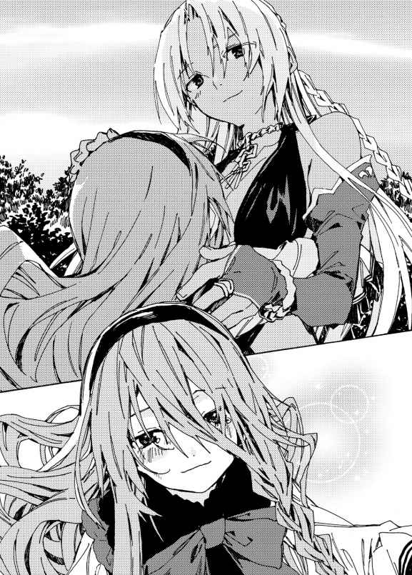
「ミリアは参加したいのかい？」
「ううん！ ミリアはキルシュ姉様のそばにいるよ！ ......だけど、就任式は賑やかだと思うよ？」
「僕にはミリアがいれば充 分 だよ。それに連中はミリアを迫 害 したからね。そんな連中と顔を合わせるなんて、僕はごめんさ」
「ミリアもだよっ！ ミリアもキルシュ姉様がいてくれたら幸せだよ！」
ミリアは嬉しそうに顔を輝かせ、キルシュに抱きつくのであった。
その日の夜。ミリアが寝 静 まったのを見て、キルシュもそろそろ寝 ようかと思っていた矢先、家の扉 がノックされた。
キルシュが応じる間もなく、扉が開かれ、銀 髪 の娘がずかずかと踏みこんでくる。
「......誰かと思えば、アイリスじゃないか」
ひさしぶりの再会に、キルシュは戸 惑 った。
ただでさえ忙しいうえに、アイリスは就任式を明日に控えているのだ。だというのに、キルシュに会いに来るとは思いもしなかった。
「どうしたんだい、こんな夜中に？」
キルシュは戸惑いを見せぬよう、努めて平静を装 った。
そんなキルシュとは裏腹に、アイリスは昔と変わらぬ笑 みを向けてくる。
「ひさしぶりじゃなっ！ ちょっとキルシュに相談したいことがあってのぅ。わし、これからスピーチの練習をするから、付き合ってほしいのじゃ！」
キルシュは戸惑いを隠しきれない。
「......なんだい、そのしゃべり方は？ それに......いま、僕をキルシュと呼んだかい？」
「ほら、わしって明日から全権代理者じゃろ？ じゃから全権代理者に相応 しい、威 厳 のある口調にしてみたのじゃよ。それもあって、昔のように『キルシュお姉ちゃん』なんて呼ぶのはどうかと思ったのじゃ」
「そうかい......」
アイリスは、もうキルシュのことを姉と呼ぶ気はないようだ。
キルシュのことを姉として慕 ってくれるのは、ミリアだけなのだ。
昔のように三人の妹たちに慕われる日々は――もう二度と訪 れないのだ。
「僕は忙しいんだけどね」
「なにを言っておるのじゃ。どう見ても暇 しておるではないか」
「......そうだね。きみから見れば、僕は暇に見えるのかもしれないね」
「そうなのじゃ。そなたと違って、わしってばみんなから引っぱりだこじゃからな。毎日忙しくてしかたがないのじゃ。ま、悪い気はしないがのぅ」
アイリスは見せつけるようにため息をつく。
「そんなわけで、わしは忙しいからのぅ。さっそくスピーチの練習に付き合ってほしいのじゃ。あっ、スピーチっていうのは明日の就任式の挨 拶 じゃからな？」
「わかっているさ。でも、どうして僕が練習相手にならなきゃいけないんだい？ きみのまわりには、多くの聴 衆 がいるだろう？」
「おるけども、その聴衆はわしを崇めておるからのぅ。なにを言っても肯 定 されてしまうのじゃよ。それだと練習にならぬから、そなたに聞いてほしいのじゃ」
「なぜ僕なんだい？」
「そなたはわしのたったひとりの姉じゃからな。姉なら、だめな妹を叱 ってくれるじゃろ？」
さも当たり前のように言われ、キルシュはうろたえた。
アイリスは、キルシュのことを姉として慕ってくれていたのだ。
たったひとりの姉として、頼 りにしてくれているのだ。
そんな妹を恨 むなんて......どうかしていた。
キルシュはほほ笑みを向ける。
「そうだね。僕はきみの姉だから、厳しい意見をぶつけてあげる。妹のしつけは姉の役目だからね」
アイリスは嬉しそうに微 笑 し、こほんと咳 をする。
そして、言った。
「わしが全権代理者になったからには、そなたらには異種族と仲良くしてもらうのじゃ。アストラルを、ありとあらゆる種族が仲良く暮らせる平和な世界にすること。それこそが、昔からの夢じゃった。その夢を叶えるには、そなたらの協力が必要不可欠なのじゃ」
キルシュは面食らった。
なぜ異種族と仲良くしたがるのか、キルシュには理解できない。なぜなら聖神門は最も優 れた種族なのだから。下等な異種族と仲良く暮らすなど、あってはならないことなのだ。
「どうじゃった？ 最高のスピーチじゃったか？」
アイリスは自信ありげにたずねてくる。
「......きみは、異種族と仲良くしたいのかい？」
「うむ。昔、お父様が異種族を見下すような発言をしていたとき、わしは疑問に思ったのじゃ。聖神門も異種族も、なにも変わらぬではないか、とな。じゃからわしらはフルリオ山脈を下り、異種族と共存するのじゃ。一緒に暮らせば、お互 いのいいところに気づけるじゃろうからな」
「......そうかい」
アイリスは聖神門と異種族を同列に扱 っている。
最高神として崇められるアイリスにとって、聖神門も異種族も大差ないのだ。
キルシュは姉として慕われるどころか、虫けらと同じ扱いを受けていたのである。
「で、どうだったのじゃ？ 皆 、賛同してくれるかのぅ？」
「......そうだね。民たちは賛同するだろうね」
「そうかっ。ならよいのじゃ！ 聞いてくれて助かったのじゃ！」
アイリスは安堵の表情を浮かべる。
「ねえ、アイリス――〈祝砲〉はあまってるかい？」
キルシュがたずねると、アイリスはぱあっと顔を明るくさせた。
「そなたも祝いに来てくれるのじゃなっ！ あまってはおらぬが、すぐに創るのじゃ！」
「なるべくたくさんほしいな」
「そなた、祝う気満々じゃのぅ！ よいぞ、たくさん創ってあげるのじゃ！」
アイリスは一〇〇枚以上の〈祝砲〉を生み出し、キルシュに手 渡 す。
「では明日を楽しみにしておるのじゃ！」
「そうだね。――本当に、明日が楽しみだよ」
キルシュはにこりとほほ笑み、アイリスを見送った。
扉が閉まるのと同時に、ぎしぎしと床 の軋 む音が聞こえてくる。
「......アイリス姉様が来てたの？」
騒 々 しいアイリスのせいで、ミリアが起きてしまったようだ。寝ぼけ眼 をこすっていたミリアは――キルシュの心の声を聞いたのだろう、顔を真っ青にさせて抱きついてきた。
「なにがあっても、ミリアはキルシュ姉様のことが大好きだよっ！ ずっとずっと一緒にいるよっ！」
これからキルシュがなにをしようとしているのか、察したようだ。
キルシュは怯 えるミリアを抱きしめ、ささやくように言う。
「ミリアはなにもしなくていいよ。すべて僕ひとりでするからね。ただ、僕のそばにいてくれるだけでいいんだ。僕にはもう、ミリアしかいないからね」
民たちはアイリスの夢に賛同するだろう。アイリスの夢は、瞬 く間 に実現するだろう。
キルシュはそれが許せなかった。
キルシュからすべてを奪 い取 ったアイリスが、自分だけ夢を叶えることが、どうしても許せなかった。
だからキルシュは壊 すのだ。アイリスが生み出した〈祝砲〉を強化し、殺傷能力を高め、同族を殺し、異種族を殺し、ありとあらゆる生物を殺し尽くし、世界を壊し、アイリスの理想とは真逆の世界を創り――
アイリスから、笑 顔 をはぎ取ってやるのだ。
「ミリアはキルシュ姉様の味方だよっ！ なにがあってもキルシュ姉様の味方だよっ！ だってだって、ミリアはキルシュ姉様のことが大好きだもん！」
キルシュは力強くミリアを抱きしめ、そして大量の〈祝砲〉を強化する。強化に強化を重ねていき......
日が昇 る頃 、キルシュは草原に佇み、そこから町を見下ろした。そうしていると、パン、パンと祝砲が鳴 り響く。
「さあ――これが僕からの就任祝いだよ、アイリス」
キルシュは〈祝砲〉を上げる。
その瞬 間 。
爆発的な轟 音 とともに凄 まじい閃 光 が町を覆 い、爆 風 が吹 き荒 れ、黒 煙 が空を焦 がし、牧歌的風景は跡 形 もなく消し飛び。
フルリオ山脈は、火の海に包まれた――......
◆
ミリアの話を聞き終えたときには、すでに夜が明けていた。やわらかな朝日が差しこみ、窓 際 に佇むミリアとアイリスの頬を明るく照らしている。
ミリアは頬を紅潮させ、涙に滲 んだ瞳でアイリスを睨 みつけている。
「キルシュ姉様のこと大好きって言ったのに、アイリス姉様も、ティナ姉様も、キルシュ姉様に会いに来てくれなかった！ 忙 しいからって、会いに来てくれなかった！」
怒 鳴 り散 らすミリアに、アイリスは顔を曇 らせ、うつむきがちになっていた。ぎゅっと拳 を握 りしめ、かすかに身体 を震わせている。
「......しょ、しょうがないじゃろ。本当に忙しかったんじゃもん」
消え入るような声で弁明するアイリスに、ミリアがますます目つきを鋭 くさせた。
「キルシュ姉様だって忙しかったよ！ なのにミリアたちと遊んでくれたよ！ アイリス姉様にプレゼントも買ってくれたよっ！ なのにどうしてアイリス姉様はキルシュ姉様を見捨てたの！」
「べ、べつにそんなつもりは......。キルシュが寂 しがっていたなんて知らなかったのじゃ。だって、キルシュはいつも余 裕 ぶっておったではないか......」
「それはキルシュ姉様がお姉ちゃんだからだよ！ アイリス姉様に弱いところを見せたくなかったんだよ！ どうして妹なのにそんなことにも気づけないの!? どうしてなんでもできるのに、キルシュ姉様を救ってくれなかったの!? 」
アイリスはなにも言い返せないでいた。
アイリスのせいでキルシュは苦 悩 し、その果てに凶 行 に及 んでしまったのではないか。そう思い、自分を責めているのだろう。
「アイリスは悪くないぜ」
翔 真 は、アイリスにほほ笑みかけた。
こんなに落ちこんでいるアイリスを見るのははじめてだ。
できることなら抱きしめてあげたいが、それはできない。
アイリスに触 れることができない以上、言葉で元気づけてあげるしかないのだ。
「じゃが、わしのせいでキルシュは変わってしまったのじゃ......。わしのせいで、多くの民が命を落としてしまったのじゃ......」
「やったのはキルシュだ。アイリスが責任を感じることはねえ」
「全部アイリス姉様が悪いんだよ！ だってアイリス姉様がキルシュ姉様を見捨てたのがそもそものきっかけだもん！」
「アイリスは見捨てたわけじゃねえ。ただ忙しくなっただけだ。キルシュは構ってもらえなくなったことに腹を立てて八つ当たりしてるだけだ。そんな身勝手な奴 に同情の余地はねえし、アイリスが心を痛める必要はねえ」
アイリスを励ました翔真は、なにか言いたげにしていたミリアに告げてやる。
「お前らにどういう事情があろうと、神託遊戯 に勝つのは俺 だ。わかったら今日は帰れ。キルシュが寂しがってるぜ」
挑 発 するように言ってやると、ミリアが吐 き捨 てるように叫ぶ。
「あなたも、アイリス姉様も、大嫌い！ 勝つのは絶対にキルシュ姉様なんだから！」
怒鳴り散らし、ミリアは光 り輝 く穴のなかに姿を消した。
夕焼けが空を覆っていた。残照が町を染め上げ、仕事を終えた人々が愛する家族のもとへと戻 っていく。
そんななか、この町の全権代理者 を務める翔 真 は、これから仕事へ向かうところだった。いつも朝から活動する翔真だが、この日は昼 頃 までたっぷりと睡 眠 を取った。それから、ルメリアの手料理を食べつつ、落ち着きのない正妻と言葉を交 わし、寝 室 をあとにした。
橙 色 に染まる城の中庭にやってきた翔真は、そこに集った嫁 たちと楽しげに話しつつ、その瞬間が訪れるのを心待ちにしていた。
そんなとき、
「うぅ、いよいよじゃのぅ......」
アイリスが、ぷるぷると震えだした。またしても落ち着きを失ってしまったようだ。
ミリアから過去の話を聞かされたときは、気落ちしてしまっていたが、翔真が励 ましてやったことで、いつもの調子に戻った......のだが、キルシュとの神託遊戯 が迫 り、彼 女 は再びそわそわしだした。
そして神託遊戯まで一時間を切ったいま、落ち着こうにも落ち着けなくなってしまったのである。
「安心しろ。勝つのは俺だ」
この台詞 を、翔真は今日だけで片手では数えきれないくらい口にした。
アイリスとて、翔真の実力は知っているはずだ。なにせ翔真が神託遊戯をするときは、必ずそばにいるのだから。
「じゃが、ルールは決めておらぬのじゃろ？」
アイリスが自分しか知らないことを耳打ちしてくる。キルシュと神託遊戯をすることが決まって一ヶ 月 経 つが、翔真は依然としてルールを決めていないのだ。それがアイリスを不安にさせているのだろう。
「心配いらねえよ。ルールはなんとかなるからな」
「なにをひそひそ話してるのよ？」
シャーロットがむすっとした顔を向けてくる。アイリスとばかり話す翔真に拗 ねているようだ。
「せっかく応 援 に来てあげたんだから、もっとあたしに構ってよ。......も、もしかしたら、もう会えないかもしれないんだから......」
不安げに瞳を揺 らすシャーロットを、翔真はそっと抱き寄 せた。熟した果実に似た甘 い香 りが、ふわっと漂ってくる。
「心配すんな。さくっと倒 して、すぐに戻ってくるからな」
「ま、負けたら承知しないんだからっ」
涙目で見つめてくるシャーロットに、翔真は優しく微笑する。
「キルシュよりシャーロットのほうがよっぽど怖 いぜ」
「そうよ。あたしは怒 ったら怖いのよ。だけどその代わり、褒 めるときは思いきり褒めてあげるわ！ あんたが無事に戻ってきたら、たくさん褒めてあげるんだから！」
「わたしも褒めてあげるの！ 翔真お兄ちゃんが帰ってきたら、なでなでしてあげるの！」
スノウがはしゃぐように言う。翔真の気分を盛り上げようとしているのだろう。翔真はキルシュとの神託遊戯が迫り、かつてないほどにわくわくしているが、スノウの気持ちは素 直 に嬉しい。
「ありがとな。おかげでやる気が出てきたぜ」
「だったら、吾 輩 はきみを抱きしめてあげるのだよ！」
「わたくしも抱きしめて差し上げますわ！」
立て続けにカトレアとミモザに鼓 舞 され、翔真はふたりに笑みを向ける。
「そいつは楽しみだぜ。......って、どうしたジュナ？ 気分が悪いのか？」
翔真が頭上を見上げると、そこに儚 げな美 貌 があった。
ジュナがしゃがみこみ、悲しげにうつむいているのだ。うつむいているとはいえ彼女は身体が大きいため、この場の全員に顔を覗 きこまれている。
「わたしも、翔真さんになにかしてあげたいわ。だけど、こんな身体じゃ撫 でることも、抱きしめることもできないわ......」
「気にするこたぁねえさ。こうして会いに来てくれるだけで嬉しいからな。それに上手くいけば、いつでもジュナに抱きしめてもらえるようになるしな」
ジュナは戸惑うように目をぱちくりさせる。
「そ、そんなことができるの？」
「ああ。できるぜ」
翔真は、ちらっとアイリスに目配せする。
アイリスが実体を取り戻すことに成功すれば、〈空白の魔札 〉を量産できるようになる。つまり回数制限のない〈対等の門 〉を量産でき、いつでもジュナといちゃつけるのだ。
アイリスは嫉 妬 心 が強いが、他人を見捨てる薄 情 な娘ではない。ジュナのために魔札 を生み出 してくれるはずだ。
「どうすれば、そんなことができるの？」
「そいつはあとのお楽しみだ。だから、いまは俺たちが戻ってくるのを待っててくれよ。ジュナが笑顔で待っててくれるなら、俺は必ず帰ってくるからな」
翔真がにこやかに告げると、ジュナの美貌に笑みが広がっていく。
「おい、翔真。約束忘れんじゃねえぞ。戻ってきたら赤ちゃんだからな！」
ジュナを励まし終えると、今度はリリーが明るい口調で語りかけてきた。
「おう。お前と子作りできる日を楽しみにしてるぜ。......って、どうしたミスト？」
ミストは顔を真っ赤に染め、わなわなと震 えていた。
「こ、子作り......？ ふたりの仲は、もうそこまで進展していたのだな......」
「まだなのじゃ！ まだそこまでは進展しておらぬのじゃっ！ 正妻であるこのわしが、まだキスすらしておらぬのじゃからな！」
アイリスが必死な形相で言った。嫁たちの子作りまでは認めたが――正妻として、一番最初に翔真の子どもを産みたいと思っているのだろう。
「し、しかし時間の問題なのだろう？ 翔真殿 がキルシュを倒せば、アイリス殿は実体を手に入れるわけだし......。そうなれば、私の相手をする時間は減りに減るだろうな......」
アイリスが実体を手に入れた瞬間、怒 濤 の子作りラッシュが始まると考えたのだろう。翔真が多くの子どもに恵 まれると、ミストは相手にされなくなってしまうのではないかと不安に感じているのだ。
「あんたって、まだ手すら繋 いだことがないのよね？」
シャーロットにたずねられ、ミストは情けなさそうにうなずいた。
「う、うむ。翔真殿と手を繋ぎたいし、できることなら抱きしめてほしいとも思っているのだが......恥 ずかしくて、なかなかできぬのだ」
「じゃあ、いまのうちに抱きしめてもらったら？ じゃないとあんた、いつまで経 っても手すら繋げないわよ？」
「そいつはいいな。ミストを抱きしめれば一気にやる気が出てくるぜ」
翔真の言葉が、ミストの勇気に火をつけたようだ。ミストはもじもじしながらも翔真を見つめ、抱きしめてほしそうに両手を伸ばしてきた。
そんなミストを、翔真は抱き寄せる。硬 い胸当てに邪魔されて胸の感 触 を楽しむことはできなかったが、腰 の手 触 りは堪 能 できた。
抱 擁 を解いたとき、ミストは耳の先まで真っ赤にしていた。
「しょ、翔真殿！ 絶対に戻ってきてほしいのだ！ い、いつになるかはわからないが、私も翔真殿の赤ちゃんがほしいのでな！」
勇気を振 り絞 るミストの頭を、翔真は優しく撫でてやる。
「俺もだ」
ミストはぱあっと顔を輝かせた。清 々 しく笑い、みんなの顔を得意気に見る。
「やっと貴 殿 たちに追いついたのだ！」
嬉 しげに笑うミストに、シャーロットたちがほほ笑ましそうな眼 差 しを向ける。
そのとき、翔真の足もとに真 紅 の魔 法 陣 が広がった。ついに神託遊戯の場へ転送される瞬間が訪れたのだ。
「ご主人様のお帰りを、お待ちしております」
ルメリアがおずおずと言った。嫁たちが集 うなか、翔真に話しかけていいものか迷っていたのだろう。
もちろん話しかけていいに決まっているのだが。翔真にとっては嫁もルメリアも、同じくらい大切な存在なのだから。
「おう。帰る頃には腹が減ってるだろうし、飯を用意しててくれ」
「まだ上手には作れませんが......」
「いいんだよ。上手だろうとなんだろうと、俺はルメリアの手料理が好きだからな」
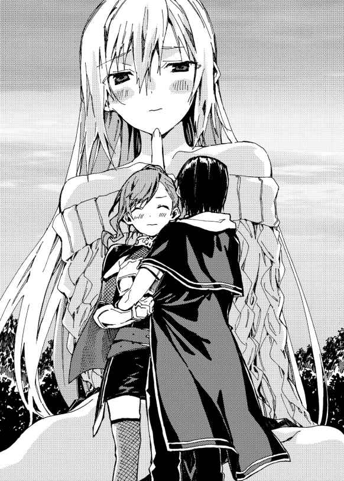
ルメリアは瞳に涙を滲ませた。唇 をほころばせ、嬉しげに、何度も何度もうなずき、
「はい......はいっ。たくさん作ってお待ちしております」
翔真が微笑で応じたところ、視界が赤く塗 りつぶされた。
魔法陣の輝きが瞬く間に増していき、嫁たちの顔は見えなくなってしまう。この場には、シャロンとカンナも駆 けつけてくれているのだ。まだふたりには声をかけてやれてないが......しかし二度と会えないわけではないのだ。
とはいえふたりとも不安に感じているかもしれないし、それは嫁たちにも言えることだ。
「んじゃ、さくっとキルシュを倒して戻ってくるぜ！」
みんなの不安を吹き飛 ばすべく、できる限り明るく言い残し――......
◆
美しい花々の咲 き誇 る中庭で、美しい娘たちに囲まれていた翔真は、気づけば石造りの部屋に佇んでいた。
部屋の中央には金 髪 ツインテールの審 判 精 霊 ニンファが佇み、その向こうでは褐 色 肌 の妖 艶 な美女が悠 然 とほほ笑んでいる。
豊 穣 たる胸の下で腕 を組み、切れ長の瞳でまっすぐに翔真を見 据 える美女。今回の神託遊戯で翔真の対戦相手を務める、聖神門 の全権代理者にしてアイリスの姉――
キルシュである。
「よォ、キルシュ。負ける準備はできてるか？」
翔真は余裕たっぷりの笑みでキルシュを挑発する。
「それは僕の台詞さ」
穏 やかな物 腰 でキルシュが言い返すと、少し遅 れて転送されてきたアイリスが叫ぶ。
「翔真は負けぬ！ せいぜいいまのうちに強がっておくがよいのじゃ！ 勝負が始まれば、そなたは翔真のあまりの強さに取り乱すじゃろうからな！」
キルシュがくすりと笑う。
「強がっているのはきみのほうじゃないのかい？ 竜 胆 翔真はルールを思いついてないんだろう？」
「そ、それは......」
アイリスがたじろいだ。
リリーの屋 敷 で怒 り狂 っていたミリアは、キルシュに慰 められて気を取りなおしたのか、あれから毎日翔真の前に姿を見せていた。今日も中庭に向かう直前まで窓の外に浮 かび、じっと翔真を見ていたし――心の声を聞き、キルシュに情報を渡 しているはずだ。
竜胆翔真はいまだに作戦を思いついていない、と。
「ミリアは一 緒 じゃねえんだな」
「ミリアはお家でお留守番さ。僕の帰りをいまかいまかと待っているよ。ミリアは、僕と違 って静 寂 が大 嫌 いだからね。早く帰って慰めてあげないといけないのさ」
「あいつが家で帰りを待ち続けるなら、お前と会うことはもう二度とねえだろうな。なあ、いまのうちに別れの挨拶をしといたほうがいいんじゃねえか？」
「それはできないのですっ！」
と、黙 りこくっていたニンファが声を張り上げた。
「ここは精霊本部なのです！ 精霊の許可なくひとを呼ぶことはできないのです！」
「へえ、精霊本部なんてあるのか。〈千里眼 〉で世界を見通したとき、それらしい建物は見当たらなかったんだがな」
「結界が張ってあるので見つけることはできないのです！」
「ま、訪問者がいないほうが仕事に集中できるだろうしな。てなわけで、今回もしっかりジャッジしてくれよな」
ニンファは力強くうなずき、
「しっかり審 判 としての責務を果たすのですよぅ！」
声を弾ませると、翔真とキルシュの顔を見比べた。
「さてさて、おふたりともルールは決まってるですか？ さっきのやり取りを聞いた感じ、翔真さんは決めてないようですが......」
「ど、どうなのじゃ、翔真よ？ ミリアが姿を消してから、一時間ほど間があったのじゃ。その隙 に必勝策を考えたのではないか？」
アイリスが期待と不安の織り混ざった眼差しを向けてくる。
翔真は肩 をすくめ、
「思いついてないぜ。つっても、キルシュがルールを発表したら、すぐに思いつくがな」
「そうしてくれると助かるよ。お互いが事前にルールを決めていたら、すりあわせるのが面 倒 だからね」
神託遊戯は互いに合意しない限り始まらないのだ。今回はすでに合意しているため審判精霊のニンファが立ち会っているわけだが――実際にバトルフィールドへ転送されるのはルールが確定したあとだ。
お互いに納 得 できるルールを模 索 し、折 衷 案 が出るまでは、この部屋から出られない。実際、ルールを決めるのに何 ヶ 月 もかかったという例もある。
キルシュとしては、それは望むところではないのだろう。キルシュはすぐにでも世界を滅 ぼしたいと願っているのだから。
「ではキルシュさんからお願いするのです！」
キルシュは、怖 ろしい企 みを胸に秘 めているとは思えないほどの穏やかな笑みを浮かべ、ルールを口にした。
【１】竜胆翔真は〈冥府への道連れ 〉を使うことができない。
【２】竜胆翔真は一 般 に流通している魔札しか使うことができない。
【３】アイリスは神託遊戯に干 渉 してはならない。
「これが僕のルールさ。さて、きみはどう出るかな？」
お手並み拝見とばかりにキルシュが見つめてくる。
キルシュが禁じた〈冥府への道連れ〉は『対象が攻 撃 魔札を使うたび、その人物は使用した魔札の半分のダメージを受ける。ただし、あなたは攻撃できない』という効果だ。
強化した魔札を使うキルシュにとって、それこそが一番厄 介 な魔札なのである。
「どうするのじゃ翔真よ。オリジナル魔札と〈冥府への道連れ〉を禁じられてしまっては、打つ手がないのじゃ！ ここはルールで対 抗 するのがよいと思うが......」
アイリスの策は悪くない。
たとえば翔真が『竜胆翔真はオリジナル魔札を持ちこめる』と提案すれば折衷案を出すことになり、キルシュがルールを取り下げるまで粘 ることもできるのだから。
ルール決めに何ヶ月もかけるのはキルシュにとって望ましくないため、翔真がしつこく食い下がれば、なんとかなるかもしれないが......
「俺は嫁たちと約束したからな。さくっとキルシュを倒して、すぐに戻るってさ」
翔真にとっても神託遊戯に時間をかけるのは望むところではないのである。この一ヶ月、イメージトレーニングを楽しませてもらったし、早く戦いたくてうずうずしているのだ。
ルール決めを楽しむ時間は、もう終わったのである。
「俺はキルシュのルールを受け入れるぜ」
アイリスの提案を却 下 すると、キルシュが満足げに笑う。
「きみならそう言うと思ったよ。なにせきみは負 けず嫌 いなようだからね。僕 のルールをすべて受け入れたうえで勝利する――そんな妄 想 に取り憑 かれているんだろう？」
「俺は負けるのが大嫌いだからな。そんなわけで今回も勝たせてもらうぜ。妄想の世界でじゃなく、現実世界でな」
「だったら、早いところルールを教えてくれないかい？ 僕に勝てるルールとやらをね」
キルシュが嘲 るような口調で言う。そんなルールは存在しない、とでも言いたげだ。
「翔真を急 かすのはやめるのじゃ！ 翔真は、たったいまそなたのルールを聞いたばかりなのじゃぞ!? そんなに早く決められるわけがないじゃろ！」
「いや、決めたぜ」
アイリスがぎょっとした顔を向けてくる。
「も、もう決めてしまったのか!? じっくり考えたほうがよいと思うのじゃが......」
「熟考したぜ。なにせ一分もかけて考えたんだからな。キルシュごときを倒すのに、これ以上の時間は必要ねえよ」
挑発するように言うが、キルシュは笑みを崩 さなかった。自分の勝利を信じて疑わないようだ。
そんなキルシュに、翔真はルールを告げる。
【１】竜胆翔真は神託遊戯の場にアイリスを連れていく。
【２】竜胆翔真を倒したらキルシュの勝ちとなる。
【３】神託遊戯に持ちこめる魔札は互いに一五枚まで。
「こいつが俺のルールだ」
アイリスがぽかんとする。
「普 通 すぎるのじゃ......。あ、相手はキルシュじゃぞ？ それ、フレイクを倒したときのルールとほとんど同じではないかっ！」
実際のところ、アイリスの言う通りである。
違いといえば、持ちこめる魔札の枚数を二〇枚から一五枚に減らしただけだ。
「俺にとってはキルシュもフレイクも大差ないってことだ。――で、どうするキルシュ？ このルールを通して問題ねえか？」
「もちろんさ。きみがどんなルールで挑 んでこようと、僕のルールがすべて通った以上、僕の勝ちは揺るぎないからね」
お互いに異論はないようだ。
「ルールは決まりですね！ それでは、デッキを組むのです！ それが終わったらバトルフィールドに転送するのですよぅ！」
世界の命運をかけた神託遊戯の審判を務めることに興奮しているのか、ニンファは熱く叫 ぶのだった。
◆
翔真は荒 漠 とした大地に佇 んでいた。突 き刺 すような日差しのもと、荒れ果 てた大地が果てしなく続き、草木の類 いは見当たらない。地平線の彼方 まで続く殺風景は、かつてのクヌル平野を思わせる。
「きみの墓場に相応しい場所だね」
一五メートルほど向こうに佇むキルシュが悠 々 とした態度を見せつけてくる。翔真との神託遊戯を目前に控 えているのに、まるで緊 張 が感じられない。
もっとも、それは翔真も同じことだが。
「もう勝った気でいるのか」
「僕は最初から勝つ気満々さ」
「勝つ気満々の癖 してミリアに偵 察 を頼 んだのか。本当は俺に勝てるか不安だったんじゃねえのか？」
翔真の挑発に、キルシュはくすりと笑 みをこぼす。
「あれはただのお遊びだよ。ミリアの力を借りずとも、僕はきみに勝つことができた」
「だ、だったらどうしてミリアに偵察させたのじゃ！」
「きみたちの慌 てふためく様を見たかったからさ。そう、その顔だよ」
慌てふためくアイリスを指さし、キルシュは愉 快 そうに笑う。
「どこまでわしをバカにすれば気が済むのじゃ！ そなた、そんなにわしが憎 いか！」
「ふふ。そうだね。きみのことは骨の髄 まで恨んでいるよ」
「だから世界を滅ぼすのかっ！ わしに嫌 がらせをするために――ただそのために多くの同 胞 を殺し、暴風雨を起こし、アストラルを滅ぼそうとしておるのか!? 」
「そうさ」キルシュは笑みを崩さない。「きみが悪いんだよ、アイリス。僕が持っていたものを、すべて奪ったきみがね。もっとも、ミリアだけは僕のもとに残ってくれたけどね。だから――」
そこでキルシュは、はじめて真 剣 な眼差しを翔真に向けた。
「だから僕はきみに勝つ。きみを倒してミリアを撫でてあげるのさ。ミリアは僕の帰りを待 ち侘 びているからね」
「お前がミリアを待たせているように、俺も大事な奴らを待たせてるんだ。さっさとけりつけようじゃねえか」
そう言うと、翔真は五メートルほど上空に浮かぶニンファに目配せした。
「それでは、ルールの最終確 認 をするのです！」
ニンファは声を張り上げてルールを口にする。
【１】竜胆翔真は神託遊戯の場にアイリスを連れていく。
【２】竜胆翔真を倒したらキルシュの勝ちとなる。
【３】神託遊戯に持ちこめる魔札は互いに一五枚まで。
【４】竜胆翔真は〈冥府への道連れ〉を使うことができない。
【５】竜胆翔真は一般に流通している魔札しか使うことができない。
【６】アイリスは神託遊戯に干渉してはならない。
「以上の六つで間 違 いないですね!? 」
今回の新設ルールは六つ――互いに上限ぎりぎりまで設けた。互いに極限までリスクを背 負 ったこの勝負、敗者は勝者に人生を掌 握 されることになる。
常人であればとてつもないプレッシャーを感じるだろうが――翔真もキルシュも余裕の態度を貫 いている。
互いに勝利を確信しているのだ。
勝てるとわかっている以上、プレッシャーなど感じようはずがないのである。
無論、どちらか一方が敗者となるのだが。
「さあ、それでは準備はいいですか!? 」
「ちょっと待て」
と、翔真が待ったをかける。
「勝負の前に、こいつを使わせてもらうぜ」
翔真がポケットから取り出したのは真っ黒なバンダナだった。デッキ作りの際、具現化したものをポケットに入れておいたのだ。
バンダナを口に巻いたところ、キルシュが小さく吹き出した。
「なに笑ってんだ？」
「ふふ。いやぁ、おかしくて、ついね。バンダナを巻いてくれたおかげで、きみがどんな魔札を使うのか、わかってしまったよ」
「翔真よ、どうせハッタリじゃ！ 気にすることはないからのぅ！」
「励ましの言葉ありがとな」
アイリスに微 笑 して告げると、翔真はニンファを見上げた。
「さて、待たせたなニンファ。もう始めちまって構わないぜ」
ニンファはこくりとうなずき、大きく息を吸いこんだ。そして、
「それでは――神託遊戯スタートなのです!! 」
声を張り上げ、勝負の邪 魔 にならないように姿を消した。
その瞬間だ。
「〈風見鶏な結界 〉！」
キルシュが魔札を詠 唱 した。それは『ダメージ五〇未満の攻撃を永続的に無効化する』効果を持つ防 御 魔札だ。
通常ならば放っておくが、相手は〈強化 〉の使い手キルシュである。オリジナル魔札の〈歩く城塞 〉を上回る防御力を誇っているに違いない。
ゆえに翔真は詠唱する。
「〈無慈悲な強奪 〉！」
それは『直前に使用された魔札の効果を奪い取る』魔札であった。翔真が詠唱した瞬間、キルシュが青白い光に包まれる。揺らめく光の奔 流 が、翔真に吸いこまれるように消えていく。
「お前の魔札をいただいたぜ！」
「構わないよ。もう一枚持っているからね！ ――〈風見鶏な結界〉！」
「〈闇をもたらす砂嵐 〉！」
翔真が攻撃魔札を詠唱した瞬間、砂 塵 が舞 い上 がった。日差しが砂 埃 に遮 られ、眼前が真っ暗に染まる。
広 範 囲 を蹂 躙 する〈闇をもたらす砂嵐〉――それは対象一名に五〇〇ダメージを与 える攻撃魔札だ。
「ははっ！ やっぱり〈闇をもたらす砂嵐〉だったね！」
視界を覆う砂塵の向こうからキルシュの哄 笑 が聞こえてくる。バンダナを巻いた翔真を見て、〈闇をもたらす砂嵐〉を使うと予想していたのだ。
「キルシュめ、こうなることがわかっていたから真っ先に防御魔札を使ったのじゃな！ じゃが、真っ先に攻撃されなかったのはラッキーじゃっ！ あやつの攻撃魔札を一 撃 でも受けておったら、そなたのライフは〇になっておったからのぅ！ まさかそなたは、先に防御魔札を使わせるためにバンダナを巻いて、キルシュに〈闇をもたらす砂嵐〉を使うと教えたのかっ？ ......翔真よ！ 聞こえておるのか、翔真よ！ ええい、いったいどこにおるのじゃ！ 砂埃しか見えぬのじゃあぁ！」
「――ちゃんと聞こえてるぜ」
慌てふためくアイリスに、翔真は答えた。応じると同時に砂 嵐 が弱まっていき、視界が回復する。
キルシュは先ほどとまったく同じ場所に佇んでいた。その頭上には、一〇〇〇と数値が浮いている。
「無傷じゃと!? あやつめ、やはり〈風見鶏な結界〉を強化しておったのじゃな！」
「当然さ。僕は〈強化〉の使い手だからね。この手で触れたものは、なんであろうと強くなるのさ。暴力行 為 が禁じられたいま、魔札を強化する以外に使い道はないけどね」
「なんであれ、お前が強化した魔札は俺には通じねえけどな。なぜなら――」
「〈風見鶏な結界〉があるから、と言いたいんだろう？ 確かに、きみは僕の〈風見鶏な結界〉を奪 い取 った。だけど、僕がそれを強化したという保証はあるのかい？」
「そなたは〈強化〉の使い手じゃろうがっ！ それにそなたのライフは一〇〇〇のまま！ それこそが、そなたが〈風見鶏な結界〉を強化したという動かぬ証 拠 じゃ！」
キルシュはくすりと笑う。
「竜胆翔真は真っ先に〈無慈悲な強奪〉を使うはず――僕がそう予測していたとしたら、どうだい？ 竜胆翔真のものになるとわかりきっている魔札を、わざわざ強化してやると思うかい？」
アイリスがはっとする。
「ま、まさか一枚目の〈風見鶏な結界〉は強化しておらんかったのか!? 」
「うろたえるな。どうせハッタリだ。俺たちを動揺させて新たに防御魔札を使わせる――つまり、魔札を無 駄 遣 いさせようって腹づもりだろうぜ」
「ふふ。それじゃあ、ハッタリかどうか試 してみるかい？ ――〈雷帝の裁き 〉！」
キルシュが詠唱した瞬 間 、彼女の頭上に巨大な魔法陣が出現する。そこに眩 いばかりの光源が生まれた。
通常の〈雷帝の裁き〉とは桁違いの大きさだ。強化に強化を重ねたことで魔札の迫 力 は増すのである。ゆえにキルシュの〈雷帝の裁き〉は、通常のそれとは桁違いの威 力 を誇る。
その一撃が、稲妻となって放たれる――
「〈うかつな失敗 〉！」
その直前、翔真は『直前に使用された魔札の効果を打ち消す魔札』を詠唱した。稲妻が消滅する。
キルシュは愉快そうに笑う。
「ハッタリだと信じたんじゃなかったのかい？」
「わざわざ攻撃を受けてやる必要はねえからな」
「ふふ。誤魔化さなくていいんだよ。きみは自分の判断を信じ抜くことができなかった。つまり僕の言葉に惑わされたんだ。落ち着きを失ったきみに勝機はないよ。――〈雷帝の裁き〉！」
「俺の勝ちは揺るがないぜ。――〈うかつな失敗〉！」
「何度消そうが同じことさ。――〈雷帝の裁き〉！」
「だったらこいつを使わせてもらうぜ。――〈鏡面世界 〉！」
翔真の眼前に巨大な鏡が生まれる。
それは対象の攻撃を相手に跳ね返す防御魔札である。
「よしっ、これで決まるのじゃ！」
「そんなわけないだろう？ ――〈うかつな失敗〉！」
「いいや、決まりだ！ ――〈鏡面世界〉！」
「残念ながら、決まらないよ。――〈うかつな失敗〉！」
怒濤の詠唱合戦の末、翔真の〈鏡面世界〉が打ち消された。キルシュの頭上の魔法陣に溜まっていた光源が、稲妻となり翔真に放たれる。
「〈墓掘り人の五重層 〉！」
翔真が唱えた直後、五体のガイコツが魔法陣から浮かび上がってきた。ダメージを五回軽減して〇にする防御魔札だ。
そのうちの一体に稲妻が直撃し、轟 音 と閃 光 がまき散らされる。
身代わりとなったガイコツは木っ端微塵に弾け飛び、跡 形 もなく消滅した。
「よしっ！ いまの攻防でキルシュは多くの魔札を使ったのじゃ！ そなたはあと四回もダメージを軽減できるし、この調子でいけばキルシュはデッキを使い果たすのじゃ！」
勝利が見えたとばかりに舞い上がるアイリスに、キルシュが失笑する。
「アイリス......きみは数も数えられないのかい？ 竜胆翔真は、すでに二枚の〈うかつな失敗〉と〈鏡面世界〉を使ったんだよ？」
「そ、それがどうしたというのじゃ！」
「わからないかな？ つまり、こういうことさ！ ――〈狙い澄ました白羽の矢 〉！」
キルシュが唱えたそれは『防 御 無効化』の特性を持つ威力一〇〇の攻撃魔札だ。しかし、〈強化〉の使い手であるキルシュのそれは間違いなくダメージ一〇〇〇を超 えている。
証拠に、魔法陣から顔を見せた白羽の矢は――ミサイルと見 紛 うほどの大きさだったのだから。
まさに一撃必殺の攻撃だ。
「まずい！ 翔真よ、早く防ぐのじゃ！」
「わかってるっての。――〈帰巣本能 〉！」
翔真は『直前に使用された魔札の対象を入れ替える』魔札を唱える。キルシュの放った白羽の矢が向きを変え、照準がキルシュに定められる。
「甘いよ。――〈鏡面世界〉！」
「その台詞と攻撃を、そっくりそのままお返しするぜ。――〈うかつな失敗〉！」
翔真が三枚目の〈うかつな失敗〉でキルシュの〈鏡面世界〉を打ち消した。白羽の矢が再びキルシュに照準を合わせる。
だが、
「何度やろうが同じことさ。――〈鏡面世界〉！」
キルシュはまたしても反射の魔札を使う。本来の役目を思い出したかのように、白羽の矢の照準が翔真に定められる。
「翔真よ、急いで打ち消しを......」
アイリスははっとする。
翔真はすでに――この時点で三枚の『打ち消し』魔札を使っているのだ。そして同名の魔札は三枚しかバトルフィールドに持ちこめない。
「そ、それなら『反射』を使うのじゃ！ でないと――」
「無 駄 さ。どうやって防ごうと、そのすべてに対 抗 策 を用意しているからね。先に『打ち消し』を使い果たした瞬間、きみの負けは確定したんだ」
キルシュは、にこりと笑う。
「だから――さよなら、竜胆翔真」
瞬間、翔真はミサイルの如 き白羽の矢に押し潰される。大地を貫いた白羽の矢は役目を終えたとばかりに消滅し、巨大なクレーターだけが残される。
「翔真ぁ！」
アイリスが咄 嗟 にクレーターを覗きこむ。
そこに翔真の姿はなかった。
アイリスの声が、虚しく響 くだけだった。
「う、嘘 じゃろ......？ わ、わしを驚 かせようとしておるだけじゃろ？ のぅ、翔真よ。もう充 分 驚いたから......だから、早く顔を見せてほしいのじゃ......」
アイリスはすすり泣きながら呼びかける。
それでも翔真は、姿を現さなかった。
「ハハハハハッ！ 勝ったよ！ 僕の勝ちだ！ ずいぶんとあっけない幕引きだったね！ こんなにあっさり勝てるとは、さすがに予想できなかったよ！」
キルシュの哄笑が響き渡る。
アイリスは絶望的な顔を上げ、震える声でキルシュに告げる。
「......キルシュよ。取り引きといかぬか？」
「取り引きだって？」
笑いすぎて涙 が出たのだろう。キルシュは目の端の涙を拭 い、愉快そうに聞き返した。
「そ、そなた、わしを恨 んでおるのじゃろ？ じゃから、わしを殺すがよい。その代わり、ほかの者たちは見逃してやってほしいのじゃ......」
キルシュはくすっと笑う。
「断るよ」
「な、なぜじゃ!? 」
「なぜって、きみを殺してしまえば、きみの絶望する顔を愉しめないじゃないか。僕はね、アイリス。きみを殺すつもりは最初からなかったんだよ。きみには僕が味わったのと同じ気持ちを愉しんでほしいからね。それが僕からきみへの贈 り物 さ」
喜んでくれたかな、とキルシュはアイリスの反応を愉しむように笑う。
「そ、んな......」
アイリスは心の底から絶望した。もうしゃべる気力も湧 いてこない。こんなことになるなんて思いもしなかった。作戦を立てていないと聞いて不安だったが、なんだかんだ翔真ならキルシュに勝てると信じていたのだ。
「さて、審判。黙ってないで、さっさと試合終了の合図を出してくれるかい？ 僕の勝ちだとね」
キルシュは勝ち誇るように笑みを広げ、虚空を見上げた。
「それは無理なのです」
淡 々 とした声が、空から降 ってくる。
「......え？」
ニンファの一言に、キルシュの顔が凍りついた。
「無理って、なにを言ってるんだい？ 精霊は公平な審判をしなければならないはずだよ。きみは竜胆翔真に肩入れするのかい？」
キルシュの声に怒りが滲 む。
「違うのです。翔真さんは――まだ負けてないのです」
「なっ!? 」
キルシュの顔に警 戒 の色が浮かび上がった。それと同時に、アイリスの顔に希望の色が広がっていく。
「い、生きておるのか!? まだ生きておるのじゃな!? ど、どこにおるのじゃ！ 翔真よ、どこに――」
「ここにいるぜ」
アイリスの背中に、翔真は声をかけた。
突 然 背中から声をかけられ、アイリスはびくっと震 える。
咄嗟に振り向き、顔中に笑みを広げていく。
「お、おお！ おおおっ！ 翔真！ 翔真ぁ！」
アイリスが翔真の頭上をくるくるまわって喜びを表現する。
「な、なぜだい......なぜダメージを受けてないんだい!? 僕はきみに八〇〇〇ダメージを与えたはずだよ!? 」
取り乱すキルシュに、翔真は悠然と笑って言った。
「さっきの言葉を返してやるぜ。――落ち着きを失ったお前に勝機はないぜ、キルシュ」
「僕の質問に答えろ！ 僕の攻撃を受けていながら、なぜ無傷でいられるんだ！」
キルシュが怒鳴った。
はじめて耳にするキルシュの怒 声 に、翔真は愉快そうに笑う。
「クローンだよ。お前が必死こいて倒そうとしていたのは、俺 のクローン――〈幻影の繭 〉で生み出 した偽 物 だ」
「なっ!? 〈幻影の繭〉だって!? いったいいつの間に――っ」
キルシュははっとする。
「そ、そうか、あの砂嵐は攻撃のためじゃなく......！」
「ご明察。あの砂嵐はただの目 眩 まし――俺が〈幻影の繭〉を使ったと、お前に気づかせないためのものだ」
翔真が人生初となる神託遊戯の場で使った魔札〈幻影の繭〉――。アイリスとの勝負で使用した際、クローンが生まれるまでに五秒ほどかかることは確認済みだ。
見晴らしがいいとキルシュに気づかれてしまうし、彼 女 が勝負の最中に五秒ものあいだ目を瞑 ってくれるとはとうてい思えない。
それゆえ翔真は目眩ましを使った。所有する魔札のなかでも極 めて派手な効果のものでキルシュの視界を遮ったのである。
「だ、だけど......クローンはしゃべることができないじゃないか。なのにどうやって僕と会話をして......」
クローンは翔真の命令に忠実だ。近くで魔札を使うよう命じれば、その通りに行動する。しかしキルシュの言うように、しゃべることはできないのだ。
「〈透明化 〉で姿を消して、クローンに魔札を使うよう命じつつ、お前と会話してたんだ。ずっと無言だと、怪しまれると思ってな。口を動かさないと怪しまれるから、バンダナで口を隠 してたんだよ」
「そういうことか。きみは砂嵐を起こすことで、バンダナを身につけても不自然ではない状況を作りだしたんだね......」
「そういうこった」
「じゃが翔真よ。〈幻影の繭〉は、そなたが目にしたものを複製する魔札じゃ。そなた、どうやって自分をコピーしたのじゃ？」
「そんなの〈千里眼〉を使ったからに決まってんだろ。だから当然、俺はそのとき手札にしてた魔札もコピーしたぜ。これがなにを意味するか、賢いキルシュならわかるだろ？」
翔真は、にやりと笑みを浮かべて言った。
キルシュは肩をすくめる。
「もちろんさ。この勝負は、どちらが先に防御魔札を使い果たすかで勝敗が決するからね。きみは防御魔札を増やし、僕は防御魔札を無駄遣いした。だからきみのほうが有利だと、そう言いたいんだろう？」
「わかってんじゃねえか。お前が〈冥府への道連れ〉を禁止カードにした以上、俺は直接ダメージを与えてお前を倒 すしかねえからな。ダメージを与えるには、まずは防御魔札を使い果たさせる必要があったってわけだ」
そのためのルール【３】 だ。
翔真はデッキ枚数に制限を設けることで、持ちこめる防御魔札の数を減らしたのである。
「お前は一〇枚の魔札を使った。そのうち六枚が防御魔札だ。そろそろ尽 きてくる頃 じゃねえか？」
挑 発 めいた口調で問うと――キルシュは肩を揺 らして笑った。
「僕は〈強化〉の使い手だよ？ 防御魔札なんて、そんなに持ちこむ必要はないのさ！ ――〈狙い澄ました白羽の矢〉！」
「甘 いぜ。――〈うかつな失敗〉！」
「甘いのはきみのほうさ。――〈滅びゆく精神 〉！」
翔真の頭上に赤く染まったハンマーが出現する。通常のハンマーと異なり、強化されたキルシュのそれはコンテナと見紛うほどに巨大だ。当然、威力も強化されているのだろう。
通常の〈滅びゆく精神〉は威力一〇〇だが――
「その魔札はね、きみが魔札を使うたびに、きみに一〇〇〇〇ダメージを与えるのさ」
「一〇〇〇〇じゃと!? 」
アイリスが戸 惑 っている。
「落ち着け。威力が本当に一〇〇〇〇だろうと、俺がダメージを受けることはねえからな。なにせ俺にはキルシュの〈風見鶏な結界〉がついてるんだからさ」
翔真は神託遊戯が始まった直後にキルシュの〈風見鶏な結界〉を奪い取ったのだ。その効果はいまなお継続中である。
「じゃが、キルシュがどれくらい強化しておるのかわからぬし......そ、そもそも強化してないかもしれぬのじゃぞ!? 」
「だいじょうぶだ。少なくとも〈滅びゆく精神〉のダメージを無効化できるくらいには、強化されてるからな」
「ふふ。どうしてそう言いきれるんだい？」
「お前が〈滅びゆく精神〉を使う前に、〈雷帝の裁き〉を使ったからだ」
キルシュの眉 が、ぴくりと動く。
「それがどうしたというんだい？」
「おいおい、とぼけるのはよせよ。本当に一〇〇〇〇ダメージを与えることができるなら、真っ先に〈滅びゆく精神〉を使うだろ？ なのにお前は〈雷帝の裁き〉を何枚も使って〈風見鶏な結界〉を破ろうとした。――要するに〈風見鶏な結界〉の防御力は〈滅びゆく精神〉の攻撃力を上回ってるってことだ」
「じゃ、じゃが、だったらなぜキルシュはこのタイミングで〈滅びゆく精神〉を使ったのじゃ？」
「そんなの俺を脅して引き分けに持ちこもうとしたからに決まってんだろ。これがなにを意味するか――わかるな？」
翔真に目配せされ、アイリスははっとした。みるみる顔を明るくさせていき、
「キルシュは負けを悟ったというわけじゃなっ！」
「そういうこった」
勝機が残っているなら、引き分けに持ちこむ必要はない。
つまりキルシュは、自分の負けを悟ってしまったのである。
「ふふ。僕が負けるだって？ それはありえないよ。なにせきみと同じように、僕にも〈風見鶏な結界〉がついてるからね」
「そ、そうじゃった！ まずはそれを破らぬことにはキルシュにダメージを与えることができぬのじゃ！ ど、どうするのじゃ翔真よ!? 」
「心配すんな。キルシュが持ってきたように――俺も〈狙い澄ました白羽の矢〉を持ってきてるからな」
「おおっ！ それで一〇〇ダメージを与えることができれば、そなたの判定勝ちは決まりじゃな！」
「判定勝ち？ 俺はそんな勝ち方ごめんだぜ。勝つなら圧勝――キルシュのライフを〇に削って勝利する。それが俺の勝ち方だ」
「じゃが、いったいどうやって――」
「いま見せてやるよ。――〈狙い澄ました白羽の矢〉！」
翔真の頭上に小さな魔 法 陣 が浮 かび上がった。それと同時に〈滅びゆく精神〉の効果が発動し、頭上のハンマーが振り下ろされる。
しかし翔真のライフは一〇〇〇のままだった。
翔真が思った通り、キルシュの脅しはただのハッタリ――〈風見鶏な結界〉の防御力が〈滅びゆく精神〉の攻 撃 力 を上回っていたのである。
「〈強化の連鎖 〉！ もういっちょ、〈強化の連鎖〉！」
魔法陣から顔を覗 かせていた白羽の矢が、むくむくと肥大化する。
それは『対象一枚の魔札の威力を四〇〇上げる』効果の魔札だ。おまけに『この魔札を使用するごとに効果は一〇〇増える』との但 し書きがついている。
すなわち――
「一〇〇＋四〇〇＋五〇〇――合計一〇〇〇の攻撃だ。これをどう捌 くか、お手並み拝見といこうじゃねえか！」
白羽の矢の照準が、キルシュに定められる。
「その攻撃、きみに返すよ！ ――〈鏡面世界〉！」
「いらねえよ。――〈鏡面世界〉！」
「しつこいね！ ――〈うかつな失敗〉！」
「お前こそ。――〈うかつな失敗〉！」
キルシュの打ち消しを、翔真は打ち消す。
白羽の矢の照準が、再びキルシュに定められる。
翔真は、にやりと笑った。
「気づいてるか、キルシュ。俺とお前、互 いに手札は残り一枚だぜ？」
「......気づいてるさ。数えていたからね」
「だったら、それを使わないのか？ お前の残り手札は〈狙い澄ました白羽の矢〉だろ？ 俺の残り手札は〈鏡面世界〉だが、ただのハッタリかもしれねえぜ」
それを聞き......キルシュは手札を使おうとはしなかった。
翔真の言葉を真に受けたわけではない。
自分の頭で、ハッタリではないと判断したのだ。なぜならクローンが破 壊 されたあと、翔真は一枚の〈鏡面世界〉を使ったが――クローン翔真は二枚の〈鏡面世界〉を使ったのだから。
それがなにを意味するか、キルシュは理解したのである。
「じゃあな、キルシュ」
びゅわっと放たれた白羽の矢が、キルシュの胸を貫いた。
強化に強化を重ねた攻撃を受け、キルシュのライフは〇になり――
「この勝負――翔真さんの勝ちなのです!! 」
翔真はただの一度もダメージを受けることなく、キルシュとの神託遊戯に勝利したのであった。
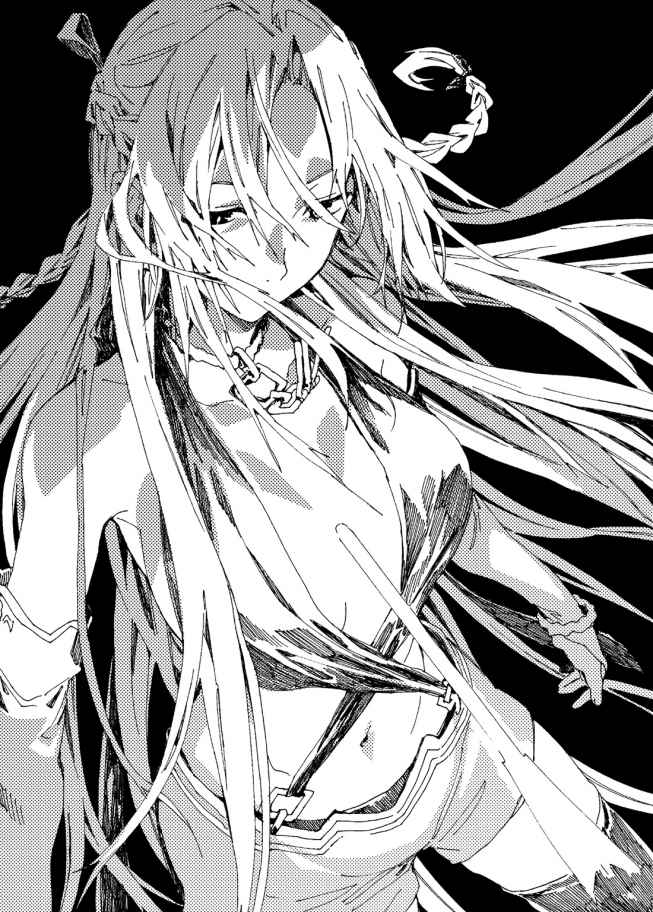
◆
キルシュとの神託遊戯に完全勝利を果たした翔真は、精 霊 本部へ戻 ってきた。浮かれるようにうきうきしているアイリスをそのままに、キルシュに告げる。
「さて。お前は三つのルールを作った。つまり、俺はお前に三つの命令を聞かせることができるってわけだ」
だよな？ と翔真はニンファに確認を取る。ニンファはうなずき、ふたりの顔を見比べながら言う。
「そうなのです。翔真さんはキルシュさんに三つの命令を聞かせることができるのです。だけどその前に、賞品をお渡 ししないといけないのです！」
ニンファの手元に青白く輝 くカードが現れる。それを翔真に渡し、
「クエスト優勝、おめでとうございますなのです！」
「ありがとよ」
翔真は一〇〇五一種目の魔札――〈神がかった交渉術 〉を受け取り、ニンファに笑みを向ける。
それからキルシュに向きなおった。キルシュは斬首される直前の囚人のような顔をして、伏し目がちに翔真を見ている。
「さっそく一つ目の命令だ。キルシュ――お前の所有する魔札をすべて俺に寄こせ」
キルシュは、かすかに唇 をつり上げた。余 裕 の態度を見せつけようとしているのだろう。
だが、無理しているのは一目瞭然だ。
「きみならそうすると思っていたよ。僕 を奴 隷 にせず、魔札だけを奪うとね」
「お前を奴隷にするなんざ、まっぴらごめんだからな。てか、そんなことしたらリリーに怒 られちまうぜ。ほら、無駄口叩いてないでさっさと寄こせよ」
「......わかっているさ」
キルシュはほっそりとした指先を近づけてきた。金色に輝く魔導指輪 に、翔真は自分のそれを近づける。
ぽわ......と互いの魔導指輪が淡く輝き、そして光が収まったとき――
「これがコンプリートの証 か」
「うむっ！ よくやったのじゃ、翔真よ！」
アイリスは虹色に輝く魔導指輪をまじまじと眺 め、歓 声 を上げる。
そのとき、室内に光 り輝く穴が生まれた。直径二メートルほどのそれは〈神の間〉へと通じる門だ。
魔札をコンプリートした者しか通れないその門をくぐることで翔真は〈神の間〉へ赴くことができる――そして翔真に取り憑 いているアイリスは、少し遅 れて〈神の間〉に転送されるのだ。
そこで魔素 を取りこむことで、アイリスは〈空白の魔札〉を一枚創 るくらいの力を手に入れ――実体を取り戻すのである。
「やっとじゃっ！ やっとわしは元通りになるのじゃ！ 翔真とハグしてキスして子作りできるのじゃぁ！」
アイリスは真 紅 の瞳 に涙を浮かべ、感極まっている。
そんなアイリスにほほ笑みを向けていると、ニンファが言った。
「二つ目の命令は、どうするのです？」
目的を果たしたかのように振 る舞うアイリスを見て、これ以上の命令は不要だろうかと考えたのだろう。
翔真は首を振る。
「命令権はすべて使うぜ」
キルシュはかすかに震えた。
もはや余裕を偽る気力もないのか、完全にうつむいてしまっている。だが、
「二つ目の命令だ。キルシュ――俺にいま穿 いているパンツを見せろ」
キルシュが、ゆっくりと顔を上げた。
信じがたそうに目をぱちくりさせ、
「......いま、なんて言った？ 僕の耳が正しければ......とても不 愉 快 な命令が聞こえたんだけど......」
「お前にパンツを見せびらかす趣 味 がないなら、それで正解だ。俺にパンツを見せろって命令したんだからな」
「なっ」
キルシュの頬 がさっと紅潮する。青白かった顔に、生気が宿ってくる。
「きみはなにを言って――」
「なにを言っておるのじゃ、翔真よ!? なぜよりによってキルシュのパンツなのじゃ！ そなた、そんなに欲求不満か!? わしがおるじゃろ！」
「せっかくの機会だからな。それに言っただろ？ キルシュの性格はクソだが、見た目は好みだってな。だからパンツを見せろって命じたんだ」
「いや、意味がわからぬが!? 」
アイリスは盛大にうろたえている。それはクローン翔真が〈狙い澄ました白羽の矢〉に消し飛ばされたときに匹敵する狼 狽 ぶりだった。
「そうか、そういうことだね？」
と、キルシュがなにかを察したように言う。
「三つ目の命令で、きみは僕を処刑する。だけど、ただ処刑するだけではつまらないから、僕を苦しめようとしているんだろう？ でも残念ながら、きみの思惑通りにはいかないよ。僕は下着を見せることに、抵抗など感じないからね」
キルシュはショートパンツに手をかけ、膝 まで下ろした。
「これで満足かい？」
触 り心地 のよさそうな黒いパンツを露出し、キルシュがわずかに湿っぽい声を出す。
強がってはいるが、恥 じらいを隠しきれていなかった。じぃっと下着を見つめていると、むちむちとした太ももが汗ばんできたのだ。恥ずかしがっている証拠である。
「もういいぜ。目に焼きつけたからな」
キルシュはすぐさま服装を正した。
「にしても、これでアイリスとキルシュのパンツを見たことになるな。ティナのパンツは結 婚 式 のときに見るし、あとはミリアで四人姉妹コンプリートだぜ」
翔真はティナとはじめて会った日に『竜胆翔真が魔札全種を集めたら下着姿で結婚式に出る』と約束を交 わしていたのだ。
「ミリアを泣かせたら化けて出るからね」
キルシュが睨 みつけてくる。
「勘 違 いするな。言ってみただけだからな。そもそもミリアのパンツには興味ねえよ」
キルシュは安 堵 したように吐 息 した。本当に心の底からミリアを愛しているのだろう。
「さて、三つ目の命令だ。お前は――」
「わかっているさ。きみは僕に死を命じるんだろう？ だけどその前に、ひとつお願いを聞いてくれないかい？」
キルシュがすがりつくような声で言う。
「言ってみろ」
「ミリアに伝言を頼 みたいのさ。『いままで僕のそばにいてくれてありがとう。僕に付き合わせてしまって、ごめんね』とね。そうしてくれたら、僕はどんな辱めでも受けるよ。命令とは違 う――自主的にね」
「断る」
翔真は即 答 した。
「......そうかい。わかっているさ。ただ言ってみただけだからね」
「そうじゃねえ。その伝言は、わざわざ伝えるまでもねえことだろ。あいつのほうこそ、お前と一 緒 にいられて幸せだったんだからな。だから感謝する必要はねえし、ましてや、謝 るこたぁねえ」
キルシュはぽかんとした顔で翔真の話を聞き......うっすらと笑 みを浮かべる。
「......そうだね。僕がミリアに謝るべきことは、一緒に過ごしたことじゃなく――一緒に過ごせなくなってしまうことだ。あの娘 は賑 やかなのが好きなんだけど......寂しい思いをさせてしまうのは、嫌 だなぁ......」
キルシュはしだいに涙 声 になっていく。
「......の、のぅ、翔真よ？ 三つ目の命令で、キルシュをミリアの住まいに閉じこめる、というのはどうじゃ......？ キルシュは魔札を失ったし、そこから一歩も外へ出なければ、もう悪さも働けぬじゃろ」
アイリスがおずおずと言った。キルシュは驚いたように目をまるくする。
「アイリス、なにを言って......」
「勘違いするでないぞ。べつにそなたを許したわけではないのじゃからな！ ......ただ、わしは昔......本当にずっと昔、キルシュのことが大好きだったのじゃ。そのときのことを思い出してしまったのじゃ......」
どうじゃろうか、とアイリスが提案してくる。
「だめだ」
翔真はきっぱりと断った。
「いままで散々悪さしといて、罰を受けたくないってのは虫がよすぎるぜ」
「じゃ、じゃが......」
アイリスが、ちらっとキルシュを見る。
キルシュは、覚悟を決めたように首を振る。
「もういいのさ。竜胆翔真の言う通り、それはあまりにも虫がよすぎるからね。さあ――僕に死を命じるといい。きみの命じた通りの死に様を見せてあげるよ」
キルシュがまっすぐに見つめてくる。
「それじゃ、三つ目の命令だ」
びくっと震えるキルシュに、翔真は命じた。
悪の限りを尽くしたキルシュに、相応 しい罰を――......
「キルシュ。お前は――」
◆
色とりどりの花々が咲 き誇 る庭園に、ミリアはひとり佇 んでいた。
キルシュの帰りをいまかいまかと待っているのだ。
大好きな姉を見送って、かれこれ一時間は経 つ。
すでに日が暮れ、あたりはすっかり暗くなっていた。
静 寂 が漂 い、心細くなってきた。
ミリアはぶんぶんとかぶりを振り、明るい声を絞り出す。
「だいじょうぶ！ だってキルシュ姉様は強いもん！ 竜胆翔真なんてこてんぱんにやっつけちゃうよ！ それにキルシュ姉様は、ミリアをひとりぼっちにしないもん！ だから絶対に帰ってくるもん！」
ずっと昔から、キルシュだけがミリアのそばにいてくれた。
だから今回だって、翔真を倒して戻ってくるはずだ。
キルシュは――キルシュだけは、ミリアをひとりぼっちにしないのだ。
「キルシュ姉様が戻ってきたら、ぎゅって抱 きつくよ！ いっぱいいっぱい抱きしめて、おめでとうって言うよ！」
ミリアはそわそわしながら、キルシュの帰りを待ち続けた。
「早く戻ってこないかなぁ、キルシュ姉様！」
静けさを打ち消すように、ミリアは声を張り上げる。賑 々 しい声を上げ、どうにかして気分を盛り上げようとする。
「まだかなぁ......」
じわじわと涙が滲んでくるが、かぶりを振って最悪のイメージを振り払う。キルシュが戻ってきたときに、ミリアは笑 顔 で迎 えたい。
だからミリアは、笑ってないといけないのだ。
ミリアはぎこちなく笑ったまま、キルシュの帰りを待ち続けた。
朝日が昇 っても、キルシュは帰ってこなかった。
かつてアイリスが暮らしていた〈神の間〉は、天空に浮かぶ城だった。
優雅さとはかけ離 れた砦 のような城が地盤ごと浮いている。夜風が吹いても揺れはなく、翔 真 は地に足をつけているかのような安心感を抱いていた。
魔札 であたりを照らしてみると、歴史を感じる城 壁 は蔦 に覆われ、ところどころ朽ちている。
どうやらアイリスは城の手入れには無頓着だったらしい。この場を訪 れることができるのは魔札全種を手にした者に限られるため、他人の目を気にする必要はなかったのだろう。
だが、いまは違う。
「こんなことなら、しっかり手入れしておけばよかったのじゃ」
汚れた城を翔真に見られ、アイリスは恥ずかしがっていた。
「気にするこたぁねえさ。掃 除 が上手だろうと下手だろうと、アイリスを嫌 いになったりしないからな」
「ほ、本当じゃな？」
「おう。そもそも掃除なんて魔札で一 瞬 だからな。これから先は子育てで忙 しくなるんだ、掃除に時間を割く必要はねえさ」
「うむっ！ わし、ちゃんと育ててみせるからのぅ！」
「もちろん俺も手伝うぜ」
「ふたりの愛の結晶じゃからな！」
うきうきと語るアイリスを連れて城門を抜け、雑草に侵 食 された石 畳 の道を歩いていき、翔真は重 厚 な扉 に行き当たる。
ぐっと押すと、ぎぎ......と軋 み音を立てて扉が開く。
真夜中の城は真っ暗だった。どこもかしこも闇 に支配されており、淡 い光を放つ球体の魔札〈不自然な月明かり 〉では頼 りない。
翔真は〈不自然な月明かり〉を消すと、闇に支配された城内に向けて〈闇喰い妖精 〉を発動する。痩 せ細 った妖 精 がずるっと闇を引っぺがし、むしゃむしゃと食べていく。
妖精のお腹 がぽっこり膨らんだ頃、城内は昼間のように明るくなっていた。
そこらじゅうにほこりが積もり、雪が降ったかのような光景が広がっている――廊 下 に敷かれた絨 毯 は白く染まり、元々何色だったのかわからないほどだ。その上にひとり分の足 跡 を残しつつ歩いていき、翔真は適当な部屋の扉を開けてみる。
う、と息を呑んだ。
「こいつはひでえな......」
「あ、あまり見ないでほしいのじゃ......」
アイリスは恥ずかしげに両手で顔を隠した。散らかった部屋を見られるのが恥ずかしいらしい。
恥ずかしがるのも無理はないほど、室内は酷 い有様だった。
ほこりまみれなのはもちろん、ゴミの山が積み重なっていたのだ。木材や工具が散乱し、作りかけの木箱やひん曲がった釘などが散らばっている。
アイリスには日曜大工の趣味でもあったのだろうか。
「こ、これからは片づける習慣をつけるのじゃ。じゃから、見なかったことにしてほしいのじゃ......」
「それは構わねえが......なにを作ってたんだ？」
「なにかを作るというか、物作りの腕 前 を磨いてたのじゃよ。ちょっとした家具で経験を積んでいき、最終的には家を建てるのが目標だったのじゃ」
「俺の目には、初歩の初歩でつまずいたように見えるぜ」
「そ、そなたの言う通りなのじゃ......」
アイリスはしゅんとする。
「家具を作るのって、想像しておった以上に難しかったのじゃよ。工具とか扱 ったことがないし......打てども打てども釘は曲がるばかりじゃし......」
その当時のことを思い出したのか、アイリスは疲 れたようにため息をついた。そこらに散らばる『く』の字に折れ曲がった釘を見ると、悪戦苦闘するアイリスの姿がありありと目に浮かぶ。
「けっきょく、木箱しか作れなかったのじゃ」
「それがこれか」
翔真は歪 な形の木箱を手に取った。苦労の跡がうかがえる出来映えだ。持ち上げた際、カラカラとなにかが転がる音がした。釘でも入っているのだろうか。
「小物入れに使おうと思って、ひとまずそこに置いておいたのじゃ」
「そもそも、どうして手作りすることにしたんだ？ 家具がほしいなら魔札で生み出せばいいだろ」
アイリスは〈創造 〉の使い手だ。ほしいものがあればなんでも生み出すことができる。なのになぜ慣れない日曜大工に手を出したのだろうか。
「そんなに退 屈 だったのか？」
「退屈だったというのもあるが......わしって〈創造〉の使い手じゃろ？ それってつまり、ほしいものはなんでも生み出せるということなのじゃ。同族は皆 、わしを羨んでおったが......なんでもできることほど、つまらぬことはないのじゃよ。じゃから苦手なことに手を出したのじゃ」
「それが物作りってわけか？」
「うむ。まだわしに能力が宿る前、キルシュやミリアやティナの誕生日に手作りの料理を振る舞 ったことがあってのぅ」
「お前、料理できたのか？」
アイリスはふるふると首を振る。
「びっくりするほど下手なのじゃ。じゃが、あやつらはわしの下手な料理を喜んでくれてのぅ。特にキルシュなんて、泣くほど喜んでくれたのじゃ」
翔真の知っているキルシュからは想像もつかないが――かつてのキルシュはアイリスのことを宝物のように扱っていたのだ。
そんなアイリスが自分のために頑張って手料理を振る舞ってくれたのだから、泣くほど喜ぶ気持ちもわかる。
「じゃから、また苦手な物作りに挑戦して、それをキルシュにプレゼントすれば......そうすれば、キルシュは喜んでくれる――優しかった頃のキルシュに戻ってくれると期待したのじゃ」
けっきょく、アイリスはキルシュに贈 り物 をしなかった。
贈り物が完成しなかったのか、キルシュが見つからなかったのか、渡す勇気がなかったのか、渡そうと思った矢先に敦 盛 に敗れて『閉ざされた空間』に隔離されてしまったのか。
それは翔真にはわからないし、いまさら聞く必要もないことだ。
「ところで、このなかにはなにが入ってるんだ？」
「指輪じゃよ。それ、小物入れとして作ったからのぅ。使い心地を確かめるために指輪を入れたのじゃよ」
「指輪って、魔導指輪 か？」
アイリスは首を振り、どこか懐かしそうに木箱を見る。
「わしの宝物だった指輪じゃ。魔導指輪のモデルになっておるのも、その指輪じゃよ」
「魔導指輪のモデルねぇ」
一目見てみたいと思ったが、無理やり開けると木箱が壊れてしまいそうだ。ただでさえ朽ちかけているのだから、こじ開けないほうがいいだろう。
翔真はそっと木箱を床 に置き、アイリスを見上げる。
「で、魔素 ってのはどこにあるんだ？」
懐かしそうに部屋を隅 々 まで見まわしていたアイリスは、思い出したように言う。
「わしの部屋――〈神の間〉に漂っておるのじゃ」
魔素は力の源のようなものだと以前アイリスは語っていた。それを使って精霊のほかに、何億枚もの魔札を生み出したのだとか。
アイリスが自分の力だけで生み出した〈空白の魔札 〉は一度使うと消滅するが、魔素が取りこまれたコンプリート対象の魔札は無限に使えるのだ。
「そいつを取りこめば〈空白の魔札〉を一枚作るだけの力は取り戻せるんだったよな？」
「うむっ。そして〈空白の魔札〉で『幽 体 に実体を与 える魔札』を作り、身体 を元通りにすることができれば、わしはかつてのわしに戻る――いくらでも〈空白の魔札〉を創れるようになるのじゃ」
「そのときはジュナのために『身体のサイズを変える』魔札を創ってやれよな」
「わかっておるのじゃ。いままでは焦るあまりほかのおなごに嫉 妬 しておったが、いまは心に余裕が生まれたのでな。なにせ実体が手に入るのじゃからなっ。これでもうほかの嫁 たちに出し抜かれる心配はなくなったのじゃっ」
希望に満ちた顔のアイリスの案内を受け、翔真は〈神の間〉を目指す。長い廊下を歩き、階段を上がり、さらに廊下を進み、階段を上がり、そして......
「ここじゃ」
最上階にたどりつき、アイリスが厚手の扉を指し示した。
翔真が扉を開くと、ぶわっとほこりが舞い上 がった。雪化粧のようにほこりが積もった絨毯はまっすぐに延び、その先に玉座が置かれている。
「歩き疲れたじゃろ？ しばらくそこに座 って休むとよいのじゃ」
「そうするぜ」
翔真は役目を終えたバンダナを椅子に敷こうとして......
「なんだ、こりゃ？」
ほこりの積もった椅子の上に、封筒のようなものが置いてあることに気がついた。手に取ってみると、それは手紙のようだった。
「お前のか？」
宛名も差出人も書かれていない封筒を掲げ、アイリスにたずねる。
アイリスは首を振り、
「見覚えがないのじゃ」
「てこたぁ、アイリスが『閉ざされた世界』に飛ばされたあとに誰 かが遺 したってわけか」
「じゃが、この場を訪れることができるのは魔札全種を集めた者だけなのじゃ。そして、敦盛が〈千里眼 〉をそなたの故郷に持ち帰っておった以上、収集は不可能なのじゃ」
そこで翔真とアイリスは、はっとした。
手紙を遺した人物の正体を察したのだ。
「これ、じいちゃんの手紙か！」
「じゃろうな。わしを『閉ざされた世界』に飛ばしたあと、手紙を書いたのじゃろう......。なんて書いてあるのじゃ？」
翔真は封筒から手紙を取り出 した。
そこにはミミズがのたくったような文字が記されている。
「これ......アストラル語か」
「そなた、読み書きはできるのか？」
「まだだ。だからこいつを使うぜ。――〈賢者の眼鏡 〉！」
文字を解読する魔札を唱えると、手紙に記された文字が馴染みのある言語に見えてきた。
アイリスに聞こえるように、翔真は手紙を読み上げる。
「『魔札収集を果たし、〈神の間〉を訪れた者に告ぐ。我 が名は竜 胆 敦盛。最高神は私が倒 し、とある場所に封じた。それゆえ貴 殿 が〈空白の魔札〉を手にすることはないだろう。不在の最高神に代理し、私が褒 美 を取らす。最高神を下した私の宝を貴殿に与える』......これ、宝の地図か！」
手紙を読み終えた翔真は、同封されていた地図を広げる。
世界地図のように広域が描かれているものではなく、拡大図が描かれていた。
どうやら山が描かれているようだが......一見しただけではこれがどの山を指しているのかはわからない。
しかし敦盛はまじめな男だ。
こんな悪戯 を仕掛けるとは思えないし、地図に記された『×印』の場所に宝が埋まっているのは確かだ。
「敦盛め、粋な計らいをしおって」
敦盛がやろうとしていたことは、魔札全種を集めた者の不満を解消することだ。最高神アイリスに代わって褒美を与えれば、暴動を起こすなどして不満をまき散らしたりしないだろうと考えたのだろう。
つまり、アストラルの治安を守るために〈空白の魔札〉に匹敵する宝を隠 したのである。
翔真は手紙を魔札化させると、魔導指輪に保管する。
「その地図、どうするのじゃ？」
「もちろん有効活用するぜ」
翔真は楽しげな口調で言った。
実際、翔真はわくわくしていた。
史上初めて最高神を下した敦盛は、翔真にとって師匠と言える存在だ。
そんな敦盛が『宝』と称するものが、この世界のどこかに眠 っているのだ。それを手に入れたいと思うのは、当然のことである。
「ところで、力は戻りそうか？」
椅子に腰 かけた翔真は、アイリスに問いかけた。
アイリスは満足そうにうなずき、
「魔素を取りこんでる感じがするのじゃ！」
「いまいちピンとこねえけど、とにかく順調ってことか」
「順調そのものじゃよっ。この調子じゃと、夜明け頃 には充 分 な魔素が溜まるのじゃっ」
「明け方か。けっこうかかるな」
とはいえ、アイリスはこの瞬 間 を五〇年以上待ったのだ。
彼 女 にとっては一瞬のことだろうし、翔真としても記念すべき瞬間をこの目で見たいと思っている。
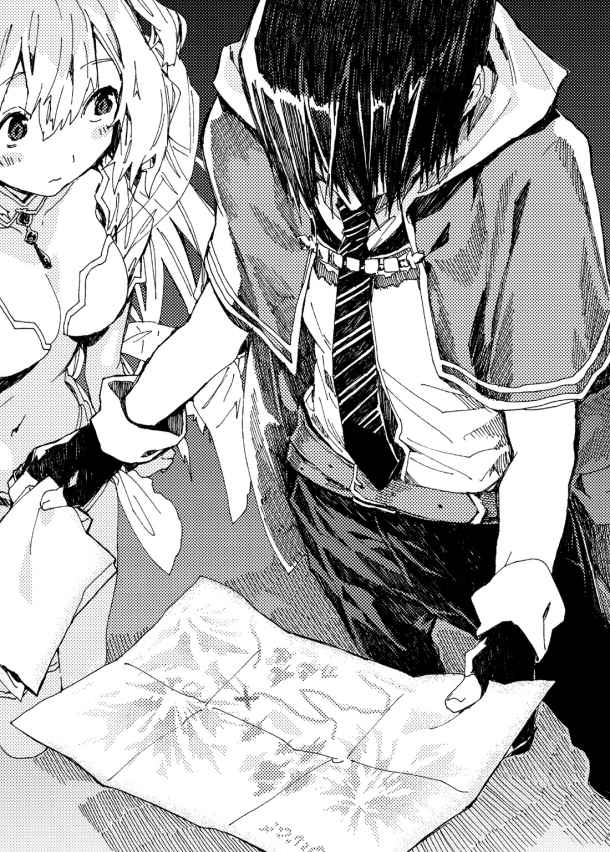
「疲れておるなら寝 ててもよいのじゃぞ」
「むしろ目が冴えてるぜ。なにせじきにアイリスを抱きしめることができるんだからな」
アイリスはぱあっと顔を明るくする。
「わしも抱きしめてもらえるのが楽しみで眠れないのじゃっ！ 今日は徹夜じゃなっ！ なにして過ごす？」
うきうきしているアイリスに、翔真はほほ笑みかける。
「アイリスが好きなことでいいぜ」
「うぅむ。そう言われると悩ましいのぅ......」
「アイリスはひとりでいるときなにしてたんだ？ 物作り以外にさ」
「精霊と話しておったのじゃ」
「精霊って、審 判 のために生み出したんだろ？ 話し相手が務まるのか？」
「務まらなかったのじゃ。冷静かつ公平なジャッジができるよう、淡 々 とした性格に設定したからのぅ。じゃから......あっ！」
「どうした？」
「そうじゃった！ ニンファじゃ！」
「ニンファがどうした？」
「話し相手じゃよ！ わし、話し相手としてニンファを生み出したのじゃ！」
翔真は納 得 したように苦 笑 した。
「どうりでおしゃべりだと思ったぜ」
「うむ。あやつを生み出したのは何百年も前じゃから、すっかり忘れておったのじゃ」
「どうしてずっとそばに置いておかなかったんだ？」
「あやつはおしゃべり過ぎたからのぅ。朝から晩までしゃべりっぱなしで心休まるときがなかったから、精霊本部に転送したのじゃよ」
そういう経 緯 があったらしい。
「ちゃんと仕事してるし、審判としての才能はあったようだな」
「うむ！ 神託遊戯 の場で会うことがあれば褒 めてやるのじゃ！ もっとも、わしはもうバトルフィールドへ飛ばされることはないじゃろうがな」
アイリスはどことなく寂しげな顔をする。
アイリスは翔真に取 り憑いているためバトルフィールドに転送されていたのだ。実体を取り戻せば取り憑きが解除され、強制的にバトルフィールドへ飛ばされることはなくなるのだ。
「そなたは、この先も神託遊戯を続けるのか？」
「ったりめーだ。俺 は神託遊戯を愛しているからな！ 対戦相手が見つかりしだい、勝負するぜ！」
アイリスはほほ笑ましそうに頬を緩 める。
「そなたは本当に神託遊戯が好きなのじゃな。魔札の創造主として嬉 しい限りなのじゃ」
「ああ。マジで感謝してるぜ！ 魔札のおかげで昔から楽しませてもらったし、こうしてアイリスに出会えたしな」
魔札がなければ敦盛はアストラルに召喚されず、アイリスが勘違いして翔真を召喚することもなかったのだから。
「魔札があったから、わしは翔真に出会えたのじゃっ。それにルメリアにカンナにミスト、スノウにシャロンにシャーロット、ジュナにミモザにリリーにカトレア......って、おなごばかりじゃな。これから先も、新たな嫁が増える気がするのじゃ......」
「かもしれねえな。つっても、しばらくは新たな出会いを求めるより、いまの嫁との新婚生活を楽しむがな。ミストもようやく積極的になってきたことだしさ」
「最初は堅物じゃったのに、いまではそなたにめろめろじゃからな。変われば変わるものじゃのぅ」
「ああ。この分だと来年には子作りできそうだぜ」
「来年か。わしより遅 い出産なのは間違いなさそうじゃなっ。そうじゃ、出産といえば、スノウはどうするのじゃ？ あやつはまだ幼子じゃが......子作りするのかのぅ？」
怖 々 とたずねてくるアイリスに、翔真は肩 をすくめる。
「さすがにスノウと子作りする気にはならねえよ。ま、早くて五年後ってところだな」
「五年か。その頃にはわしの子どもも大きくなっておるじゃろうな。もしかしたら二人目......いや、三人目がおるかもしれぬのじゃっ！ ......まあ、シャーロットも、同じくらい子宝に恵 まれるじゃろうがな。あやつ、そなたとの子作りに積極的じゃし」
「だな。このあと城に戻ったら、すぐに誘われるかもしれねえぜ」
「そ、それだとわしとタイミングが被 ってしまうのじゃ！」
アイリスは城に戻ってすぐに翔真と子作りしたいらしい。
「どうにかしてシャーロットの興味を子作りから遠ざけねばならぬのぅ......。そうじゃっ、ジュナに頼めばよいのじゃ！」
名案を思いついたとばかりに声を弾 ませるアイリス。
「なにを頼むんだ？」
「ジュナに『シャーロットが子どもの名付けのことで相談があるそうじゃぞ』と告げるのじゃ。それでしばらく時間が稼げるのじゃ！ ......でも、そなたと子作りしたいおなごはほかにもたくさんおるからのぅ。リリーに、カトレアに、ミモザに......どうやって全員を出し抜けばよいじゃろうか......」
アイリスは頭を抱え、うんうん唸る。
「つーか、先に子作りするのか？」
アイリスはきょとんとした。
「子作りを差し置いて、ほかになにをしろと言うのじゃ？」
「結婚式だよ」
アイリスははっとする。
「そ、そうじゃった！ 結婚式っ！ 翔真に触 れるのが嬉しくて、子作りのことしか頭になかったのじゃ！ じゃが、それはそれで誰が一番乗りするかで揉めるじゃろうな......」
「いっそ全員まとめて結婚式を開くってのはどうだ？」
「そ、それは嫌なのじゃ！ せっかくの結婚式なのじゃから、そなたにはわしだけを見てほしいのじゃ！」
アイリスは結婚式の日だけは主役として、翔真の愛を独占したいらしい。
「ま、結婚式の順番決めはお前らに任せるぜ。俺はそのあいだにやることがあるからな」
「それって、敦盛の宝探しじゃな？」
「それもあるが......ほら、カトレアの姉のことは覚えてるか？」
「うむ。ダリアじゃろ？ 敦盛に惚れて森棲門 自治区 を失踪したあと、キルシュに捕まり奴 隷 になってしまった。それがどうしたのじゃ？」
「捜 して保護するんだよ」
キルシュはすべての奴隷を無事な姿で安全な場所に解放したのだ。神託遊戯に参加する条件として誓約書に記した以上、その約束を破ることはできない。
安全な場所に解放された以上、放っておいてもすぐに死ぬことはないが......奴隷たちは魔札はもちろん食糧もお金もないだろうし、このままでは上手 く日常生活に溶けこめないだろう。
「しばらく神託遊戯の相手は見つからないだろうし、そいつらを捜して、生活を支援してやろうと思ってな」
帰る場所があれば連れていってやるが、そうでない者もいるだろう。
クヌル平野に招待して住みこみの仕事を与えれば、キルシュ絡みのすべての問題は解決となるのだ。
「もっとも、ダリアのことはカトレアに任せるがな」
「きっと大目玉を食らうじゃろうな。とはいえ、カトレアもいまは恋 に生きておるのじゃ。当時のダリアの気持ちも理解してやれるじゃろうし、そこまで酷い説教はしないじゃろ。にしても結婚式の順番かぁ......」
アイリスは再び頭を悩ませ始めた。
それをほほ笑ましく眺 めている間に時間は流れていき――
「おぉ！」
と、ふいにアイリスが素 っ頓 狂 な声を上げた。
「どうした？」
「魔素が溜まった感じがしたのじゃ！」
興奮気味に叫び、アイリスは両手をお椀の形にする。
「さっそく〈空白の魔札〉を創 るのじゃ！」
「いよいよか......！」
魔札が生み出される瞬間をこの目で見ることができるのだ。
翔真はわくわくしつつ、アイリスのてのひらをじっと見つめる。
すると、アイリスのてのひらに淡く光る球体が生まれた。ゴルフボールサイズの球体はゆらゆらと揺らめき、薄っぺらく伸びていき――
一枚のカードが生まれた。
「できたのか？」
「うむっ！ 幽体に実体を与える魔札の完成じゃっ！ そして！ これを！ わしが！ 使うのじゃあ！」
アイリスはハイテンションだ。かつてないほどの盛り上がりを見せたまま自分を対象に魔札を使う。
オリジナル魔札は一度の使用で消滅する。効果が発動したようで、ぱあっと光の粒子となって消えてしまった。
その瞬間――
「ふわあっ!? 」
床上三〇センチのところに浮 いていたアイリスは急に落下した。すとんと床に足をつけ、ぐらりとうしろに倒れこみ、思いきりしりもちをついてしまった。
「だいじょうぶか？」
翔真が手を差し伸べると、アイリスは目をキラキラと輝 かせた。
「うむっ！ 平気なのじゃ！」
そして、ぎゅっと翔真の手を掴む。
はじめて触れたアイリスの手はモチのように柔 らかく、なによりとても温かかった。
「うわあ、うわあ、翔真の手じゃ！ 翔真の手に触れたのじゃあ！ 意外とがっしりしておるのぅ！ さすがはわしの夫！ 頼りがいのある手なのじゃ！ おまけに温かいし......あぁ、本当に、わしはそなたに触 っておるのじゃなぁ......」
アイリスは感慨深そうにつぶやき、真 紅 の瞳 に涙 を浮かべる。
しりもちをついたまま感涙しそうなアイリスを、翔真はぐいっと引き寄せ、力強く抱きしめた。
抱きしめずにはいられなかった。
心の底から愛する嫁に、ようやく触ることができたのだから――......
◆
日が昇り始めた頃――。翔真は〈想い出の地へと続く扉 〉でゲートを開き、アイリスを連れて光 り輝く門をくぐった。
光り輝く門はクヌル平野へと続いていた。一瞬視界が煌めき、次の瞬間に緑の生 い茂 る庭園へ躍 り出る。
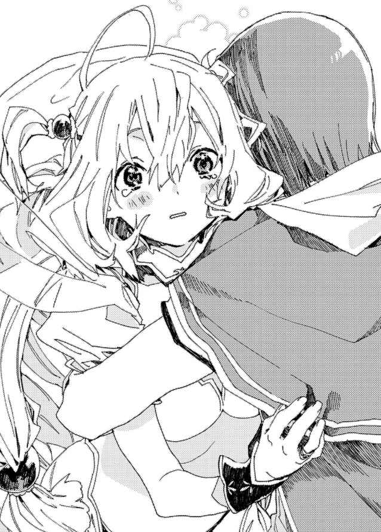
そこは翔真の居城の庭園だった。柔らかな日差しが広がるなか、レジャーシートの上に大勢の女の子が座りこんでいる。
「あ！」
最初に翔真に気づいたのは、ミストだった。
わなわなと震 えて叫 ぶミストに、ほかの娘たちが怪 訝 な顔を向ける。それからミストの指さす先を振り向き、翔真が佇んでいることに気づいた瞬間――
わっと歓 声 が上がった。
「翔真お兄ちゃんっ！」
真っ先にスノウが駆 け寄 ってくる。朝露の残る芝生に足を滑らせ転びそうになりつつも、なんとか踏みとどまって翔真のもとに辿りつく。
がばっとお腹に抱きついてきたスノウを、翔真は優 しく抱きしめた。
「絶対に戻 ってくるって信じてたの！ だって翔真お兄ちゃんはすごくすごーく強いの！」
はしゃぐスノウの頭を撫 でていると、ほかの嫁たちがにこやかにほほ笑みかけてきた。
「無事に戻ってきてくれて嬉しいのだよ！」
「あなた様のお帰りを、心待ちにしておりましたわっ」
「おめーが勝つって信じてたぜ！」
「あたしだって信じてたわっ！ ま、ジュナは不安そうにしてたけどね」
「心配かけて悪かったな、ジュナ。すべて片付いたし、もう不安に感じる必要はないぜ」
「うんっ！ 翔真くんが戻ってきてくれて、本当に嬉しいわっ！」
「私も嬉しいのだ！」
「ミストが抱きついてくれたおかげで力が湧 いてきたからな。ほんと、感謝してるぜ」
「あ、あれくらい、いつでもしてあげるのだっ！」
「積極的になってくれて嬉しいぜ。......って、眠いのか、シャロン？」
ふわあと大あくびをしていたシャロンにたずねる。嫁たちのうしろでうとうとしていたシャロンは、はっと目を見開き、申し訳なさそうに目を伏 せた。
「す、すみません。安心したら急に眠 気 が押 し寄せてきまして......」
「わざわざ寝ずに待っててくれたのか」
「当たり前じゃないですか！ 私だって、翔真さんのことが心配だったんですから......」
「心配させて悪かったな。眠いだろうし、今日は泊まっていけよ。もちろんスノウもな」
「泊まるの！ だって今日はお仕事したくないの！」
さすがにシャロンも仕事をさせる気にはならないようで、嬉しそうにはしゃぐスノウをほほ笑 ましそうに眺めている。
「仕事といやぁ、カンナはここにいてよかったのか？」
「うん。お店の仕込みはお父さんとお母さんに任せてきたからね。だって早く翔真くんの無事を確かめたかったもん！ 元気そうで安心したよっ」
「カンナも元気そうでなによりだぜ。それにルメリアもな」
早く翔真に話しかけたそうにそわそわしていたルメリアは、嬉しげに歩み寄ってくる。
「お帰りなさいませ、ご主人様」
「ただいま、ルメリア。飯はできてるか？」
「はい。たくさん準備しておきました」
嬉しげに報告するルメリアに、翔真は笑みを向けた。
「そいつは楽しみだぜ。さっきから腹が減ってしょうがねえからな」
「わしもはらぺこじゃ！ 早く食べたいのじゃ！」
アイリスが声を弾ませる。
一同の視線がアイリスに向けられた。
立っていることに気づいたようで、スノウがわっと驚きの声を上げる。
「アイリスお姉ちゃんが立ってるの！」
「あんた、肉体を手に入れたのねっ！」
シャーロットが祝福するように叫び、アイリスは得意気にうなずいた。
「うむっ！ 実体を手に入れたのじゃよっ！ これでいろんなものに触ることができるのじゃ！ ――ひゃあ!? 」
突 然 リリーのてのひらが頬 に触れ、アイリスは素っ頓狂な悲鳴を上げた。まだ触られることに慣れていないのだろう。
「おおっ！ マジで触れるじゃねえか！」
「ほんとですわね。もちもちしてますわ」
「アイリスお姉ちゃん、とっても柔らかいのっ！」
みんなが物珍しそうにぺたぺたとアイリスの身体に触る。アイリスはくすぐったそうにしつつも、誰かに触ってもらえることが嬉しいようで、ご機 嫌 そうにニコニコしている。
「アイリスさんが実体を手に入れたってことは、最高神に願いを叶 えてもらったのよね？ どういう姿だったのかしら？」
ジュナが興味深げにたずねてくる。
「絶世の美女だったぜ」
翔真の声が聞こえたようで、アイリスはにやっと笑う。
「どうしてアイリスさんが照れてるの？」
不思議そうなジュナに、アイリスは誤魔化すように咳 払 いした。
「な、なんでもないのじゃ！ それより最高神から、そなたにこれを渡すよう言付かっておるのじゃ」
アイリスの手元に青白く輝くカードが五枚現れた。
「それはなに？」
「身体が小さくなる魔札だ。ジュナの分と、将来生まれる子どもの分だ」
翔真が教えた途 端 、ジュナが目を輝かせた。
「ほ、ほんとにもらえたの!? 」
「おう。最高神は恋愛に理解があったからな。ジュナが自由に俺といちゃつけるように、新たに魔札を創ってくれたってわけだ」
「こ、今度は何回くらい小さくなれるのっ？」
「こいつは指輪型の魔札でな。指から外さない限り、何度だって使えるぜ。念じることで、思うがままの身長に変化するんだよ」
「す、すごいわ......」
ジュナは宝物でも扱うように、アイリスからそっと魔札を受け取る。そのうちの一枚をさっそく使うと、ジュナの小指に指輪が現れた。
「......えいっ！」
ジュナが念じた瞬間、彼女の身体は淡い光に包まれた。みるみるうちに縮んでいき......光が収まったとき、ジュナは翔真より頭一つ分小さくなっていた。
「翔真さんっ！」
感極まったように声を上げ、ジュナが抱 きついてくる。翔真が抱きしめ返してやると、ジュナはマーキングでもするかのようにぐりぐりと身体を押しつけてきた。大きな乳 房 がぎゅうっと押しつけられ、柔らかな弾力がこれでもかと密着してくる。
そうして極 上 の感 触 を味わっていると......ジュナがそっと身体を離し、目を瞑ってきた。柔らかそうな唇 を突 き出し、翔真にキスをせがんでくる。
「キスは禁止じゃあ！」
アイリスが待ったをかけ、ジュナが悲しげに眉 根 を下げた。
「ど、どうしてだめなの？」
「正妻であるこのわしが、まだ翔真とキスしてないからじゃ！」
意外だったようで、嫁たちは目を丸くした。
「どうしてキスしてないわけ？」
と、シャーロットが言う。あんなに翔真と子作りしたがっていたアイリスがせっかくのふたりきりになるチャンスをふいにした意味がわからないのだろう。
「わしは結 婚 式 のときにキスをすると決めたのじゃ。結婚式でファーストキスをする......それって、とってもロマンチックじゃろ？」
翔真と口づけする瞬間を思い描いているのか、アイリスはうっとりとした顔で語る。
それから毅然とした態度で一同に告げた。
「よいか。翔真との口づけは結婚式のとき！ 子作りはさらにそのあとじゃ！ わしとの約束じゃぞ？ 抜け駆けは禁止じゃからな！」
「結婚式って、いつするんだ？」とリリー。
「翔真がやることをやってからじゃ」
「やることってなんだよ？」
「俺はキルシュが解放した奴隷を保護してやらねえといけねえからな」
「奴隷といえば、ダリア姉様はどうなったのだね？」
カトレアが不安げにたずねる。
「無事なのは間 違 いねえが、キルシュが奴隷をどこに解放したのかはわからねえからな。一眠りしたら全員を捜して、クヌル平野に招待するぜ」
「いくらあんたがすごい魔札を持ってるからって、ひとりひとり捜すのは骨が折れそうね。どうしてキルシュに居場所を聞かなかったわけ？」
「あの場では聞く必要がなかったからな」
シャーロットがきょとんとする。
「そこで聞かなくていつ聞くの？ だってあんた、キルシュを、その......殺しちゃったんでしょ？ お前は死ね、とか命令してさ」
シャーロットが言いにくそうに言うと、賑 やかだった庭園がしんと静まりかえった。
キルシュは悪いことをしたのだ。それ相応の報いを受けて然 るべき人物である。そう、誰もが思っているだろうが......祝いの席で持ち出す話題としては暗すぎる。
せっかくの賑やかな雰囲気が台無しになってしまうため、翔真は早めにみんなの誤解を解いてやることにした。
「俺はキルシュを――」
言いかけて、翔真は言葉を呑みこんだ。
すぐそこに光り輝く門が現れ、そこから銀 髪 の娘 が飛び出してきたのだ。
「竜胆翔真ァ！」
涙ながらに怒 声 を上げ、ミリアが凄 まじい形相で睨んでくる。翔真のもとへ駆け寄ってきたミリアは涙を流しながら喚き散らす。
「よくも！ よくもキルシュ姉様を殺したなッ！ 許さない――絶対に許さない！ 神託遊戯で倒してやるッ！ お前を倒して奴隷にしてやるッ！ 奴隷にして殺してやるッ！ キルシュ姉様の仇 を取ってやる!! 」
翔真はため息をつく。
「落ち着けよ、ミリア。俺がいつキルシュを殺したって？」
「キルシュ姉様は戻ってこない！ フルリオ山脈に戻ってこない！ お前が殺したんだ！ だから戻ってこないんだ！」
「殺してねえよ」
翔真は端的に告げた。
ミリアがますます目つきを鋭 くさせる。
「嘘 だ！ だったらどうしてキルシュ姉様は戻ってこないんだ！」
「俺がそう命じたからだ」
真 剣 そのものの眼 差 しで告げると、ミリアが戸 惑 うように目を丸くする。
「め、命じた？」
「そうだ」
翔真はうなずき、ミリアに微 笑 を向けた。落ち着きを促 すように告げる。
「落ち着いて、俺の心の声を聞け」
ミリアは黙りこみ、じっと翔真を見つめる。そしてはっと見開くと、勢いよくきびすを返した。
「キルシュ姉様！ キルシュ姉様！」
無 我 夢 中 で庭園を駆け抜け、城内に飛びこむミリアを、翔真は追いかける。そのあとに嫁たちがぞろぞろ続いてくる。
翔真がやってきたのは、寝 室 だった。いつも翔真が使っているベッドの上にキルシュが座り、ミリアに抱きつかれている。
「よかった！ 生きててよかったよキルシュ姉様！」
わんわん泣きじゃくるミリアを、キルシュは愛おしそうに撫でている。
キルシュが翔真に気づいたところで、嫁たちが部屋に駆けこんでくる。
「キルシュ......！」
リリーはキルシュを見て険しい顔をしたが......優しげにミリアを撫でるその姿を見て、怒 りが薄れていく。
キルシュが慈愛に満ちた顔をしていることに気づき、怒 鳴 るに怒鳴れなかったのだろう。
「嬉しいよキルシュ姉様！ 心配してたよキルシュ姉様っ！ 竜胆翔真に殺されたんじゃないかって、すっごくすっごく不安だったよ！」
「僕 も、殺されると思っていたよ。だけど......」
ミリアをなだめつつ、キルシュがちらっと翔真を見てくる。
「きみは......どうして僕を殺さなかったんだい？」
翔真は三つ目の命令を告げてすぐに〈神の間〉へと向かったため、キルシュに生かした理由を告げていなかったのだ。
キルシュはそれが気になって眠れなかったようで、目の下にはうっすらとくまができている。
「神託遊戯が始まる前に言ってただろ？ 『ミリアは僕と違って静 寂 が大 嫌 い』ってさ。だから三つ目の命令を下したんだ。『お前は俺の許可なく俺の城から出るな』ってな」
翔真はにこりと笑う。
「この城で暮らせば、朝から晩まで町の連中の賑やかな声が聞こえてくるからな。それは静寂を好むお前にとっては耐 えがたい罰だ。だから三つ目の命令を下したってわけだ」
翔真の話を聞いたキルシュは――憑き物が落ちたかのように晴れやかな顔をする。
「......そうだね。それは僕にとって、とても耐えがたい罰だよ。きみがくれたこの罰を、僕は甘んじて受け入れるよ」
柔らかな物 腰 で語り、口元に微笑を浮かべるキルシュ。彼女に抱きついていたミリアが、涙に滲 んだ瞳を翔真に向けてきた。
もじもじしながら、ぼそっと言う。
「......りがと」
「なんだって？」
「キルシュ姉様を救ってくれて、ありがとって言ったの！」
恥 ずかしそうに叫ぶミリアに、翔真は見せつけるように肩をすくめてみせた。
「おいおい、なんで感謝するんだ？ 俺はキルシュに罰を与えたんだぜ？ だからこれに懲りたら二度と悪さするんじゃねえぞ。お前らに相応 しい罰を考えるのは、けっこう大変なんだからな」
ミリアはこくりとうなずき、居 心地 がよさそうにキルシュのお腹 に抱きついた。
「さて、これで一件落着じゃなっ！」
アイリスが明るい声を張り上げた。待ちきれないといった様子で、翔真に笑みを向けてくる。
「わし、そなたと温泉に入りたいのじゃっ！」
「いいぜ。疲 れたし、ゆっくり浸 かりたい気分だぜ」
「ご主人様、お背中お流しいたします」
「おう、頼 むぜ」
「わたしも一 緒 に入るの！」
「スノウ様が入るなら、私もご一緒します」
「吾 輩 も背中を流すのを手伝ってあげるのだよ」
「一日中外にいてたくさん汗かいちまったからな。あたしも風 呂 に入るぜ！」
「わたしも入りたいわっ！ だって、せっかく小さくなれたんだもんっ。みんなと一緒に温泉に入れるなんて夢みたいだわっ！」
「あたしも温泉でゆっくりしたい気分よ」
「私も......ひさしぶりに翔真殿 と入りたいのだ！」
「わたくしもお供させていただきますわっ。だって、とっても楽しそうですものっ！」
「......ねえ、翔真くん？ あたしも一緒に入っていいかな？」
カンナがおずおずとたずねてくる。この場の面々は、そのほとんどが全権代理者 なのだ。そのなかに交ざっていいものか、不安なのだろう。
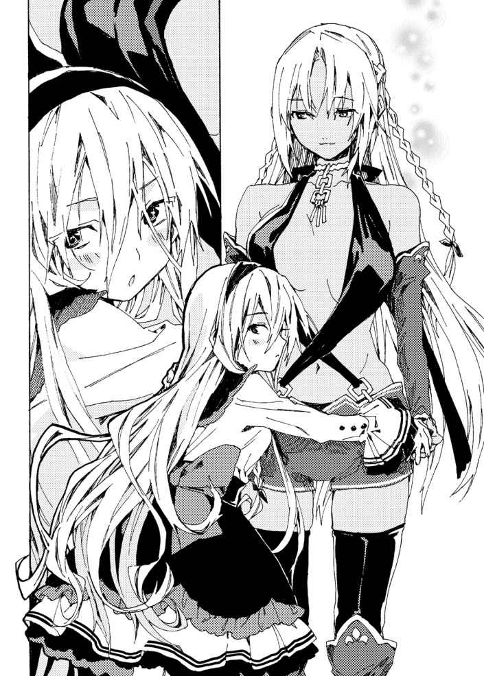
「大 歓 迎 だぜ。ついでにお前らも入れよ。疲れてるだろ？」
翔真はキルシュとミリアを誘った。
ふたりは顔を見合わせたあと、翔真に向きなおる。
キルシュとミリアは、柔らかな笑みを浮かべていた。
「それが僕に対する罰なら、甘んじて受け入れるよ」
「キルシュ姉様が入るなら、ミリアも一緒がいい！」
翔真はにこりと笑う。
「決まりだな。んじゃ、さっそく温泉の魔札を使うとするぜ！」
そうして全員まとめて入浴することになり、翔真は城の中庭に温泉を設けるのであった。
城の庭園を訪 れた翔 真 は、そこに広々とした温泉を設けた。
朝日を受けて煌めく湯船に浸かり、気持ちよさそうに吐 息 する。
竹垣に覆われているため庭園に咲 き誇 る花々を楽しむことはできないが、見 渡 す限りに一糸まとわぬ姿の美女がいる光景は、絶景以外のなにものでもない――視界は裸の美女で埋め尽 くされ、おまけに翔真の両 隣 には柔 肌 を押しつけてくる娘がいた。
「翔真ぁ。翔真ぁ！」
アイリスが翔真の身体 に腕 を絡め、ぐにぐにと乳房を密着させてくる。
そんなアイリスに対 抗 心 を燃やしたのか、シャーロットが控えめな胸を一生懸命に押しつけてくる。
「あの......スノウ様が見てますし、あまり変なことはしないでほしいんですけど......」
シャロンがおずおずと言うと、スノウがぽかんとした顔で翔真たちを指さしてくる。
「あれって変なことなの？」
「べ、べつに変なことではありませんよ？ そう、あれはスキンシップですからね！」
「スキンシップ！ わたしもしたいの！」
ざばざばと湯船をかきわけ、スノウが翔真に抱きついた。勢いよく密着したものだから、熱々の湯が飛び散った。
「熱いのじゃあ!? 」
顔面にお湯が直撃し、アイリスが悲鳴を上げる。
「でも嬉しいのじゃ！ だって温泉に入ってるって感じがするのでなっ！」
「アイリスお姉ちゃん、楽しそうなの！ わたしもなんだか楽しくなってきたの！ 翔真お兄ちゃんも、楽しいの？」
「おう。俺も楽しいぜ」
濡れた髪 を撫でてやると、スノウはくすぐったそうに目を細めた。それから翔真に背を向けると、あぐらの上に腰 かける。小ぶりなお尻が翔真の下腹部にのしかかる。
「あの......翔真さん？ 間違っても、変なふうにならないでくださいね？」
「変なふうってのは、どういうことだ？」
翔真がからかうような口調で言うと、シャロンがさっと紅潮する。
「翔真さんはいじわるです......」
拗ねたように唇を尖 らせるシャロンに、翔真は微笑を向ける。
「冗 談 だ。なるべく耐えるぜ」
「ならいいんです」
シャロンは安心したように頬を緩ませ、湯に浸かったまま気持ちよさそうにのびをした。
身体をぐんと伸 ばしたおかげで、湯船に隠 れていた巨乳があらわになる。
翔真に見られているとも知らず――あるいは、いまさら隠す必要はないと考えたのか、シャロンは胸を隠そうともしなかった。
「おい、そろそろ替われよ。あたしだって翔真に抱きつきたいんだよ」
「わしは嫌 じゃ。ずっとこうしていたいのじゃ！」
「シャーロット、そこ替わってくれよ」
「嫌よ」
ふたりに断られ、リリーはがっくりうなだれる。するとスノウが顔を上げ、
「この場所譲 ってあげるのっ！」
「いや、さすがにそこはちょっと勇気がいるっていうか......さすがに全裸で抱き合うのは恥ずかしいっていうか......」
リリーがたじろぐ意味がわからないのか、スノウは不思議そうに小首を傾 げた。
「正面から抱き合うのが恥ずかしいなら、座るだけにすればいいの」
「そうしたいのは山々だが、あたしには翼があるからな。ま、こいつらもそのうち身体を洗うだろうし、そのときに備えて先に身体を洗っておくぜ」
リリーが湯船を出ると、今度はジュナとカトレアが近づいてきた。シャーロットは立ち上がり、
「ジュナ。替わるわよ」
と、優しくジュナに告げる。
「い、いいの？」
「いいわよ。あたしの次はジュナの番って決めてたもの。このままだとのぼせちゃいそうだし、身体を洗ういい機会だわ」
そう言って、シャーロットはジュナに翔真のとなりを譲った。
ジュナは嬉しそうに翔真の横に移動すると、ぴたりと肩を密着させる。
「羨 ましいのだがね......」
カトレアが物欲しそうな眼差しを向けてくる。
するとスノウが立ち上がり、
「カトレアお姉ちゃんに特等席を譲ってあげるのっ！ それとも、カトレアお姉ちゃんも恥ずかしいの？」
「吾輩はべつに気にしないのだよ。だけど......ちょっとだけ重いかもしれないのだよ」
「俺 は気にしないぜ」
「だ、だったら失礼するのだよ......」
カトレアは恥ずかしそうに頬を紅潮させつつ、翔真になめらかな背中を向けた。そして、あぐらの上に肉感的なお尻を乗せてくる。
そうして三人の美女に囲まれ、動けなくなった翔真は、湯船の外へ視線を向けた。
ミストとカンナとリリーとシャーロットが身体を洗い、ミモザは尾 ひれを洗っている。そのとなりでは、ミリアがキルシュに髪を洗ってもらっていた。幸せそうな横顔の下に、ロケットのように突き出 した巨乳が見える。
「キルシュ姉様を変な目で見ちゃだめ！」
翔真の心の声を聞いたのか、ミリアが怒鳴ってきた。
「いいじゃねえか。減るもんじゃねえんだし」
「だめ！」
ミリアがキルシュを庇うように立った。
キルシュの前で両 腕 を広げ、ほどよく膨らんだ胸を惜しげもなく晒している。
「目が染みるっ！ 目が染みるよキルシュ姉様！」
泡が瞳に侵 入 したのか、ミリアは咄 嗟 に目を押さえた。
キルシュはやれやれと肩 をすくめ、ミリアの泡を洗い流してあげる。
「いやぁ、結婚式が待ち遠しいのぅ！ 早く翔真の子どもを産みたいのぅ！」
アイリスが楽しげに声を弾 ませると、ルメリアが顔を曇 らせた。
「どうしたルメリア？」
翔真が心配そうにたずねると、ルメリアは不安げに瞳を揺 らした。
「私がご主人様のおそばにいると、家族団らんの邪 魔 になるのではないでしょうか？」
「んなことねえよ。俺に子どもができても、ルメリアのことを邪魔に思ったりしないぜ」
「ご主人様......」
「けど、こいつら全員と子作りして、大勢子どもができたら、さすがにルメリアと過ごす時間は減っちまうだろうな。けど俺は、ルメリアに寂しい思いをさせるなんざごめんだ。だから......いっそ結婚するか？」
「けっこ......？」
言葉の意味がわからなかったのだろう。きょとんとしていたルメリアは、ぼんっと顔を真っ赤にした。
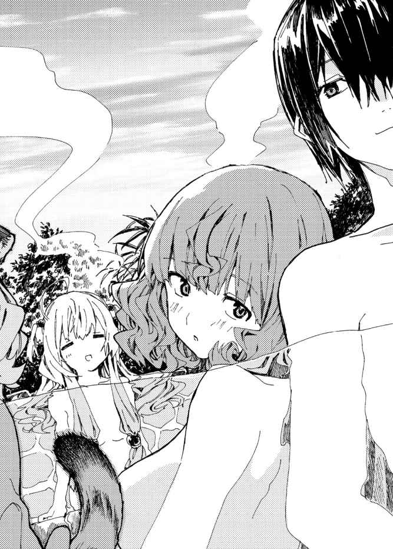
「ご、ご主人様と......結婚ですか？」
「そうだ。嫌か？」
ルメリアはぶんぶんと首を振 る。
「い、嫌ではありません。ですが......私は奴隷です......」
「そうだ。ルメリアは俺の奴隷だ。いつか俺とルメリアとのあいだに子どもができたとき、母親が奴隷だと知ったら、子どもが嫌な思いをするかもしれねえ。だから、俺と結婚するなら、そのときは奴隷契約を破棄するぜ。それでもよければ結婚しよう」
ルメリアが、じぃっと見つめてくる。
「......私なんかと結婚して、よろしいのですか？」
「もちろんだ。ルメリアみたいな可愛くて優しい女と結婚できて喜ばない男はいないぜ。つまり俺は最高に幸せな男ってわけだ」
力強い肯 定 の返事を聞き、ルメリアは幸せそうに唇をほころばせた。
「......はい。末永く可愛がってください、ご主人様」
「その『ご主人様』ってのも、結婚したらほかの呼称に言い換えないとな」
「なんとお呼びすればよいのでしょう？」
「好きに呼んでくれて構わないさ。ま、結婚式の日までに決めてくれると助かるぜ」
「はいっ」
結婚式と聞き、現実味が湧いたのだろう。ルメリアは美 貌 に笑みを広げていく。
「......どうした、カンナ？」
湯船の外からじぃっとこちらを見ているカンナに、翔真はたずねる。
カンナはびくっと震え、迷うようにもじもじしていたが、気合いを注入するように頬を叩き、決意の眼差しを向けてきた。
「あたしも！ あたしも翔真くんのお嫁さんになりたい！ ......けど、だめかなぁ？」
自信なさげに伏し目がちになるカンナに、翔真はほほ笑みを向ける。
「だめじゃないさ。カンナとの結婚を、断る理由はないしな」
その言葉を聞いた瞬 間 、カンナはその場で跳びはねた。
「嬉 しいっ！ 嬉しいっ！ あたし、翔真くんのこと大好きだったもんっ！」
ぴょんぴょん跳ねて喜びを表現するカンナ。つるっと滑ってしまわないか心配していたところ、アイリスが言った。
「嫁を増やすのは構わぬが、最初に結婚式をするのは正妻であるこのわしじゃからな？ それだけは忘れてはならぬぞ？」
当然の権利とばかりにアイリスが言うと、シャーロットが不服そうに眉 をひそめた。
「はあ？ なに言ってるのよ？ 正妻と結婚式の順番は関係ないじゃないっ。ていうか、そもそもあんたが正妻だって誰 が決めたのよ？」
「正妻とかどうでもいいから、吾輩は早く結婚式をしたいのだよ」
「そうだ！ じゃねえと翔真とキスできねえだろ！」
「わたし、すぐにでも翔真さんの赤ちゃんがほしいわ」
嫁たちが結婚式の順番を巡 って揉めだした。
密着した状態で口論されると落ち着こうにも落ち着けないため、翔真はため息まじりに告げるのだった。
「揉め事があるなら、神託遊戯 で解決すればいいだろ」
その提案に、嫁たちははっとする。
そして、強気な眼差しで睨 みあう。
「どうやら、そうするしかないようじゃな」
翔真の提案に、アイリスをはじめ嫁たちは乗り気になる。
かくして嫁たちによる『竜 胆 翔真との結婚式の順番』を賭けた神託遊戯トーナメントの開催が決まったのであった。
おひさしぶりです、猫又ぬこです。
このたびは『アイテムチートな奴隷ハーレム建国記５』を手に取っていただきまして、まことにありがとうございます。
前巻で全権代理者を全員登場させることができ、さらに今巻でキルシュとの戦いを描くことができ、ひとまずほっとしております。
さて、あとがきから読む派の方もいらっしゃると思いますのでネタバレにならないよう内容には触れず、テーマについて語ろうと思います。
いまさらですが、本シリーズのテーマは『救済』となっております。
テーマに据えたからには、味方だけを救うのではなく、敵と味方の両方を救いたい――そんな思いでここまで書いてきた『アイテムチートな奴隷ハーレム建国記』ですが、果たして翔真くんはみんなを救うことができたのでしょうか。
翔真くんの活躍は、ぜひ本編でご確認いただければと思います。
それでは謝辞を。
本作は多くの方々のご尽力により作られています。
担当さんをはじめとするＨＪ文庫編集部の皆様。これからも頑張りますので、今後ともよろしくお願いします。
イラストレーターの奈津ナツナ先生。お忙しいなか美麗なイラストを描いてくださり、ありがとうございます。
校正様やデザイナー様、本作に関わってくださった多くの関係者の皆様。いつも本当にありがとうございます。
そしてなにより本作をご購入くださった読者の皆様に最上級の感謝を。皆様に少しでもお楽しみいただけたなら、これ以上の幸せはありません。
それでは、次巻でお会いできることを祈りつつ。
二〇一七年じめじめしている日 猫又ぬこ
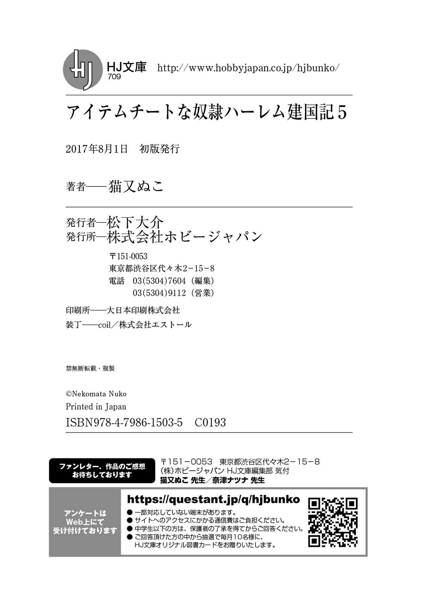